Sehr geehrte Kundin, sehr geehrter Kunde,
vielen Dank, dass Sie sich für ein Windrose-Fahrzeug entschieden haben.
Bitte lesen Sie diese Betriebsanleitung sorgfältig durch, bevor Sie das Fahrzeug zum ersten Mal in Betrieb nehmen. Sie enthält wichtige Informationen zu Fahrzeugfunktionen, sicherem Betrieb, Wartungsanforderungen und technischen Spezifikationen. Die Vertrautheit mit diesen Informationen trägt zur sicheren Fahrweise und optimalen Fahrzeugleistung bei.
Aufgrund unterschiedlicher Fahrzeugkonfigurationen und Sonderausstattungen kann das an Sie ausgelieferte Fahrzeug geringfügig von den Beschreibungen oder Abbildungen in dieser Anleitung abweichen. Windrose behält sich das Recht vor, Fahrzeugdesign, Spezifikationen und Ausstattung im Rahmen der kontinuierlichen Produktverbesserung ohne vorherige Ankündigung zu ändern.
Die Informationen, Abbildungen und technischen Daten in dieser Anleitung waren zum Zeitpunkt der Veröffentlichung korrekt. Sie dienen ausschließlich als Referenz und stellen keine vertragliche Verpflichtung dar.
Kein Teil dieser Betriebsanleitung darf ohne vorherige schriftliche Genehmigung von Windrose in irgendeiner Form vervielfältigt oder übertragen werden.
Anmerkung: Die Titelbilder und Abbildungen in dieser Anleitung dienen nur als Referenz. Das tatsächliche Fahrzeugaussehen und die Spezifikationen können variieren.
Inhaltsverzeichnis
1. Sicherheit & Vorschriften
2. Fahrzeugübersicht
3. Innenraum & Komfort
4. Laden & Vorbereitung
5. Instrumentenkombi
6. Fahrbedienelemente
7. Fahrerassistenz
8. Notfallmaßnahmen
9. Wartung
10. Technische Daten
1AHinweise für Benutzer
↑ ObenVor der Fahrt
Dieses Fahrzeug ist eine batteriebetriebene elektrische Sattelzugmaschine.
Befolgen Sie bei täglichem Betrieb und Wartung alle Warnungen und Anweisungen in dieser Betriebsanleitung (nachfolgend als „diese Anleitung" bezeichnet), um Fahrzeugschäden oder Personenverletzungen zu vermeiden.
Lesen Sie diese Anleitung vor der ersten Inbetriebnahme des Fahrzeugs sorgfältig durch, um sich mit den Funktionen und Betriebsanforderungen vertraut zu machen. Wenn Sie bei der Nutzung auf Probleme stoßen, wenden Sie sich an die Windrose-Service-Hotline.
Das Urheberrecht dieser Anleitung liegt bei Windrose. Kein Teil dieser Anleitung darf ohne vorherige schriftliche Genehmigung von Windrose vervielfältigt, übertragen oder verbreitet werden.
Windrose behält sich das Recht vor, den Inhalt dieser Anleitung im Rahmen der kontinuierlichen Produktverbesserung ohne vorherige Ankündigung zu aktualisieren. Bitte beachten Sie die elektronische Betriebsanleitung im zentralen Display oder in der Windrose-Mobil-App für die neuesten Fahrzeuginformationen.
Windrose-Website:
Windrose-Service-Hotline:Sie können in Ihrem offiziellen App-Store nach „Windrose" suchen, um die Anwendung herunterzuladen.
AnmerkungAbkürzungen werden bei ihrer ersten Erwähnung im Format „vollständiger Name (Abkürzung)" eingeführt. Danach wird die Abkürzung verwendet.
1BBeschreibung der Warnhinweise
↑ ObenVor der Fahrt
In dieser Anleitung werden folgende Signalwörter und Symbole verwendet:
WarnungWeist auf eine gefährliche Situation hin, die, wenn sie nicht vermieden wird, zu schweren Verletzungen oder zum Tod führen kann.
1B.1Hinweis
↑ ObenHinweisWeist auf eine Situation hin, die Schäden am Fahrzeug oder seinen Komponenten verursachen kann.
1B.2Anmerkung
↑ ObenAnmerkungBietet zusätzliche hilfreiche Informationen oder Betriebshinweise.
1B.3Umweltschutz
↑ ObenUmweltschutzWeist auf Informationen zum Umweltschutz oder zur Energieeffizienz hin.
1B.4Sternchen
↑ ObenEin Sternchen (*) nach einem Funktionsnamen gibt an, dass die Funktion nur für bestimmte Fahrzeugmodelle oder optionale Konfigurationen gilt.
1B.5
Informationen zu Abbildungen
↑ Oben
Dieser Pfeil zeigt die genaue Position des Objekts, wie in der Abbildung dargestellt.
Dieser Pfeil zeigt die Bewegungsrichtung des Objekts, wie in der Abbildung dargestellt.
Dieser Pfeil zeigt die Drehrichtung des Objekts, wie in der Abbildung dargestellt.
Dieser Pfeil zeigt die Klapprichtung des Objekts, wie in der Abbildung dargestellt.
1CUmweltschutz
↑ ObenVor der Fahrt
Windrose ist dem nachhaltigen Entwickeln und dem Umweltschutz verpflichtet. Dieses Fahrzeug wurde entwickelt, um die Energieeffizienz zu verbessern und Emissionen zu reduzieren. Sie können zum Umweltschutz beitragen, indem Sie verantwortungsbewusst fahren und das Fahrzeug energieeffizient betreiben.
1DBetriebssicherheit
Vor der Fahrt
Halten Sie jederzeit das zulässige Gesamtgewicht und die Achslast ein. Überladen Sie das Fahrzeug nicht, da eine Überladung zu Fahrzeugschäden, Kontrollverlust oder Personenverletzungen führen kann.
Ersetzen Sie jeden Sicherheitsgurt, der bei einem Unfall Aufprallkräften ausgesetzt war, auch wenn keine sichtbaren Schäden vorhanden sind
Warnungvorhanden.
Warnung
Fahren Sie niemals im Leerlauf bergab. Dadurch entfällt die Motorbremswirkung des Antriebsmotors, was zu einem Kontrollverlust über das Fahrzeug führen kann.
Stellen Sie vor der Fahrt den Sitz auf die richtige Position ein. Eine falsche Sitzposition kann zu Ermüdung, unerwarteten Sitzbewegungen oder zum Verlust der Fahrzeugkontrolle führen. Stellen Sie sicher, dass die Sitzposition die ordnungsgemäße Verwendung des Sicherheitsgurts ermöglicht.
Sicherheitsgurte sind wesentliche Sicherheitsvorrichtungen. Alle Insassen müssen während der Fahrt den Sicherheitsgurt ordnungsgemäß angelegt haben.
Lehnen Sie die Sitzlehne während der Fahrt nicht übermäßig zurück. Bei einer Notbremsung kann eine falsche Sitzposition
die Wirksamkeit des Sicherheitsgurts verringern.
In den folgenden Situationen darf 30 km/h nicht überschritten werden:
Einfahren in oder Ausfahren aus Radwegen, Bahnübergängen, engen Kurven, schmalen Straßen oder Brücken.
Wenden, Abbiegen oder Befahren einer steilen Steigung in Gefällerichtung.
Die Sichtweite beträgt aufgrund von Nebel, Regen, Schnee, Staub oder Hagel weniger als 50 m.
Fahren auf vereisten, schneebedeckten oder schlammigen Straßen.
Abschleppen eines liegengebliebenen Fahrzeugs.
↑ Oben
HinweisHalten Sie beim Fahren in der Nähe eines Radioastronomie-Observatoriums einen sicheren Abstand. Mit Radar ausgestattete Fahrzeuge können elektromagnetische Störungen bei Observatoriumsgeräten verursachen.
1EOriginalteile
Vor der Fahrt
Windrose übernimmt unter folgenden Umständen keine Garantie für Teile:
Nicht autorisierte Fahrzeugmodifikationen, insbesondere an sicherheitsrelevanten Systemen (z. B. Hochvoltsysteme, elektrische Systeme, Bremsen, Lenkung oder TBOX).
Manipulation am OBD-System des Fahrzeugs.
Verwendung nicht zugelassener Teile oder Flüssigkeiten, die zu Sicherheitsrisiken oder Fahrzeugschäden führen.
Nichtvorlage von Unterlagen, die die Verwendung zugelassener Flüssigkeiten während des Garantiezeitraums bestätigen.
Nichtdurchführung der Fahrzeugwartung in einem von Windrose autorisierten Servicezentrum gemäß den Wartungsanforderungen.
1FDatensicherheit
↑ ObenVor der Fahrt
In Übereinstimmung mit den geltenden Gesetzen und Vorschriften erhebt und verarbeitet Windrose Fahrzeugdaten, einschließlich Standortinformationen, Fahrverhaltendaten, Audio- und Videoaufzeichnungen sowie personenbezogener Daten.
Windrose ergreift geeignete technische und organisatorische Maßnahmen zum Schutz dieser Daten in Übereinstimmung mit den geltenden Datenschutzvorschriften und Industriestandards.
1GFahrzeugmodifikation
Vor der Fahrt
↑ Oben1G.1Erforderliche Unterlagen vor der Modifikation
Jede Fahrzeugmodifikation muss den geltenden technischen und regulatorischen Anforderungen entsprechen. Vor der Modifikation müssen die entsprechenden technischen Unterlagen bei Windrose eingereicht werden.
Die Unterlagen müssen mindestens enthalten:
Zweck und Betriebsbedingungen des modifizierten Fahrzeugs.
Gesamtfahrzeugmasse und Achslasten nach der Modifikation.
Gesamtabmessungen des modifizierten Fahrzeugs (einschließlich Arbeitskonfiguration).
Aufbauhöhe über dem Boden.
Aufbau-Befestigungsmethode.
Hilfsrahmen-Schemazeichnung.
1HFahrzeugverschrottung
Vor der Fahrt
↑ ObenFahrzeuge, die die Zulassungsanforderungen nicht mehr erfüllen, müssen gemäß den geltenden Umweltvorschriften entsorgt werden.
Die Fahrzeugverschrottung und das Recycling der Hochvoltbatterie müssen von Windrose oder autorisierten Recyclingorganisationen durchgeführt werden.
WarnungDie unsachgemäße Entsorgung von Hochvoltbatterien kann zu Bränden oder Umweltschäden führen. Hochvoltbatterien dürfen nicht ohne Genehmigung zerlegt oder entsorgt werden.
1G.2Recycling der Hochvoltbatterie
Windrose wird die Kapazität und den Zustand der Hochvoltbatterie testen und die Hochvoltbatterie gemäß den zum jeweiligen Zeitpunkt geltenden Gesetzen, Vorschriften und Marktbedingungen recyceln.
Recycling der Hochvoltbatterie: Recycling und Weiterverarbeitung sollten von Windrose oder einer von Windrose benannten Drittanbieter-Recyclingorganisation durchgeführt werden.
Transport der Hochvoltbatterie: Hochvoltbatterien werden von einer professionellen Transportagentur transportiert. Wenden Sie sich an das von Windrose autorisierte Servicezentrum, um eine professionelle Recyclingagentur zur Verarbeitung zu benachrichtigen.
Warnung
Entsorgen oder werfen Sie gebrauchte Hochvoltbatterien nicht weg, um versehentliche Brände oder schwere Umweltverschmutzung zu vermeiden.
Übergeben Sie verbrauchte Hochvoltbatterien nicht an andere Einheiten oder Personen. Sie sind für jegliche Umweltverschmutzung oder Sicherheitsunfälle verantwortlich, die durch unerlaubtes Zerlegen von Hochvoltbatterien verursacht werden.
1IEco-Fahren
Vor der Fahrt
Die folgenden Maßnahmen helfen, die Reichweite und Energieeffizienz zu maximieren:
Halten Sie eine gleichmäßige Geschwindigkeit ein und vermeiden Sie starkes Beschleunigen oder Bremsen.
Halten Sie das Fahrzeug durch regelmäßige Wartung in gutem Betriebszustand.
Fahren Sie niemals im Leerlauf, da dies zu unzureichender Schmierung der E-Achse führt und Komponentenschäden verursachen kann.
1JWinterfahrt
↑ ObenVor der Fahrt
1J.1Vorbereitung auf die Winterfahrt
Verwenden Sie hochwertiges Kühlmittel entsprechend der niedrigsten Temperatur; der Gefrierpunkt des Kühlmittels sollte unter der örtlichen Mindesttemperatur liegen.
Stellen Sie sicher, dass die Batterie jederzeit vollständig geladen ist, um ein Einfrieren der Batterie bei niedrigen Temperaturen zu verhindern.
1J.2Verwendung von Fahrzeugkühlmittel im Winter
↑ ObenIn der kalten Jahreszeit oder wenn das Fahrzeug an einem kalten Ort geparkt ist, sollten die Frostschutzeigenschaften des Kühlmittels sichergestellt werden. Bitte verwenden Sie das von Windrose empfohlene Kühlmittel.
1J.3Vorsichtsmaßnahmen beim Winterfahren
Es wird empfohlen, Schneeketten oder Winterreifen zu verwenden.
Vermeiden Sie plötzliches Beschleunigen, plötzliches Bremsen und scharfe Kurven bei hohen Geschwindigkeiten.
Fahren Sie auf schnee- und eisbedeckten Straßen mit niedriger Geschwindigkeit, um eine bessere Betriebsbremsung zu gewährleisten.
Halten Sie einen angemessenen Sicherheitsabstand zu anderen Fahrzeugen ein (erhöhen Sie den Abstand bei Regen- und Schneewetter
Starten Sie nach dem Anbringen der Schneeketten das Fahrzeug und prüfen Sie, ob die Ketten locker sind oder ob die Reifen nicht ordnungsgemäß montiert sind.
↑ ObenWarnungBei Verwendung von Schneeketten ist es verboten, die maximale effektive Fahrgeschwindigkeit zu überschreiten, um Unfälle zu vermeiden.
oder Eisstraßen kann der Bremsweg der Betriebsbremse zunehmen).
1KVerwendung von Schneeketten
Vor der Fahrt
Beachten Sie beim Einsatz von Schneeketten Folgendes:
Es wird empfohlen, Schneeketten zu verwenden, wenn auf Straßen mit dicken Schnee- oder Eisschichten gefahren wird.
Schneeketten müssen mit der am Fahrzeug montierten Reifengröße und dem Reifentyp kompatibel sein.
Montieren Sie Schneeketten an den Außenreifen der Antriebsachse (beide Seiten).
Achten Sie darauf, die Reifen beim Montieren oder Entfernen von Schneeketten nicht zu beschädigen.
Hinweis
 Entfernen Sie die Schneeketten, wenn Sie auf langen Straßen ohne Schnee und Eis fahren.
Entfernen Sie die Schneeketten, wenn Sie auf langen Straßen ohne Schnee und Eis fahren.Stellen Sie sicher, dass die Schneeketten während der Fahrt keinen Kontakt mit Fahrzeugkomponenten haben und diese nicht beeinträchtigen.
Montieren und entfernen Sie Schneeketten nur, wenn das Fahrzeug auf ebenem Untergrund geparkt ist.
1LFahren in tropischen und heißen Regionen
Vor der Fahrt
Überprüfen Sie den Fahrzeugzustand vor der Fahrt:
Überprüfen Sie, ob der Kühlmittelstand im normalen Bereich liegt, und kontrollieren Sie auf Leckagen.
Lassen Sie keine brennbaren Gegenstände (z. B. Feuerzeuge, Aerosolprodukte, Parfüms) längere Zeit auf dem Armaturenbrett oder in direktem Sonnenlicht. Hohe Temperaturen können dazu führen, dass Druckbehälter bersten und eine Brandgefahr entstehen.
Beachten Sie während der Fahrt Folgendes:
Leuchten aufleuchten, halten Sie sofort an und
wenden Sie sich an ein von Windrose autorisiertes Servicezentrum.
Achten Sie auf den Reifendruck und die Reifentemperatur. Wenn der Reifendruck oder die Reifentemperatur abnormal ist, halten Sie sofort an und lassen Sie die Reifen natürlich abkühlen. Kühlen und entlüften Sie die Reifen nicht durch Besprühen mit Wasser oder Ablassen der Luft, da dies die Reifenalterung und den Verschleiß beschleunigt und im schlimmsten Fall zu Reifenplatzer führen kann.
Wenn während der Fahrt ein Reifenplatzer auftritt, betätigen Sie sofort den Warnblinkschalter, halten Sie das Lenkrad in der 9- und 3-Uhr-Position, ohne es zu drehen, und betätigen Sie das Bremspedal abwechselnd, um das Fahrzeug allmählich zu verlangsamen und andere Verkehrsteilnehmer zu warnen.
Überwachen Sie den Reifendruck und die Reifentemperatur.
Wenn einer von beiden abnormal ist, halten Sie das Fahrzeug so schnell wie möglich sicher an und lassen Sie die Reifen natürlich abkühlen. Kühlen Sie die Reifen nicht mit Wasser oder durch Ablassen der Luft, da dies die Reifenalterung beschleunigen und das Reifenplatzrisiko erhöhen kann.
Behalten Sie die Kontrollleuchten und Warnlampen im Kombiinstrument im Blick, und wenn fahrzeugbezogene MILs oder Warn-
Fahren auf unebenen und rutschigen Straßen
Vor der Fahrt
Beachten Sie beim Fahren auf unebenen und rutschigen Straßen Folgendes:
Reduzieren Sie auf unebenen Straßen die Geschwindigkeit, um den Fahrkomfort zu verbessern und den Verschleiß von Fahrwerks- und Stoßdämpfungskomponenten zu minimieren.
Reduzieren Sie auf rutschigen Straßen die Geschwindigkeit und bremsen Sie sanft, um Traktionsverlust und Fahrzeugschleudern zu verhindern.
Wenn das Fahrzeug auf nassen oder rutschigen Oberflächen zu schleudern beginnt, reduzieren Sie die Geschwindigkeit gleichmäßig mit der Betriebsbremse und vermeiden Sie plötzliche Lenkeingaben.
1MRampenfahrt
↑ ObenVor der Fahrt
1M.1Vorsichtsmaßnahmen beim Bergauffahren
Wenn das Fahrzeug beim Anfahren am Berg zurückrollt, drücken Sie sofort das Bremspedal, betätigen Sie die elektronische Feststellbremse und starten Sie dann den Fahrvorgang neu.
Halten Sie beim Bergauffahren eine niedrige und gleichmäßige Geschwindigkeit. Betätigen Sie das Gaspedal progressiv und vermeiden Sie plötzliches Beschleunigen oder Bremsen.
Vorsichtsmaßnahmen beim Bergabfahren
Reduzieren Sie die Geschwindigkeit vor der Abfahrt, damit das Fahrzeug die Bergabstrecke mit kontrollierter Geschwindigkeit befährt.
Fahren Sie niemals im Leerlauf bergab. Dadurch entfällt die Motorbremswirkung des Antriebsmotors, was zu einem Kontrollverlust über das Fahrzeug führen kann.
Stellen Sie vor der Abfahrt sicher, dass das Bremssystem ordnungsgemäß funktioniert. Wenn ein Fehler vermutet wird, beheben Sie das Problem, bevor Sie weiterfahren.
Vermeiden Sie starke Lenkeingaben auf Gefällestrecken, um das Umkipprisiko zu reduzieren.
Vermeiden Sie bei langen Abfahrten kontinuierliches Bremsen. Verwenden Sie geeignete Geschwindigkeitskontroll- und Bremstechniken, um eine Überhitzung der Bremsen und mögliches Bremsversagen zu verhindern.
1NMeldung von Sicherheitsmängeln
↑ ObenVor der Fahrt
Wenn Sie vermuten, dass das Fahrzeug einen sicherheitsrelevanten Mangel aufweist, halten Sie das Fahrzeug so bald wie möglich an einem sicheren Ort an und wenden Sie sich umgehend an den Windrose-Kundendienst oder eine von Windrose autorisierte Servicestelle.
Windrose kann Sicherheitshinweise, Servicemaßnahmen oder Rückrufe herausgeben, sofern dies durch die geltenden Gesetze und Vorschriften erforderlich ist. In der Europäischen Union werden Fahrzeugsicherheitsrückrufe im Rahmen des EU-Marktüberwachungs- und Typgenehmigungsrahmens abgewickelt und mit den zuständigen nationalen Typgenehmigungs- und Marktüberwachungsbehörden der betreffenden Mitgliedstaaten koordiniert. Befolgen Sie alle von Windrose bereitgestellten Sicherheitsanweisungen und Anforderungen für Servicemaßnahmen.
Windrose-Service-Hotline: [EU-KONTAKTDATEN NOCH ZU BESTÄTIGEN]
Windrose-Service-Website: [EU-SERVICE-WEBSITE NOCH ZU BESTÄTIGEN]
Autorisiertes Servicenetz: [EU-SERVICENETZ NOCH ZU BESTÄTIGEN]
2AÜbersicht Fahrzeugaußenansicht
Fahrzeugidentifikation

Vorderer Blinker/Tagfahrlicht
Standlicht 3. Panoramadach
4. Seitliche Werkzeugkiste 5. Ladeanschluss
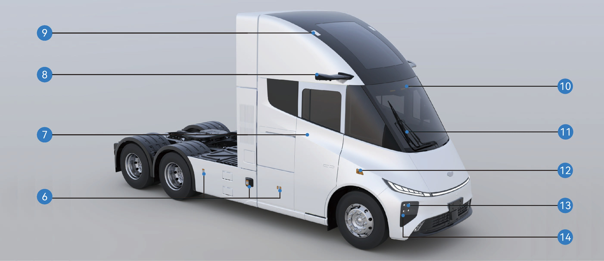
|
|
|
|
|
|
|---|---|---|---|---|---|
|
|
|
|
|
|
|
|
|
|
|
|
2BÜbersicht Fahrzeuginnenraum
Fahrzeugidentifikation

|
|
2. |
|
3. |
|
|---|---|---|---|---|---|
|
|
5. |
|
6. |
|
|
|
8. |
|
9. |
|
|
|
11. |
|
12. |
|
|---|---|---|---|---|---|
|
|
14. |
|
15. |
|
2CFahrzeugschild und FIN
Fahrzeugidentifikation
Fahrzeugschild

Das Fahrzeugschild befindet sich am rechten Schiebetürenrahmen (C-Säule) des Fahrzeugs.
Das Schild enthält folgende Informationen:
Name des Herstellers
Nummer der EG-Gesamtfahrzeuggenehmigung (EG-Typgenehmigung)
Fahrzeugidentifikationsnummer (FIN)
Zulässige Gesamtmasse für die Zulassung
Technisch zulässige Gesamtmasse
Sonstige gesetzlich vorgeschriebene Angaben gemäß geltenden Vorschriften
Fahrzeugidentifikationsnummer

Die Fahrzeugidentifikationsnummer (FIN) ist am rechten Längsträger des Rahmens, nahe der Mittellinie der Vorderachse, eingestanzt.
2DLage des Motorenschildes und des Codes
Fahrzeugidentifikation

Lage des Motorenschildes
Lage der Seriennummer des Motors
Hinweis
Der Motorabdruck (Einprägung) der Seriennummer wird zusammen mit der Motordokumentation bei der Werksauslieferung des Fahrzeugs mitgeliefert. Bitte bewahren Sie dieses Dokument für zukünftige Verwendung auf.
Da Traktionsmotoren verschiedener Hersteller unterschiedlich sein können, können die auf dem Motorenschild und den zugehörigen Unterlagen angegebenen Informationen abweichen. Bitte beachten Sie das tatsächliche Produkt.
Mikrowellen-/HF-Transparenz der Windschutzscheibe Fahrzeugidentifikation
Die Windschutzscheibe dieses Fahrzeugs enthält keine metallischen Beschichtungen, die die Übertragung von Hochfrequenz-(HF-)Signalen beeinträchtigen.
Elektronische Mautsysteme (ETC), Maut-Tags, Telematikgeräte oder andere HF-basierte Geräte können daher gemäß den Installationsanweisungen des Geräteherstellers an der Windschutzscheibe angebracht werden.
3AElektrische Schiebetür
↑ ObenZugang zum Fahrzeug
Auf der rechten Seite des Fahrzeugs ist eine elektrische Schiebetür eingebaut. Die Tür kann mit verschiedenen Bedienmethoden geöffnet oder geschlossen werden.
3A.1Bedienungsanleitung
Bedienung von außen

↑ ObenElektrisch: Wenn das Fahrzeug entsperrt ist, drücken Sie den versenkten Türgriffsschalter. Die elektrische Schiebetür öffnet oder schließt sich automatisch.
Manuell: Wenn das Fahrzeug entsperrt ist:
1. Drücken Sie das vordere Ende des versenkten Türgriffs, um ihn zu lösen.
2. Ziehen Sie den Griff nach außen, um die Schiebetür zu entriegeln.
3. Schieben Sie die Tür manuell auf.

3A.2Einsteigen in das Fahrzeug

Nachdem die elektrische Schiebetür geöffnet wurde, steigen Sie mit folgenden Schritten in die Kabine ein:
Stehen Sie der Tür zugewandt und fassen Sie die linken und rechten Haltegriffe mit beiden Händen.
Stellen Sie einen Fuß auf die untere Stufe und ziehen Sie sich nach oben.
Stellen Sie den anderen Fuß auf die obere Stufe.
Versetzen Sie Ihre untere Hand an eine höhere Position am Haltegriff.
Steigen Sie in die Fahrzeugkabine ein.
Ausrutschen oder Fallen beim Ein- oder Aussteigen aus dem Fahrzeug kann zu Personenschäden führen.
Nasses oder schmutziges Schuhwerk erhöht das Ausrutschrisiko erheblich. Üben Sie beim Ein- und Aussteigen aus der Kabine besondere Vorsicht.
Halten Sie beim Ein- und Aussteigen aus der Kabine immer Drei-Punkte-Kontakt mit dem Fahrzeug aufrecht (zwei Hände und ein Fuß, oder zwei Füße und eine Hand).
Springen Sie niemals aus dem Fahrzeug.
Bedienung von innen
Wenn das Fahrzeug entsperrt ist:

Wählen Sie „Kontrollzentrum" auf dem Fahrzeuginformationsbildschirm.
Wechseln Sie zur Oberfläche „Innen".
Drücken Sie die Steuertaste „Schiebetür", um die elektrische Schiebetür zu öffnen oder zu schließen.
Elektrisch: Wenn das Fahrzeug entsperrt ist, drücken Sie den Schalter an der B-Säulen-Verkleidung vor der Schiebetür, um die Tür zu öffnen oder zu schließen.
Manuell: Wenn die Schiebetür geschlossen ist, ziehen Sie den Innengriff nach hinten, um die Tür zu entriegeln und manuell aufzuschieben.
Wenn die Schiebetür offen ist, halten Sie den Innengriff fest und schieben Sie die Tür nach vorne, um sie zu schließen.
Notfälle im Fahrzeug


Falls der elektrische Schalter oder der Innengriff versagt:
Entfernen Sie die untere Abdeckplatte des Schiebetürschutzpanels.
Ziehen Sie das Notentriegelungskabel, um die Schiebetür manuell zu entriegeln.
Zentralverriegelungsschalter

Nachdem die Schiebetür geschlossen wurde:
Drücken Sie den Zentralverriegelungsschalter im Schalterblock auf der rechten Seite des Armaturenbretts, um die Schiebetür zu verriegeln.
Die Statusanzeige leuchtet auf, wenn die Tür verriegelt ist.
Drücken Sie den Schalter erneut, um die Tür zu entriegeln.
Manueller Modus der Schiebetür

Der manuelle Modus kann über den Fahrzeuginformationsbildschirm aktiviert oder deaktiviert werden:
Wählen Sie „Kontrollzentrum".
Wechseln Sie zur Oberfläche „Überwachung".
Wählen Sie „Manueller Modus Schiebetür".
↑ ObenWenn der manuelle Modus aktiviert ist, kann die Schiebetür nur manuell bedient werden.
Einklemmschutzfunktion der Schiebetür
Beim automatischen Schließen stoppt die Schiebetür, wenn sie ein Hindernis erkennt, und kehrt automatisch in die geöffnete Position zurück.
3A.3Sicherheitshinweise
↑ ObenWarnungDie Einklemmschutzfunktion ist nur beim elektrischen Schließvorgang aktiv. Bei manueller Türbedienung ist sie nicht aktiv.
3BSicherheitsgurt
↑ ObenZugang zum Fahrzeug
Der Fahrersitz und der Beifahrersitz sind mit Sicherheitsgurten ausgestattet. Sicherheitsgurte helfen, Verletzungen der Insassen bei einer Notbremsung oder einem Aufprall zu verhindern oder zu verringern.
3B.1Bedienungsanleitung
↑ ObenDer Fahrersicherheitsgurt befindet sich auf der linken Seite des Fahrersitzes und kann direkt herausgezogen und angelegt werden.
Der Beifahrersicherheitsgurt befindet sich auf der rechten Seite des Beifahrersitzes. Wenn der Beifahrersitz besetzt ist, erinnern Sie den Fahrgast, den Sicherheitsgurt vor Fahrtbeginn ordnungsgemäß anzulegen.
Korrekte Verwendung des Sicherheitsgurts
Beachten Sie beim Anlegen des Sicherheitsgurts folgende Richtlinien:
• Der Beckengurt sollte tief über dem Becken (Hüften) und nicht über dem Bauch verlaufen.
• Der Gurt sollte eng am Körper anliegen und keine Verdrehungen aufweisen.
• Der Schulterteil sollte über die Mitte der Schulter verlaufen.
• Den Gurt niemals über den Hals oder unter dem Arm führen.
• Nach dem Anlegen des Sicherheitsgurts ziehen Sie den Schulterteil nach oben, um sicherzustellen, dass der Beckenteil fest über den Hüften sitzt.
• Vergewissern Sie sich stets, dass der Sicherheitsgurt ordnungsgemäß eingerastet ist, bevor Sie losfahren.
Sicherheitsgurt-Erinnerung
Wenn der Sicherheitsgurt des Fahrers nicht angelegt ist, leuchtet die Sicherheitsgurt-Warnleuchte im Instrumentencluster auf.
Sobald der Fahrer den Sicherheitsgurt anlegt, erlischt die Warnleuchte.
Reinigung der Sicherheitsgurte
Wenn ein Sicherheitsgurt verschmutzt ist, reinigen Sie ihn mit milder Seife und Wasser.
1. Ziehen Sie den Sicherheitsgurt vollständig heraus und sichern Sie ihn in dieser Position.
2. Tragen Sie eine milde Seifenlösung auf die verschmutzte Stelle auf.
3. Reinigen Sie den Gurt vorsichtig mit einer weichen Bürste oder einem Tuch.
4. Spülen Sie bei Bedarf mit klarem Wasser nach.
5. Lassen Sie den Sicherheitsgurt vollständig trocknen, bevor er aufgerollt wird.
Rollen Sie einen nassen Sicherheitsgurt nicht in den Aufrollmechanismus zurück.

3B.2Sicherheitshinweise
WarnungAlle Insassen müssen während der Fahrt den Sicherheitsgurt ordnungsgemäß tragen. Die korrekte Verwendung von Sicherheitsgurten reduziert das Verletzungsrisiko bei Notbremsungen oder Kollisionen erheblich.
Das Nichtanlegen oder unsachgemäße Anlegen des Sicherheitsgurts kann zu schweren Verletzungen oder zum Tod führen.
Setzen Sie sich nicht in Bereiche, die nicht mit einem Sitz und einem Sicherheitsgurt ausgestattet sind.
Verwenden Sie keinen beschädigten oder defekten Sicherheitsgurt.
Jeder Sicherheitsgurt ist nur für einen Insassen ausgelegt. Teilen Sie einen Sicherheitsgurt niemals mit einer anderen Person.
Führen Sie den Schultergurt niemals über den Hals oder unter dem Arm.
Entfernen, verändern oder manipulieren Sie das Sicherheitsgurtsystem nicht.
Verwenden Sie keine Bleichmittel, Farbstoffe oder chemischen Lösungsmittel zur Reinigung von Sicherheitsgurten, da diese das Gurtmaterial schwächen können.
3CElektrische Fensterheber
↑ ObenZugang zum Fahrzeug
Die Seitenfenster können mit den Fensterheberschaltern auf der linken Seite des Armaturenbretts oder am Schlafkabinen-Bedienfeld bedient werden.
Das Fahrzeug ist mit einer automatischen Fensterschließfunktion ausgestattet. Wenn das Fahrzeug abgeschaltet und verriegelt wird, schließen sich die Fenster automatisch, sofern sie nicht bereits vollständig geschlossen sind.
3C.1
Bedienungsanleitung
Fenstereinstellung über Kombinationsschalter

Linker Fensterheberschalter: Halten Sie den Auf-/Ab-Schalter gedrückt, um die Öffnung des linken Fensters zu steuern; Drücken und loslassen Sie den linken Fensterheberschalter auf und ab, um das linke Fenster mit einem Klick zu heben oder zu senken.
Rechter Fensterheberschalter: Halten Sie den Auf-/Ab-Schalter gedrückt, um die Öffnung des rechten Fensters zu steuern; Drücken und loslassen Sie den rechten Fensterheberschalter nach oben
und unten, um das rechte Fenster mit einem Klick zu heben oder zu senken.
Fenstereinstellung über Schlafkabinenschalter

Linker Fensterheberschalter: Halten Sie den Auf-/Ab-Schalter gedrückt
↑ Obenum das Fenster automatisch vollständig zu schließen oder zu öffnen (Ein-Tasten-Heben).
3C.2Sicherheitshinweise
Warnung
Bevor die Fenster geschlossen werden, ist es wichtig sicherzustellen, dass kein Fahrgast Körperteile herausstreckt, da sonst schwere Verletzungen verursacht werden können.
Betätigen Sie die Fenster nicht bei hoher Geschwindigkeit.
AnmerkungEntfernen Sie Schnee und Eis rechtzeitig von der Fensteroberfläche, um Stillstand bei der Fensterbewegung zu vermeiden oder zu verhindern, dass das Fenster nicht mehr normal geöffnet und geschlossen werden kann.
Halten Sie die Schaltertasten gedrückt, um die Öffnung des linken Fensters zu steuern;
Drücken und loslassen Sie die beiden Tasten jeweils schnell, um das Fenster automatisch vollständig zu schließen oder zu öffnen (Ein-Tasten-Heben).
Rechter Fensterheberschalter: Halten Sie den Auf-/Ab-Schalter gedrückt, um die Öffnung des rechten Fensters zu steuern; Drücken und loslassen Sie die beiden Tasten jeweils schnell, um
3DSchlafkabinen-Sichtschutzvorhang*
↑ ObenZugang zum Fahrzeug
Der Schlafbereich ist mit Vorhangschienen ausgestattet, an denen Sichtschutzvorhänge angebracht werden können. Die Vorhänge bieten Privatsphäre und reduzieren den Sonnenlichteinfall im Schlafbereich.
* Diese Funktion ist nur bei bestimmten Fahrzeugmodellen verfügbar.
3D.1Bedienungsanleitung
Vorhangschiene der Schlafkabine
Die Vorhangschienen sind an der Decke über dem Schlafbereich montiert. Sichtschutzvorhänge können nach Bedarf an den Schienen befestigt werden.
Schlafkabinen-Sichtschutzvorhang*

↑ ObenWenn sie angebracht sind, können die Sichtschutzvorhänge über den Schlafbereich gezogen werden, um beim Ruhen Privatsphäre zu gewährleisten und Sonnenlicht abzuhalten.
3D.2Sicherheitshinweise
↑ ObenHinweisZiehen Sie den Sichtschutzvorhang nicht mit großer Kraft, um ein Herunterfallen zu verhindern.
3EPanoramadach

↑ ObenZugang zum Fahrzeug
Das Fahrzeug ist mit einem Panoramadach und einem elektrischen Sonnenschutzrollo ausgestattet. Das Panoramadach ist fest und nicht zu öffnen. Es lässt natürliches Licht in die Kabine und bietet einen Blick nach draußen. Das Sonnenschutzrollo kann bei Bedarf geöffnet oder geschlossen werden, um Sonnenlicht abzuhalten.
3E.1Bedienungsanleitung

Das Sonnenschutzrollo des Panoramadachs kann über den Fahrzeuginformationsbildschirm bedient werden.
Wählen Sie „Dach-Sonnenschutzrollo" in der Oberfläche „Innen" auf dem Fahrzeuginformationsbildschirm.
Halten Sie die EIN/AUS-Taste gedrückt, um das Sonnenschutzrollo zu öffnen oder zu schließen. Lassen Sie die Taste los, um die Bewegung zu stoppen.
Drücken Sie die EIN/AUS-Taste kurz und lassen Sie sie los, um den Automatikbetrieb zu aktivieren, der das Sonnenschutzrollo vollständig öffnet oder schließt.
Sicherheitshinweise
Hinweis
Ziehen Sie das Mondscheibensonnenschutzrollo nicht manuell, um Beschädigungen zu vermeiden.
Kratzen Sie das Mondscheibenglas, das Mondscheibensonnenschutzrollo oder die Klebestreifen rund um das Glas nicht mit scharfen Gegenständen.
3FElektrisches Sonnenschutzrollo der Windschutzscheibe
↑ ObenZugang zum Fahrzeug

Wenn Sie in Richtung starker Sonneneinstrahlung fahren, kann das elektrische Sonnenschutzrollo der Windschutzscheibe eingesetzt werden, um Blendung zu reduzieren und den Fahrkomfort zu verbessern.
3F.1Bedienungsanleitung
Das elektrische Sonnenschutzrollo der Windschutzscheibe kann über die Steuerschalter auf der linken Seite des Armaturenbretts bedient werden.

Schalter zum Absenken des Sonnenschutzrollos
Halten Sie diesen Schalter gedrückt, um das Sonnenschutzrollo der Windschutzscheibe abzusenken. Lassen Sie den Schalter los, um die Bewegung zu stoppen.
Schalter zum Anheben des Sonnenschutzrollos
Halten Sie diesen Schalter gedrückt, um das Sonnenschutzrollo der Windschutzscheibe anzuheben. Lassen Sie den Schalter los, um die Bewegung zu stoppen.
Sicherheitshinweise
↑ ObenHinweisZiehen Sie das elektrische Sonnenschutzrollo der Windschutzscheibe nicht manuell, um Beschädigungen zu vermeiden.
AnmerkungStellen Sie bei Verwendung des Sonnenschutzrollos sicher, dass es die effektive Sicht nicht beeinträchtigt.
3GInnenraum-Schlafkabine
↑ ObenZugang zum Fahrzeug
Im Fahrzeug befinden sich Schlafplätze, auf denen der Fahrer und die Fahrgäste ruhen können.
3G.1Bedienungsanleitung
Das obere rechte Polster der Schlafkabine kann manuell nach links geklappt und gefaltet werden, um Platz für den Beifahrersitz zu schaffen. Wenn auf der rechten Seite des Fahrzeugs eine höhenverstellbare Schlafkabine montiert ist, kann das obere Polster der rechten Schlafkabine manuell angehoben und fixiert werden, sodass es als Schlafkabinen-Kopfstütze in mehreren Einstellstufen verwendet werden kann. Um die Schlafkabine abzusenken, heben Sie das obere Polster der rechten Schlafkabine in die höchste Position und lassen Sie es dann los.
Schutznetz der Schlafkabine


Das Fahrzeug verfügt über ein Schutznetz für die Schlafkabine. Falten Sie das Schutznetz der Schlafkabine wie in der Abbildung gezeigt aus, bevor Sie die Schlafkabine benutzen, und stecken Sie dann die 8 Laschen an der linken, rechten und hinteren Wand der Schlafkabine in die 8 Schnallen am linken, rechten und hinteren Ende des Schutznetzes, um das Schutznetz in Position zu sichern.
Hinweis
Achten Sie beim Umklappen des Beifahrersitzes oder beim Anheben des oberen Polsters der Schlafkabine darauf, dass Ihre Finger nicht eingeklemmt werden.
Bitte bringen Sie das Schutznetz ordnungsgemäß an, bevor Sie die Schlafkabine benutzen. Wenn das Schutznetz nicht verwendet wird, besteht die Gefahr, dass Fahrgäste aus der Schlafkabine fallen, was die Wahrscheinlichkeit von Verletzungen und Todesfällen bei Unfällen erhöht.
3HRückspiegel
↑ ObenZugang zum Fahrzeug
Am Fahrzeug sind physische Rückspiegel montiert, die dem Fahrer eine effiziente Fahrsicht ermöglichen.
Sie können die physischen Rückspiegel einstellen, indem Sie auf dem Fahrzeuginformationsbildschirm des Armaturenbretts „Kontrollzentrum" auswählen und zur Oberfläche „Außen" wechseln.

Links-/Rechtseinstellung
Klicken Sie, um den linken/rechten physischen Rückspiegel separat auszuwählen und einzustellen.
Rückspiegelheizung
Klicken Sie auf diese Option, um die physischen Rückspiegel zum Enteisen und Entfrosten zu beheizen. Klicken Sie erneut, um sie auszuschalten, oder
sie wird nach dem Abschalten automatisch ausgeschaltet.
Warnung
Stellen Sie sicher, dass die Rückspiegel vor dem Fahren korrekt eingestellt sind, da dieses Verhalten während der Fahrt streng verboten ist. Die Nichtbeachtung dieser Anforderung führt zu Personenschäden oder Tod und Sachschäden.
Verdecken Sie den Sensor nicht. Schmutz, Eis und Schnee, der sich an der Kamera anhaftet, können die Funktion und Leistung beeinträchtigen. Achten Sie stets auf die Sauberkeit der Kamera und ihrer Umgebung, um Verkehrsunfälle zu vermeiden.
3IBecherhalter
↑ ObenZugang zum Fahrzeug
Becherhalter befinden sich jeweils auf der linken und rechten Seite des Armaturenbretts sowie an der Armlehne des Beifahrersitzes, sodass Sie einen Wasserbecher oder einen Getränkebehälter im entsprechenden Becherhalter ablegen können.

Becherhalter (links)


Becherhalter (rechts) • Becherhalter auf der rechten Seite des Beifahrersitzes
3I.1Sicherheitshinweise
WarnungLegen Sie keine heißen Getränke in den Becherhalter, die nicht fest verschlossen sind. Andernfalls können sie beim Fahren über Unebenheiten verschüttet werden und Personenschäden oder Beschädigungen an Fahrzeugteilen verursachen.
Anmerkung
Nur versiegelbare und passend dimensionierte Getränkebehälter dürfen in den Becherhalter gestellt werden, um ein Verschütten zu verhindern.
Legen Sie keinen ungeeigneten Behälter mit Gewalt in den Becherhalter, da sonst der Behälter oder das Fahrzeug beschädigt werden kann.
3JAschenbecher
↑ ObenZugang zum Fahrzeug
Im Fahrzeug befindet sich ein Aschenbecher, der zur Aufbewahrung von Zigarettenstummeln und Asche dient.
3J.1
Bedienungsanleitung

↑ ObenDer Aschenbecher ist im Becherhalter auf der rechten Seite des Armaturenbretts eingesetzt. Sie können den Aschenbecher je nach Bedarf an andere Stellen setzen.
3J.2Sicherheitshinweise
Warnung
Rauchen Sie während der Fahrt nicht, um Unfälle oder Verstöße gegen geltende Vorschriften zu vermeiden.
Vergewissern Sie sich vor dem Einwerfen von Zigarettenstummeln in den Aschenbecher, dass die Zigarettenstummel erloschen sind, um Brandunfälle durch glühende Zigarettenstummel zu vermeiden.
Stellen Sie beim Einsetzen des Aschenbechers sicher, dass er sicher eingesetzt und befestigt ist, damit der Aschenbecher nicht im Fahrzeug wackelt oder sich von der Befestigung löst.
↑ ObenAnmerkungWenn der Aschenbecher voll ist, decken Sie ihn unbedingt ab, um ein Verschütten von Zigarettenstummeln oder Asche zu vermeiden.
3KSeitlicher Werkzeugkasten
↑ ObenZugang zum Fahrzeug

Das Fahrerwerkzeug des Fahrzeugs wird im Werkzeugkasten auf der linken Seite des Fahrzeugs aufbewahrt und steht im Notfall zur Verfügung.
3K.1Bedienungsanleitung

↑ ObenSie können den Werkzeugkasten entriegeln, indem Sie auf dem Fahrzeuginformationsbildschirm des Armaturenbretts „Kontrollzentrum" auswählen, zur Oberfläche „Außen" wechseln und die Schaltfläche „Werkzeugkasten entriegeln" drücken. Der Werkzeugkasten wird von außen manuell geschlossen.
Im Werkzeugkasten befindet sich eine Lampe, die beim Öffnen des Werkzeugkastens automatisch aufleuchtet und sich beim Schließen automatisch ausschaltet.
3K.2
Sicherheitshinweise
↑ ObenWarnungHalten Sie den Werkzeugkasten während der Fahrt geschlossen, um Unfälle zu vermeiden.
3LInnenraum-Stauvorrichtung
↑ ObenZugang zum Fahrzeug
Im Fahrzeug befinden sich mehrere Stauvorrichtungen, in denen Gegenstände unterschiedlicher Größe aufbewahrt werden können.
3L.1Bedienungsanleitung

Unten rechts im Armaturenbrett befindet sich ein Staufach, in dem Gegenstände aufbewahrt werden können.

Staufach auf der rechten Seite des Beifahrersitzes
Staufach unter dem Beifahrersitz
Staufach unter der Schlafkabine
↑ ObenStaufächer befinden sich unter der Schlafkabine und dem Beifahrersitz. Sie können diese herausziehen und verwenden. Auf der rechten Seite des Beifahrersitzes befindet sich ein Staufach, in dem kleinere Gegenstände aufbewahrt werden können.

Oberhalb der Schlafkabine befindet sich ein Staufach. Die Lampe im Staufach leuchtet automatisch auf, wenn das Staufach geöffnet wird, und erlischt automatisch, wenn das Staufach geschlossen wird. Die maximale Tragfähigkeit des großen Staufachs über der Schlafkabine beträgt 25 kg, die des kleinen Staufachs 15 kg.
Bei Fahrzeugen ohne AR-HUD befindet sich an der Stelle des AR-HUD ein Staufach, in dem kleinere Gegenstände abgelegt werden können. Legen Sie nur kleine und leichte Gegenstände und keine scharfen Objekte in das Fach, um Beschädigungen an der Innenverkleidung des Fachs zu vermeiden.

3L.2Sicherheitshinweise
↑ ObenAnmerkungStellen Sie sicher, dass die Staufächer vor der Fahrt geschlossen sind, damit Gegenstände beim Fahren nicht aus der Höhe fallen und Gegenstände beschädigt werden oder Personenschäden entstehen.
3MNetztasche
↑ ObenZugang zum Fahrzeug
Im unteren linken Bereich des Fahrzeugs befindet sich eine Netztasche für kleinere Gegenstände.
3M.1Bedienungsanleitung

Netztasche
3M.2
Sicherheitshinweise
AnmerkungLegen Sie keine spitzen Gegenstände in die Netztasche, um Beschädigungen an der Netztasche oder Verletzungen des Fahrers zu vermeiden.
3NZeitungs- und Zeitschriftenhalter
↑ ObenZugang zum Fahrzeug
An der Rückseite des Fahrersitzes befindet sich eine Zeitungs- und Zeitschriftentasche, in der kleine Gegenstände wie Zeitungen und Karten aufbewahrt werden können.
Neben der Schlafkabine befindet sich eine Zeitungs- und Zeitschriftenhalterung, in der Zeitungen, Zeitschriften und andere Gegenstände aufbewahrt werden können.


Zeitungs- und Zeitschriftentasche über der Schlafkabine • Zeitungs- und Zeitschriftentasche auf der rechten Seite der
Schlafkabine
3N.1Sicherheitshinweise
↑ ObenAnmerkungDie an der Schlafkabine befestigte Zeitungs- und Zeitschriftenhalterung kann nur Gegenstände wie Zeitungen und Zeitschriften aufnehmen. Kleine Gegenstände, die in die Tasche gelegt werden, können nicht wieder herausgenommen werden.
3OKleiderhaken
↑ ObenZugang zum Fahrzeug
Über der Schlafkabine befindet sich ein Kleiderhaken zum Aufhängen von Kleidungsstücken.
3O.1Bedienungsanleitung

Kleiderhaken
3O.2
Sicherheitshinweise
AnmerkungDer Kleiderhaken kann nur leichte Kleidungsstücke oder Hüte usw. halten. Hängen Sie keine schweren Gegenstände daran.
3PAufhängevorrichtung
↑ ObenZugang zum Fahrzeug
An der Seite der Schlafkabine befindet sich eine Aufhängevorrichtung, an der Handtücher oder kleine Kleidungsstücke aufgehängt werden können.
3P.1Bedienungsanleitung

Aufhängevorrichtung
3P.2
Sicherheitshinweise
AnmerkungDie Aufhängevorrichtung darf nur zum Aufhängen von trockenen Handtüchern oder kleinen Kleidungsstücken verwendet werden. Hängen Sie keine schweren Gegenstände daran, um Beschädigungen an der Aufhängevorrichtung und Unfälle zu vermeiden.
3QUSB-Laden
↑ ObenZugang zum Fahrzeug
Das Fahrzeug verfügt über USB-Anschlüsse, die sich jeweils am linken Armaturenbrett und an der Armlehne des Beifahrersitzes befinden. Die USB-Anschlüsse können zum Laden von Mobiltelefonen mit einer Ladeleistung von 15W verwendet werden. Sowohl Typ-C- als auch Typ-A-Anschlüsse werden unterstützt.
3Q.1Bedienungsanleitung

Linker USB-Anschluss des Armaturenbretts

USB-Anschluss an der Armlehne des Beifahrersitzes
3Q.2Sicherheitshinweise
↑ ObenWarnungVerschütten Sie niemals Flüssigkeit am Anschluss.
HinweisAngeschlossene Geräte können sich beim Laden erhitzen. Stellen Sie sicher, dass die heißen Geräte die Sicherheit von Personen nicht gefährden oder Sachschäden verursachen.
3RKabelloses Laden des Telefons
↑ ObenDas rechte Armaturenbrett ist mit einem kabellosen Ladegerät ausgestattet, mit dem Mobiltelefone kabellos mit einer Ladeleistung von 15W geladen werden können.
3R.1
Sicherheitshinweise
↑ ObenWarnungLegen Sie keine Gegenstände mit metallischen Bestandteilen zusammen mit dem Mobiltelefon in den kabellosen Ladebereich, da sich die Gegenstände mit metallischen Bestandteilen erhitzen oder beschädigt werden können, was zu einem Sicherheitsunfall führen kann.
Legen Sie das Mobiltelefon beim Laden mit der Vorderseite nach oben in den
kabellosen Ladebereich.
3R.2Bedienungsanleitung

Kabellose Ladestation für Telefon
Hinweis
- Stellen Sie vor der Aktivierung der kabellosen Ladefunktion des Telefons sicher, dass die Schlüsselkarte, Kreditkarte oder andere magnetische Gegenstände vom Ladebereich ferngehalten werden.
Lassen Sie das Mobiltelefon nicht unbeaufsichtigt im Fahrzeug zum Laden zurück, um Sicherheitsrisiken zu vermeiden.
Verschütten Sie keine Flüssigkeiten im kabellosen Ladebereich, um Schäden an den elektronischen Bauteilen zu vermeiden.
Legen Sie keine schweren Gegenstände in den Ladebereich, um das kabellose Lademodul des Mobiltelefons nicht zu beschädigen.
Anmerkung
Es ist normal, dass das Mobiltelefon beim Laden eine Temperaturerhöhung erfährt.
Wenn das Mobiltelefon heiß ist, kann das Fahrzeug den Ladevorgang unterbrechen, um den Akku des Mobiltelefons zu schützen, und der Ladevorgang wird erst wieder aufgenommen, wenn das Mobiltelefon abgekühlt ist.
Die kabellose Ladefunktion unterstützt nur Mobiltelefone, Kopfhörer, Stereoanlagen und andere Geräte, die das kabellose Ladeprotokoll erfüllen.
Legen Sie das Gerät bei Verwendung der kabellosen Ladefunktion in die Mitte des Ladebereichs, um zu verhindern, dass das Gerät nicht oder nur ineffizient geladen wird.
Es kann jeweils nur 1 Mobiltelefon geladen werden.
Wenn die Telefonhülle aus einem speziellen Material besteht (z. B. eine Telefonhülle mit einem Metallbügel/Metallmagneten) oder zu dick ist, kann dies zu einem Ladefehler führen.
Wenn das Fahrzeug auf unebener Straße fährt, kann das kabellose Laden des Mobiltelefons zeitweise unterbrochen werden.
Wenn das Mobiltelefon nicht ordnungsgemäß geladen werden kann, stellen Sie sicher, dass das Mobiltelefon ohne Fremdkörper im kabellosen Ladebereich liegt, oder warten Sie, bis der kabellose Lade-
↑ ObenInduktionsbereich abgekühlt ist, bevor Sie es erneut versuchen. Wenn das Laden weiterhin nicht möglich ist, wenden Sie sich umgehend an ein autorisiertes Windrose-Servicecenter.
3SSteckdose
↑ ObenZugang zum Fahrzeug
Die untere linke Ecke der Schlafkabine ist mit 2 DC-Stromversorgungen ausgestattet, konfiguriert wie folgt:
Nennspannung: 24V
Maximaler Strom: 15A Nennspannung: 12V
Maximaler Strom: 10A
Die untere linke Ecke der Schlafkabine ist mit einem 230V-Wechselrichter und einer Steckdose ausgestattet, konfiguriert wie folgt:
Nennleistung: 1000W
Nennspannung: AC230V
Ausgangsfrequenz: 50Hz ± 0,5Hz
3S.1Bedienungsanleitung
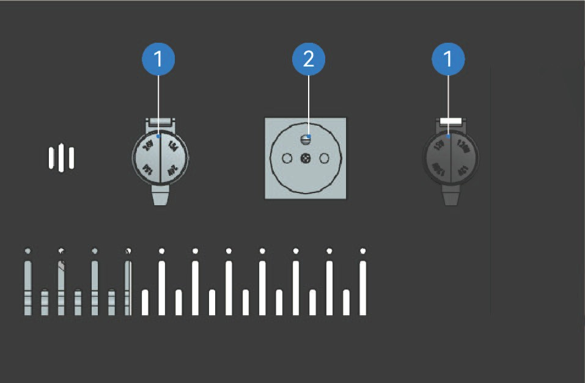
DC-Stromversorgung
AC-Stromversorgung

24V-Anhänger-Steckdose: Maximale sichere Betriebsleistung: 2 kW
3S.2Sicherheitshinweise
↑ ObenHinweisDer 230V-Wechselrichter kann nur verwendet werden, wenn das Fahrzeug mit Hochspannung verbunden ist. Wenn das Fahrzeug abgeschaltet ist, steht nur die 12V- oder 24V-Stromversorgung zur Verfügung.
3TDeckenleuchte

Innenraumbeleuchtung
Die Deckenleuchte kann auf zwei Arten ein- und ausgeschaltet werden.
Einschalter der Deckenleuchte
 Ausschalter der Deckenleuchte/Innenraumleuchte
Ausschalter der Deckenleuchte/Innenraumleuchte
Drücken Sie den oberen Einschalter der Deckenleuchte, um die Deckenleuchte einzuschalten; Drücken und loslassen Sie den unteren Ausschalter der Deckenleuchte/Innenraumleuchte, um die Deckenleuchte auszuschalten, und halten Sie den oberen Ausschalter der Deckenleuchte/Innenraumleuchte gedrückt, um die Deckenleuchte auszuschalten.
Darüber hinaus können Sie die Deckenleuchte ein-/ausschalten, indem Sie auf dem Fahrzeuginformationsbildschirm des Armaturenbretts „Kontrollzentrum" auswählen, zur Oberfläche „Beleuchtung" wechseln und die Schaltfläche „Deckenleuchte" drücken.
EIN/AUS-Funktion beim Öffnen/Schließen der Tür


Sie können die EIN/AUS-Funktion beim Öffnen/Schließen der Tür aktivieren/deaktivieren, indem Sie im Fahrzeuginformationsbildschirm des Kombiinstruments „Control Center" auswählen, zur Oberfläche „Beleuchtung" wechseln und auf die Schaltfläche „Türgesteuert" klicken. Wenn diese Funktion aktiviert ist, leuchtet die Deckenleuchte beim Öffnen der Tür auf bzw. erlischt beim Schließen der Tür.
3T.1Sicherheitshinweise
↑ Nach obenWarnungVerwenden Sie beim Nachtfahren keine vorderen Innenraumleuchten. Helles Licht im Fahrzeuginnenraum kann die Sicht beim Nachtfahren beeinträchtigen und möglicherweise eine Kollision verursachen.
Bedienungshinweise
3UBegrüßungsleuchte
↑ Nach obenDas Fahrzeug verfügt über eine Begrüßungslichtfunktion.
Innenraumbeleuchtung
Sie können die Begrüßungsfunktion des Abblendlichts aktivieren/deaktivieren, indem Sie im Fahrzeuginformationsbildschirm des Kombiinstruments „Control Center" auswählen, zur Oberfläche „Beleuchtung" wechseln und auf die Schaltfläche „Abblendlicht-Begrüßung" klicken.
Follow-me-home
3VLeselampe
↑ Nach oben
Innenraumbeleuchtung
Fahrerkabine und Schlafkabine sind mit Leselampen ausgestattet, die bei Bedarf eingeschaltet werden können.
3U.1Bedienungshinweise
↑ Nach obenLeselampe Fahrerkabine
Sie können die Follow-me-home-Funktion aktivieren/deaktivieren, indem Sie im Fahrzeuginformationsbildschirm des Kombiinstruments „Control Center" auswählen und zur Oberfläche „Beleuchtung" wechseln.
3U.2Sicherheitshinweise
HinweisSie können die Dauer der Follow-me-home-Funktion nach Bedarf einstellen.
Leselampe Fahrerkabine
Sie können die Leselampe aktivieren/deaktivieren, indem Sie im Fahrzeuginformationsbildschirm „Control Center" auswählen, zur Oberfläche „Beleuchtung" wechseln und auf die Schaltfläche „Leselicht" klicken.
Leselampe Schlafkabine


↑ Nach obenOberhalb der Schlafkabine befindet sich eine Leselampe, die durch Drücken der Vorderseite herausgezogen und eingeschaltet werden kann. Diese Lampe leuchtet automatisch auf, wenn sie herausgezogen wird; der Lampenwinkel kann nach Bedarf verstellt werden. Schieben Sie die Leselampe zurück, und sie schaltet sich automatisch aus.
3U.3Sicherheitshinweise
↑ Nach obenHinweisSchalten Sie die Leselampen nicht ein, wenn das Umgebungslicht schwach ist
3WAmbientebeleuchtung
↑ Nach oben
Innenraumbeleuchtung
während der Fahrt. Andernfalls kann die Windschutzscheibe Reflexionen aufweisen,
was zu einer unklaren Sicht auf die Straße vor dem Fahrzeug und damit zu einem Sicherheitsunfall führen kann.
Das Fahrzeug verfügt über Ambientebeleuchtung, die zwischen einer Vielzahl von Farben wechseln und einen Musikrhythmus umsetzen kann.
3U.4Bedienungshinweise

↑ Nach obenSie können die Ambientebeleuchtung anpassen, indem Sie im Fahrzeuginformationsbildschirm des Kombiinstruments „Control Center" auswählen, zur Oberfläche „Beleuchtung" wechseln und die Schaltfläche „Ambientelicht" auswählen.
Sie können die Ambientebeleuchtung nach Bedarf und persönlichen Vorlieben selbst anpassen.

3U.5Sicherheitshinweise
↑ Nach obenHinweisStellen Sie bei Verwendung der Ambientebeleuchtung sicher, dass die Lichtfarbe die Sicht des Fahrers nicht beeinträchtigt, und gewährleisten Sie die Fahrsicherheit.
3XKlimaanlage
↑ Nach obenKlimaanlage im Fahrzeug
Sie können die Klimaanlage über die Klimaoberfläche im Fahrzeuginformationsbildschirm oder über das Klimabedienfeld oben rechts in der Schlafkabine des Fahrzeugs einstellen und steuern.
Bedienoberfläche der Vorderklimaanlage
Auf der Klimaoberfläche des Fahrzeuginformationsbildschirms können Sie Luftmenge, Temperatur oder Luftrichtung der Vorder- und Hinterklimaanlage einstellen, indem Sie zwischen der Bedienoberfläche für Vorder- und Hinterklimaanlage wechseln.

Klimaoberfläche aufrufen 6. Fahrzeugklimaanlage-Temperatursynchronisationsschalter
11. Fußraum- und Abtaumodus
Windschutzscheiben-Abtau-/Entfeuchtungsschalter
Temperatur Vorderklimaanlage 7. Gesichts- und Fußraummodus 12. Fußraummodus 17. Duftoberfläche*
AUS-Schalter Vorderklimaanlage 8. Gesichtsbelüftungsmodus 13. Luftmenge Vorderklimaanlage
Kompressorschalter 9. Bedienoberfläche Vorderklimaanlage 14. ECO-Modusschalter
Automatikmodusschalter 10. Bedienoberfläche Hinterklimaanlage 15. Innen-/Außenluftumschalter
Umschalter
Bedienoberfläche der Hinterklimaanlage
|
|
|
|
|---|---|---|---|
|
|
|
|

3X.1Bedienungshinweise
|
|
|
|---|---|---|
|
|
|
|
|
|
|
|
|
|
|
|
|
|
|
|
|


|
|
|
|---|---|---|
|
|
|
|
|
|
|
|
|
|
|
|
|
|


|
|
|
|---|---|---|
|
|
|
|
|


Klimabedienfeld
Das Klimabedienfeld steuert ausschließlich die entsprechenden Funktionen der Hinterklimaanlage.

Taste Hinterkompressorschalter
Schalter Hinterklimaanlage
Temperaturerhöhung Hinterklimaanlage
Luftmenge+ Hinterklimaanlage
Luftmenge− Hinterklimaanlage
Temperaturverringerung Hinterklimaanlage
3X.2
Sicherheitshinweise
Warnung
Stellen Sie vor dem Losfahren sicher, dass alle Fenster frei von Eis, Schnee oder Beschlag sind. Andernfalls wird Ihre Sicht behindert, was zu einem Verkehrsunfall führen kann.
Betreiben Sie die Innenluftumwälzungsfunktion nicht dauerhaft, da dies dazu führen kann, dass die Luft im Fahrzeug nicht mehr frisch ist und die Scheiben beschlagen.
Hinweis
Das Ausschalten des Kompressorschalters deaktiviert nicht das Klimasystem; das Heizsystem kann weiterhin in Betrieb sein.
Wenn Sie das Klimasystem zum ersten Mal in einer sehr feuchten Umgebung einschalten, ist ein leichtes Beschlagen der Windschutzscheibe normal.
Wenn das Klimasystem laut arbeitet, können Sie die Luftmenge der Klimaanlage manuell reduzieren.
Ein leises Plätschern oder Rauschen ist zu hören, wenn das Klimasystem arbeitet oder ausgeschaltet wird. Dieses
Geräusch entsteht durch das Kältemittel beim normalen Betrieb des Klimasystems und ist völlig normal.
Wenn Sie die Luft im Fahrzeuginnenraum als stickig und schwül empfinden, können Sie die Außenluftfunktion einschalten, um Frischluft ins Fahrzeuginnere zu lassen und die Luft im Fahrzeug frisch zu halten.
3YEinstellung der Klimaausströmer
↑ Nach obenKlimaanlage im Fahrzeug
Die vorderen Klimaausströmer befinden sich an der Windschutzscheibe, im Armaturenbrett und im Beinraum unter dem Armaturenbrett. Die hinteren Klimaausströmer befinden sich auf der linken Seite der Schlafkabine im Fahrzeug.
3Y.1
Bedienungshinweise
Einstellung der vorderen Klimaausströmer

↑ Nach obenSie können die Lamellen an den vorderen Ausströmern manuell verstellen, um den Blaswinkel nach oben/unten bzw. links/rechts zu steuern.
Einstellung der hinteren Klimaausströmer
Sie können die Lamellen an den hinteren Ausströmern manuell verstellen. Drehen Sie die Lamelle nach oben oder unten, um den Blaswinkel der hinteren Ausströmer nach oben/unten einzustellen, oder drehen Sie die Lamelle nach links oder rechts, um den seitlichen Blaswinkel der hinteren Klimaausströmer einzustellen oder den Ausströmer zu schließen. Lassen Sie beim Einstellen der hinteren Klimaausströmer mindestens einen Ausströmer geöffnet.

3Y.2Sicherheitshinweise
↑ Nach obenAchtungWenden Sie beim Verstellen der Ausströmerlamellen keine übermäßige Kraft auf, um Beschädigungen der Lamellen zu vermeiden.
3ZFahrzeugduft
↑ Nach obenKlimaanlage im Fahrzeug
Das Fahrzeug ist mit einem Fahrzeugduftsystem ausgestattet, das je nach persönlichen Vorlieben in der Duftbox im unteren Verkleidungsbereich rechts neben dem Fahrersitz eingesetzt werden kann.
3Z.1Bedienungshinweise
Öffnen Sie den Verschluss der Duftflasche, stecken Sie das dünne Ende der Duftflasche in die Öffnung des Duftmechanismus oberhalb des rechten unteren Verkleidungsbereichs des Sitzes und drücken Sie sie sanft nach unten, um die Duftflasche zu fixieren.
Sobald die Duftflasche in die Öffnung gesteckt ist, wird sie durch den Magneten im Duftmechanismus
an Ort und Stelle gehalten.


Nachdem die Duftflasche eingesetzt wurde, werden auf dem Fahrzeuginformationsbildschirm Informationen zur aktuell eingesetzten Duftflasche angezeigt.
Beim Wechseln der Duftflasche müssen Sie den unteren Teil der Duftflasche mit den Fingern greifen und die Duftflasche langsam aus dem Duftmechanismus entnehmen.
Nach erfolgreicher Installation des Dufts können Sie die Klimaeinstellungsoberfläche im Fahrzeuginformationsbildschirm aufrufen und auf „Duft" klicken, um das Duftsystem ein-/auszuschalten, die Intensität des jeweiligen Dufts anzupassen und in dieser Oberfläche verschiedene Duftrichtungen auszuwählen.
3Z.2
Sicherheitshinweise
Warnung
Halten Sie die Duftflasche außerhalb der Reichweite von Kindern, um Vergiftungen durch versehentliches Verschlucken der enthaltenen Substanzen zu vermeiden.
Stecken Sie keine Finger in den Hohlraum des Duftmechanismus, um Verletzungen zu vermeiden.
Setzen Sie die Duftflasche während der Fahrt nicht ein und wechseln Sie sie nicht aus, um Unfälle zu vermeiden.
Wenn Sie sich bei der Verwendung des Dufts unwohl fühlen, beenden Sie die Nutzung des
Duftsystems sofort.
Wenn sich Personen mit Allergien oder Atemwegserkrankungen im Fahrzeug befinden, verwenden Sie das Duftsystem mit Vorsicht.
Achtung
Achten Sie vor dem Einsetzen auf das Ablaufdatum der Duftflasche. Ungeöffneter Duft hält 1 Jahr, geöffneter 3 Monate. Verwenden Sie den Duft innerhalb des Ablaufdatums und tauschen Sie ihn aus, wenn er abgelaufen ist.
Halten Sie beim Wechseln der Duftflasche die Hände sauber und stellen Sie sicher, dass das Duftsystem ordnungsgemäß funktioniert.
Unterhalb des Duftmechanismus ist ein Magnet angebracht. Legen Sie keine Mobiltelefone, Tablets oder sonstigen elektronischen Geräte in die Nähe der Duftöffnung über dem offenen Ablagefach der Mittelkonsole, um eine Beeinträchtigung der Funktion elektronischer Geräte und des Duftmoduls zu vermeiden.
Da Duftstoffe mit organischen Stoffen chemisch reagieren können, ist direkter Kontakt des Keramikduftkerns in der Flasche mit Kunststoffteilen verboten.
Hinweis
 Das Dufterlebnis variiert je nach Innenraumtemperatur, Luftmenge der Klimaanlage und persönlichem Zustand.
Das Dufterlebnis variiert je nach Innenraumtemperatur, Luftmenge der Klimaanlage und persönlichem Zustand.Der Keramikduftkern in der Duftflasche sollte über offizielle Kanäle erworben werden, um Beschädigungen der Duftflasche zu vermeiden und die Duftqualität zu gewährleisten.
Wenn das Duftsystem nach dem Einsetzen der Duftflasche nicht erfolgreich erkannt wird, setzen Sie die Duftflasche erneut ein.
4ALadeanschluss

Fahrzeugladung
 Ladeanschluss
Ladeanschluss
Das Fahrzeug verfügt auf beiden Seiten über Ladeanschlüsse.
4A.1Bedienungshinweise
↑ Nach obenBedienung im Innenraum
Sie können die Ladeanschlussklappe entriegeln, indem Sie im Fahrzeuginformationsbildschirm des Kombiinstruments „Control Center" auswählen, zur Oberfläche „Außen" wechseln und auf die Schaltfläche „Ladeanschluss entriegeln" klicken. Die Ladeanschlussklappe kann dann durch Drücken geöffnet werden.
4A.2Sicherheitshinweise
Hinweis
Die Ladeanschlussklappe kann über den Fahrzeuginformationsbildschirm im Fahrzeug nur entriegelt, nicht aber geschlossen werden. Zum Schließen der Ladeanschlussklappe muss die Betätigung weiterhin von außen erfolgen.
4BLadevorbereitung
↑ Nach obenFahrzeugladung
Verwenden Sie zum Laden dieses Fahrzeugs ein Ladegerät mit einer Spannung ≥ 1000 V. Ladegeräte, die diesen Standard unterschreiten, können das Fahrzeug nicht laden.
4A.3Bedienungshinweise
Vorbereitung
Überprüfen Sie das Kabel der Ladesäule und den Fahrzeugladeanschluss auf Beschädigungen, Feuchtigkeit, Ablationserscheinungen und andere offensichtliche Auffälligkeiten. Stellen Sie sicher, dass keine offensichtlichen Sicherheitsrisiken an der Ladesäule und in der unmittelbaren Umgebung vorhanden sind, bevor Sie mit dem Laden beginnen.
Stellen Sie das Fahrzeug in der Nähe des Ladegeräts ab und vergewissern Sie sich, dass das Fahrzeug keine Auffälligkeiten wie z. B. Isolationsfehler aufweist. Das Fahrzeug kann sowohl unter Hochspannung als auch unter Nicht-Hochspannungsbedingungen geladen werden.
Ladevorbereitung

Stecken Sie den Ladestecker in den Ladeanschluss. Wenn er vollständig eingesteckt ist, ist ein „Klick"-Geräusch zu hören, das eine erfolgreiche Verbindung anzeigt. Anschließend wird das elektronische Schloss des Ladeanschlusses aktiviert, und im Kombiinstrument erscheint das Ladesymbol.
Folgen Sie den Anweisungen auf dem Ladesäulen-Display und starten Sie den Ladevorgang durch Kartenzahlung oder QR-Code-Scan.
Wählen Sie auf dem Display der Ladesäule den entsprechenden
Lademodus und die Ladeparameter aus, bestätigen Sie die Korrektheit der Angaben und klicken Sie auf die Schaltfläche „Laden starten", um den Ladevorgang zu beginnen. Das Display der Ladesäule zeigt in Echtzeit Ladestatus, Ladezeit, Ladeleistung und weitere Informationen an.
Während des Ladens können Sie den Ladevorgang aktiv durch Klicken auf die Schaltfläche „Laden stoppen" beenden. Wenn das Laden abgeschlossen ist, zeigt das Gerätedisplay an, dass der Ladevorgang abgeschlossen ist. Klicken Sie auf die Schaltfläche „Laden stoppen", um den Ladevorgang zu beenden und das elektronische Schloss des Ladeanschlusses zu entriegeln. Ziehen Sie den Ladestecker heraus und legen Sie ihn zurück in die Steckerhalterung des Ladegeräts.
Ladeanzeige
Die Anzeige oben an der Windschutzscheibe wechselt während des Ladevorgangs zur Ladeanzeige. Wenn der SOC der Hochvoltbatterie unter 30 % liegt, blinkt die linke Ladeanzeige. Wenn der SOC der Hochvoltbatterie 30–90 % beträgt, leuchtet die linke Ladeanzeige dauerhaft. Wenn der SOC der Hochvolt-
batterie über 90 % liegt, leuchten die linke und mittlere Ladeanzeige dauerhaft und die rechte Ladeanzeige blinkt. Wenn der SOC der Hochvoltbatterie 100 % erreicht, leuchten die linke, mittlere
und rechte Ladeanzeige dauerhaft.
Notentriegelung


↑ Nach oben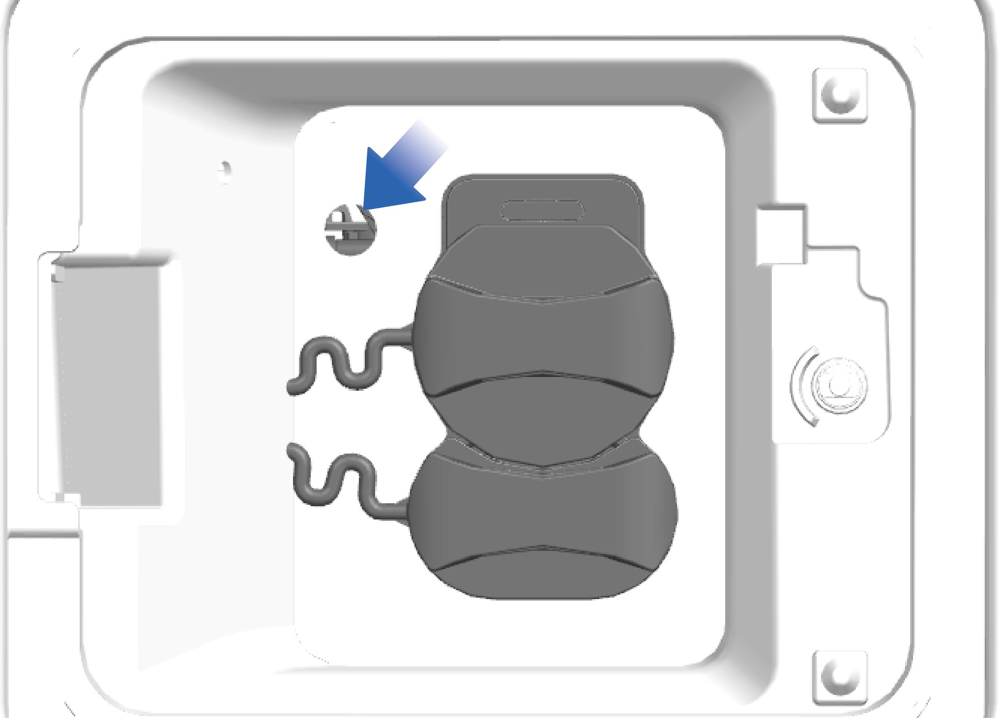
Wenn die Ladepistole nach Abschluss des Ladevorgangs nicht herausgezogen werden kann, kann der Notentriegelungsmechanismus neben dem Ladeanschluss zur Entriegelung verwendet werden. Drücken Sie den Entriegelungsmechanismus mit einem Werkzeug in Richtung Fahrzeuginneres, sodass er von einer zur Fahrtrichtung parallelen in eine dazu senkrechte Position wechselt. Lage des Notentriegelungsmechanismus am Ladeanschluss.
4A.4
Sicherheitshinweise
Warnung
Bestätigen Sie vor dem Laden, dass die Ausgangsspannungsplattform des Ladegeräts und die Niederspannungshilfsversorgung mit dem Fahrzeug kompatibel sind und der Ladestecker den gesetzlichen Anforderungen entspricht.
Es ist verboten, brennbare und explosive Materialien in der Nähe der Ladesäule zu stapeln. Die Umgebung des Ladegeräts muss gut belüftet sein.
Berühren Sie während des Ladevorgangs nicht den Ladestecker und den Fahrzeugladeanschluss, um einen elektrischen Schlag zu vermeiden.
Wenn eine Fehlfunktion des Geräts festgestellt wird, z. B. Rauchentwicklung, Geruchsemission, ungewöhnliche Geräusche usw., beenden Sie den Ladevorgang sofort und wenden Sie sich an einen Fachmann.
Entsperren Sie das Fahrzeug, bevor Sie den Ladestecker einstecken/herausziehen, ohne dabei zu kippen, zu schütteln oder aggressiv vorzugehen.
Stecker ohne Schräglage, Wackeln oder grobe Handhabung ein- und ausstecken.
Das elektronische Schloss des Ladeanschlusses wird beim Start des Ladevorgangs aktiviert und gesichert, daher ist es verboten, den Ladestecker gewaltsam zu entfernen. Nach Abschluss des Ladevorgangs entsperren Sie das Fahrzeug und beenden Sie den Ladevorgang im Fahrzeuginformationsbildschirm, um das elektronische Schloss des Ladeanschlusses zu entriegeln.
Betätigen Sie den elektronischen Entriegelungsbolzen des Schlosses nicht während des normalen Ladevorgangs.
AchtungEine Tiefentladung der Hochvoltbatterie sollte so weit wie möglich vermieden werden, um die sichere Lebensdauer der Hochvoltbatterie zu gewährleisten. Wenn der SOC der Hochvoltbatterie unter 20 % sinkt, zeigt das Kombiinstrument eine Warnmeldung an, dass der SOC der Hochvoltbatterie zu niedrig ist. Wenn der SOC der Hochvoltbatterie unter 5 % sinkt, wechselt das Fahrzeug in den Leistungsbegrenzungsmodus, und die Fahrzeuggeschwindigkeit nimmt mit zunehmender Entladetiefe (DoD) der Hochvoltbatterie ab. Suchen Sie in diesem Fall so schnell wie möglich ein Ladegerät in der Nähe, um das Fahrzeug zu laden.
Die Hochvoltbatterie sollte bei einer Temperatur von 10 °C – 30 °C betrieben werden. Bei zu hohen oder zu niedrigen Umgebungstemperaturen wird die Lebensdauer der Hochvoltbatterie verkürzt.
Wenn das Fahrzeug längere Zeit nicht genutzt wird, sollte der Hauptschalter ausgeschaltet und die Hochvoltbatterie einmal alle zwei Wochen geladen werden.
Wenn sich das Fahrzeug im Unterspannungsschutzmodus befindet, laden Sie es rechtzeitig vor der Nutzung auf. Andernfalls kann es zu einer Tiefentladung der Hochvoltbatterie kommen, die die Leistung und Lebensdauer der Hochvoltbatterie beeinträchtigt.
Hinweis
Das Fahrzeug kann nicht geladen werden, wenn das elektronische Schloss des Ladeanschlusses nicht aktiviert ist. Dies kann durch leichtes Drehen des Ladesteckers überprüft werden.
4CFahrtvorbereitung
Vorbereitung vor der Fahrt
Überprüfen Sie das Fahrzeug vor der Nutzung auf Sicherheit:
Verbindungen und Befestigungen aller Teile prüfen.
Prüfen, ob Motor und E-Achse im Betrieb ungewöhnliche Geräusche erzeugen.
Montage der Zubehörteile prüfen.
Ölstand in E-Achse und Lenkölbehälter prüfen.
Flüssigkeitsstand im Scheibenwaschwasserbehälter und Kühlmittelbehälter prüfen.
Ölzustand an allen Schmierstellen prüfen.
Prüfen, ob Bremssystem und Lenksystem ordnungsgemäß funktionieren.
Prüfen, ob elektrische Einrichtungen und Leitungen ordnungsgemäß verbunden sind.
Reifendruck prüfen.
Prüfen, ob Fahrerwerkzeug und Fahrzeugdokumente vollständig sind.
4DFahrersitz
↑ Nach obenVorbereitung vor der Fahrt
Sie können die Funktionen des Fahrersitzes nach Ihren persönlichen Bedürfnissen und Vorlieben anpassen, um ein komfortableres Fahrerlebnis zu ermöglichen.
4D.1Bedienungshinweise

Längsverstellhebel des Fahrersitzkissens
Heben und halten Sie den Hebel, schieben Sie das Sitzkissen selbst nach vorne oder hinten und lassen Sie den Entriegelungshebel in der gewünschten Position los, um das Sitzkissen zu arretieren.
Armlehnenknopf des Fahrersitzes
Drehen Sie den Armlehnenknopf, um die Armlehne zu verstellen. Beim Drehen nach links wird die Armlehne abgesenkt; beim Drehen nach rechts wird die Armlehne angehoben.
Fahrersitzgurt
Sie können den Sicherheitsgurt direkt herausziehen und anlegen.
Lehnenneigungsverstellgriff des Fahrersitzes
Heben Sie den Lehnenneigungsverstellgriff an, um die Rückenlehne zu entriegeln. Lehnen Sie sich sanft gegen die Rückenlehne oder bewegen Sie sich langsam davon weg, um die Rückenlehne auf den gewünschten Winkel einzustellen. Lassen Sie den Griff los und die Rückenlehne rastet automatisch ein.

Drehverstellgriff des Fahrersitzes
Betätigen Sie den Drehverstellgriff des Fahrersitzes, und der Sitz kann sich 90° zur Fahrzeugtür drehen.
Längsverstellschalter des Fahrersitzes
Betätigen Sie den Schalter nach vorne oder hinten, um die Längsposition des Sitzes einzustellen.

Schnellablass-Taste des Fahrersitzes Drücken Sie den unteren Teil der Schnellablass-Taste, um den Sitz schnell abzusenken; drücken Sie den oberen Teil, um den Sitz schnell aufzupumpen und in die normale Nutzungsposition zu bringen.
Neigungsverstellgriff des Fahrersitzes
Betätigen Sie den Neigungsgriff nach oben oder unten, um den vertikalen Neigungswinkel des Sitzkissens zu ändern. Lassen Sie den Griff in einer komfortablen Position los, um das Sitzkissen zu arretieren.
Dämpfungsverstellgriff des Fahrersitzes
Betätigen Sie den Dämpfungsgriff nach oben oder unten, um die Härte des Sitzes einzustellen.
Höhenverstellgriff des Fahrersitzes
Betätigen Sie den Höhenverstellgriff nach oben, um den Sitz anzuheben; nach unten, um den Sitz abzusenken.
Sitzheizungsknopf des Fahrersitzes
Drehen Sie den Sitzheizungsknopf, um die Heizfunktion ein- oder auszuschalten. Der Knopf ist auf drei Heizstufen einstellbar: Hoch, Mittel und Niedrig.
Sitzmassageknopf des Fahrersitzes
Drehen Sie den Sitzmassageknopf, um die Massagefunktion ein- oder auszuschalten. Der Knopf ist auf drei Massagestufen einstellbar: Stufe 1: Regionalmassage von unten nach oben
Stufe 2: Untere Regionalmassage Stufe 3: Obere Regionalmassage
Lordosenstützungsverstelltasten des Fahrersitzes
Drücken Sie den oberen Teil der Taste, um die Lordosenstützung anzuheben; drücken Sie den unteren Teil, um sie abzusenken.
Sitzlüftungsknopf des Fahrersitzes
↑ Nach obenDrehen Sie den Sitzlüftungsknopf, um die Lüftungsfunktion ein- oder auszuschalten. Der Knopf ist auf drei Luftmengenstufen einstellbar: Hoch, Mittel und Niedrig.
4D.2Sicherheitshinweise
Warnung
Verstellen Sie den Sitz nicht während der Fahrt, da dies zu einem Kontrollverlust über das Fahrzeug und damit zu Unfällen führen kann.
Neigen Sie die Sitzlehne nicht übermäßig, da der Sicherheitsgurt sonst keinen ausreichenden Schutz bietet. Bei einem Unfall oder einer Notbremsung könnte die Person, die den Sicherheitsgurt einer übermäßig geneigten Sitzlehne trägt, unter den Sicherheitsgurt rutschen und verletzt werden.
Der Sitz muss korrekt eingestellt sein, um ein ordnungsgemäßes Betätigen des Bremspedals zu gewährleisten.
Rütteln Sie den Fahrersitz vor der Fahrt vor und zurück, um sicherzustellen, dass er eingerastet ist. Andernfalls können bei einem Unfall oder einer Notbremsung Verletzungen auftreten.
Vergewissern Sie sich vor dem Verschieben des Sitzes, dass der Sitzbewegungsbereich frei ist, um Beschädigungen von Gegenständen oder Einklemmen von Insassen zu vermeiden.
Achtung
Stellen Sie sicher, dass keine Gegenstände im Sitzbereich der Fahrerkabine eingeklemmt sind. Andernfalls kann der Sitz beschädigt werden.
4EBeifahrersitz
↑ Nach obenVorbereitung vor der Fahrt
Der Beifahrersitz befindet sich auf der rechten Seite der Schlafkabine im Fahrzeug. Sie können die Kopfstütze der Schlafkabine aufdecken und die Rückenlehne des Beifahrersitzes in die aufrechte Position bringen, um auf dem Beifahrersitz Platz zu nehmen.
4D.3Bedienungshinweise

↑ Nach obenUm die Kopfstütze des Beifahrersitzes zu verwenden, heben Sie sie an und bringen Sie sie in die höchste Position. Wenn Sie die Beifahrersitzkopfstütze nicht benötigen, drücken Sie die Kopfstütze nach unten. Die Kopfstütze ist nur in der höchsten Position einsetzbar.
Um den Beifahrersitz wegzuklappen, ziehen Sie den Entriegelungsgurt hinter der Sitzlehne, um die Sitzlehne zu entriegeln, und klappen Sie die Rückenlehne dann um.
4D.4Sicherheitshinweise
Achtung
Wenn beim Hochziehen der Beifahrersitzkopfstütze das Gefühl entsteht, dass sie sich nicht mehr bewegen lässt, hören Sie auf, die Kopfstütze mit Gewalt anzuheben, um den Kopfstützenmechanismus nicht zu beschädigen.
Stellen Sie beim Umlegen der Beifahrersitzlehne sicher, dass sich keine Gegenstände auf dem Sitz befinden, um Schäden am Beifahrersitzmechanismus beim Umklappen der Rückenlehne zu vermeiden.
↑ Nach obenHinweis
4FNFC-Karte
↑ Nach obenVorbereitung vor der Fahrt
Das Fahrzeug ist mit einer NFC-Karte ausgestattet, mit der Sie das Fahrzeug ver- und entriegeln sowie ein- und ausschalten können.
4F.1Bedienungshinweise

↑ Nach obenHalten Sie die NFC-Karte an die Mitte der flachen Türgriffoberfläche; die Türgriffleuchte leuchtet auf, und die Fahrzeugblinker blinken einmal gleichzeitig, was eine erfolgreiche Entriegelung anzeigt. Halten Sie die NFC-Karte erneut an die Oberfläche des
flachen Türgriffs; die Türgriffleuchte erlischt, und die Fahrzeugblinker blinken zweimal gleichzeitig, was eine erfolgreiche Verriegelung anzeigt.
Nach dem Entriegeln des Fahrzeugs können Sie die NFC-Karte an der dafür vorgesehenen Lesestelle des rechten Armaturenbretts halten, um das Fahrzeug einzuschalten.
Zum Ausschalten des Fahrzeugs können Sie entweder auf dem Fahrzeuginformationsbildschirm auf „Ausschalten" klicken oder die NFC-Karte an der dafür vorgesehenen Lesestelle des rechten Armaturenbretts halten.
4F.2Sicherheitshinweise
Achtung
Die NFC-Karte nicht biegen, verdrehen oder zerschneiden.
Bewahren Sie die NFC-Karte nicht an Orten mit hoher Temperatur, Feuchtigkeit oder starken Vibrationen auf.
Legen Sie die NFC-Karte nicht auf ein drahtloses Heimladegerät, um Beschädigungen zu vermeiden.
Legen Sie die NFC-Karte nicht in eine Handyhülle, um Beschädigungen der NFC-Karte durch Kontakt mit dem drahtlosen Ladegerät zu vermeiden.
Lassen Sie die NFC-Karte nicht im Fahrzeug liegen, um Verformungen und Fehlfunktionen der NFC-Karte zu vermeiden.
Verwenden Sie die NFC-Karte nicht zusammen mit Karten des gleichen Typs (Bankkarte, Fahrtkarte, Ausweis oder Zugangskarte usw.) (übereinanderlegen, gleichzeitig lesen usw.).
Hinweis
Beim Ver-/Entriegeln des Fahrzeugs mit der NFC-Karte sollte das Fahrzeug stehen, und die NFC-Karte sollte an die Oberfläche des flachen Türgriffs gehalten werden.
Nach dem Lesen der NFC-Karte sollte die NFC-Karte rechtzeitig von der vorgesehenen Lesestelle entfernt werden, um eine wiederholte Auslösung des Lesevorgangs zu verhindern.
Wenn die Oberfläche des flachen Türgriffs durch Schmutz oder Frost verunreinigt ist, kann die Erkennungswirkung der NFC-Karte beeinträchtigt werden, was zu einem Versagen beim Ver-/Entriegeln des Fahrzeugs führen kann.
Wenn eine NFC-Karte verloren gegangen ist oder zusätzliche Karten benötigt werden, wenden Sie sich an den Windrose-Kundenservice.
4GMechanischer Schlüssel
↑ Nach obenVorbereitung vor der Fahrt
Wenn das Fahrzeug unter bestimmten besonderen Umständen weder mit dem digitalen Schlüssel noch mit der NFC-Karte entriegelt werden kann, können Sie den mechanischen Schlüssel zur Notentriegelung verwenden.

Wenn Sie die Vorderseite des flachen Türgriffs drücken, kippt die Rückseite des flachen Türgriffs hoch. In diesem Moment können Sie den gesamten flachen Türgriff des Fahrzeugs herausziehen und mit den Fingern festhalten.
2. Stecken Sie den mechanischen Schlüssel in das Türschlüsselloch unterhalb des flachen Türgriffs und drehen Sie den mechanischen Schlüssel nach rechts, um das Fahrzeug zu entriegeln.
Achtung
- Halten Sie den flachen Türgriff beim Herausziehen in der Waagerechten, um Kollisionen zwischen der Vorderseite des flachen Türgriffs und der Tür zu vermeiden, die den Fahrzeuglack beschädigen könnten.
Bewahren Sie den mechanischen Schlüssel sorgfältig auf, um einen Verlust zu vermeiden, der im Notfall zu einem Versagen beim Entriegeln des Fahrzeugs führen könnte.
4HLenkradeinstellung
↑ Nach obenVorbereitung vor der Fahrt
Das Lenkrad kann nach vorne, hinten, oben und unten verstellt werden, um Ihren Fahrbedürfnissen gerecht zu werden.

Verstellen Sie das Lenkrad niemals während der Fahrt, um Unfälle zu vermeiden.
Vergewissern Sie sich nach dem Einstellen der Lenkradposition, dass das Lenkrad arretiert ist. Andernfalls können Personen- oder Todesschäden sowie Sachschäden entstehen.
4ITasten am Lenkrad
Vorbereitung vor der Fahrt
Ziehen Sie den Lenkradverstellhebel nach oben, um das Lenkrad zu entriegeln.
Stellen Sie die Lenkradhöhe und den Abstand zu Ihrem Körper manuell nach Bedarf ein.
Drücken Sie nach Abschluss der Einstellung den Lenkradverstellhebel nach unten, um das Lenkrad zu arretieren.
4I.1Funktionsbeschreibung
↑ Nach obenDas Fahrzeug ist mit einem Multifunktionslenkrad ausgestattet, mit dem Sie bestimmte Fahrzeugfunktionen bequem steuern können.
4I.2Bedienungshinweise

Bestätigungs-, Abstands- und Geschwindigkeitseinstelltaste
Drehen Sie das Scrollrad nach links, um den Folgeabstand im Tempomaten-Modus zu verringern; drehen Sie es nach rechts, um den Folgeabstand im Tempomaten-Modus zu erhöhen.
Drehen Sie das Scrollrad nach oben, um die Fahrzeuggeschwindigkeit im Tempomaten-Modus zu erhöhen; drehen Sie es nach unten, um die Fahrzeuggeschwindigkeit im Tempomaten-Modus zu verringern.
Drücken Sie die Mitte des Scrollrads, um das ausgewählte Ziel zu bestätigen.
Aktivierung der adaptiven Geschwindigkeitsregelung (ACC)
Einmal drücken, um die ACC-Funktion zu aktivieren; erneut drücken, um die ACC-Funktion auszuschalten.
Aktivierung der Spurmittenführung (LCC)*
Einmal drücken, um die LCC-Funktion zu aktivieren; erneut drücken, um die LCC-Funktion auszuschalten.
Schaufel für kinetische Rekuperationsbremsung (links)
Drehen Sie das linke Paddel des kinetischen Rekuperationsbremsystems (KERS), um die kinetische Rekuperationsbremsintensität des Fahrzeugs zu verringern.
Bluetooth-Telefon
Einmal drücken, um einen Bluetooth-Anruf entgegenzunehmen.
Gedrückt halten, um das Gespräch zu beenden oder einen Anruf zu tätigen.
Kinetisches Rekuperationsbremspaddel (rechts)
Drehen Sie das rechte Paddel des kinetischen Rekuperationsbremsystems (KERS), um die kinetische Rekuperationsbremsintensität des Fahrzeugs zu erhöhen.
MODE-Funktion
Drücken Sie diese Taste, um zwischen Radio, Musik und Video zu wechseln.
Zurück
Drücken Sie diese Taste, um zur vorherigen Ansicht des zuletzt verwendeten Fahrzeuginformationsbildschirms zurückzukehren. Um zu einem
anderen Fahrzeuginformationsbildschirm zu wechseln, tippen Sie manuell auf den entsprechenden Fahrzeuginformationsbildschirm.
Multimedia-Steuerung
Drehen Sie das Scrollrad nach links, um die ausgewählte Multimediafunktion zur vorherigen Funktion zurückzukehren; drehen Sie das Scrollrad nach rechts, um die ausgewählte Multimediafunktion zur nächsten Funktion zu wechseln.
Drehen Sie das Scrollrad nach oben, um die Lautstärke der ausgewählten Multimediafunktion zu erhöhen; drehen Sie das Scrollrad nach unten, um die Lautstärke der ausgewählten Multimediafunktion zu verringern.
Drücken Sie die Mitte des Scrollrads, um das ausgewählte Ziel in der entsprechenden Medienliste zu bestätigen.
Stummschalten
Einmal drücken, um den Stummschaltmodus einzuschalten; erneut drücken, um den Ton wiederherzustellen.
Hupe
↑ ObenDrücken Sie die Mitte des Lenkrads, um die Hupe zu betätigen.
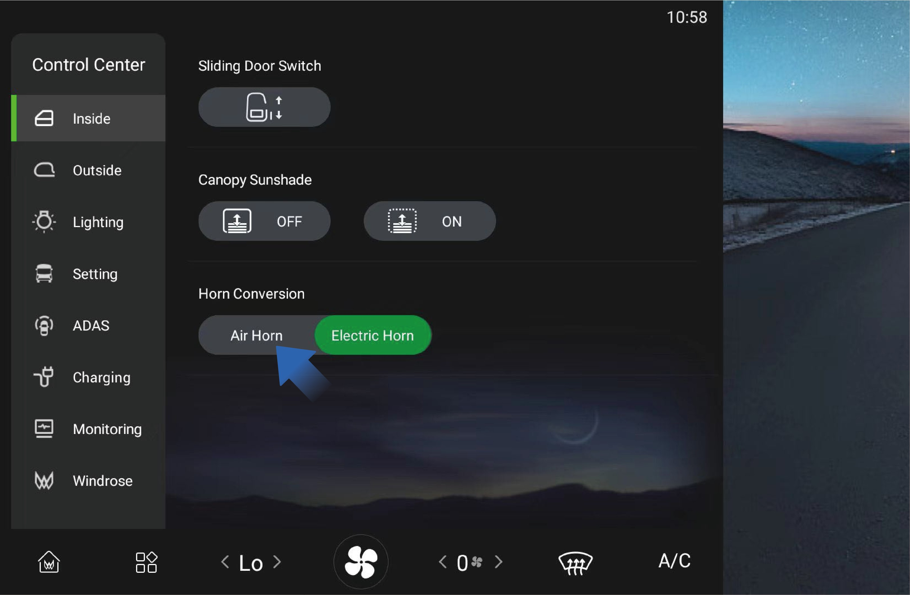
Sie können im „Steuerungszentrum"-Interface des Fahrzeuginformationsbildschirms auf „Innen" klicken, um den Hupentyp des Fahrzeugs auszuwählen.
4I.3Sicherheitshinweise
↑ ObenAnmerkungLegen Sie Ihre Finger in eine geeignete Position, um zu vermeiden, dass die Taste unzugänglich oder schwer zu bedienen ist.
5AÜbersicht des Kombiinstruments
Vorbereitung vor dem Fahren

Trip 5. Fahrmodus 9. Aktueller Fahrzeuggang 13.Momentaner Stromverbrauch pro 100 km
Geschätzte Reichweite 6. Hochvoltspeicher-Kapazität 10. Energierückgewinnungsstufen
Wegstreckenzähler (Gesamtstrecke) 7. Aktuelle Geschwindigkeit 11. Anteil der momentanen
Antriebsleistung
Außentemperatur 8. Fahrzeug betriebsbereit 12.Durchschnittlicher Stromverbrauch
pro 100 km
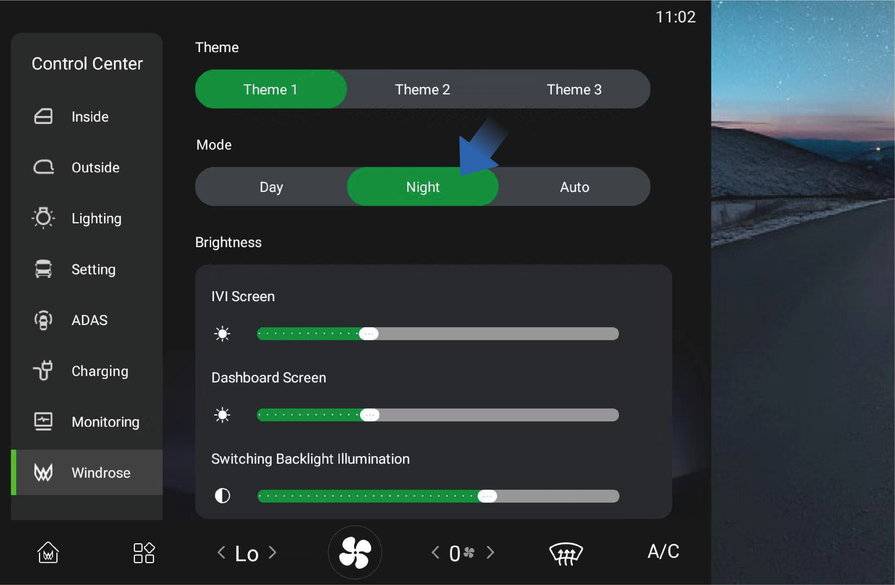
Sie können im „Steuerungszentrum"-Interface des Fahrzeuginformationsbildschirms „Windrose" auswählen, um den Tag-, Nacht- oder Automatikmodus zu wählen.
Tagmodus: Die Grundfarbe des Kombiinstruments ist weiß;
Nachtmodus: Die Grundfarbe des Kombiinstruments ist schwarz;
Automatikmodus: Das System passt sich automatisch zwischen Tag- und Nachtmodus an, basierend auf dem Außenlicht.
↑ ObenHinweisDie Abbildungen auf der Kombiinstrument-Oberfläche sind ausschließlich schematische Darstellungen zur Orientierung. Bitte beziehen Sie sich auf das tatsächliche Fahrzeug.
5BKontrollleuchten und Warnleuchten
Vorbereitung vor dem Fahren
|
|
|
|---|---|---|
|
|
|
|
|
|
|
|
|
|
|
|
|
|
|
|
|
|
|
|
|
|
|
|
|
|


|
|
|
|---|---|---|
|
|
|
|
|
|
|
|
|
|
|
|
|
|
|
|
|
|
|
|
|
|
|
|
|
|
|
|
|


|
|
|
|---|---|---|
|
|
|
|
|
|
|
|
|
|
|
|
|
|
|
|
|
|
|
|
|
|
|
|
|
|
|
|
|


|
|
|
|---|---|---|
|
|
|
|
|
|
|
|
|
|
|
|
|
|
|
|
|
|
|
|
|
|
|
|
|
|
|
|
|


|
|
|
|---|---|---|
|
|
|
|
|
|
|
|
|
|
|
|
|
|
|
|
|
|
|
|
|
|
|
|
|
|
|
|
|


|
|
|
|---|---|---|
|
|
|
|
|
|
|
|
|
|
|
|
|
|
|
|
|
|
|
|
|
|
|
|
|
|
|
|
|


|
|
|
|---|---|---|
|
|
|
|
|
|
|
|
|
|
|
|
|
|
|
|
|
|
|
|
|
|
|
|
|
|
|
|
|


|
|
|
|---|---|---|
|
|
|
|
|
|
|
|
|
|
|
|
|
|
|
|
|
|
|
/ | |
|
/ | |
|
/ | |
|
/ |


|
|
|
|---|---|---|
|
/ | |
|
/ |


Wenn das Fahrzeug eingeschaltet wird, leuchten einige Warnleuchten zur Selbstprüfung auf und erlöschen nach einigen Sekunden. Wenn eine Warnleuchte dauerhaft leuchtet oder während der Fahrt aufgrund einer Störung aufleuchtet, sollten Sie dieser Erscheinung Bedeutung beimessen und so schnell wie möglich eine autorisierte Windrose-Servicestelle aufsuchen, um Unfälle mit Personen- oder Sachschäden zu vermeiden.
Wenn eine Warnleuchte nach dem Einschalten des Fahrzeugs dauerhaft leuchtet oder während der Fahrt aufleuchtet, kann dies auf eine schwerwiegende Störung des Fahrzeugs hinweisen. Wenden Sie sich in diesem Fall sofort an eine autorisierte Windrose-Servicestelle.
↑ Nach obenDie schwarzen Symbole in der Tabelle wechseln je nach Hintergrund der Kombiinstrumentanzeige zwischen Schwarz und Weiß.
6AScheibenwischer-Steuerung
↑ Nach obenVorbereitung vor der Fahrt
Wenn Sie die Scheibenwasch-Taste loslassen, hört das Wassersprühen sofort auf, und der Wischer führt nach drei Wischvorgängen eine Rückstellung durch. Wenn Sie die Scheibenwasch-Taste drücken und loslassen, sprüht der Wascher kein Wasser, und der
Sie steuern die Scheibenwischer-Funktionen des Fahrzeugs über den
Kombischalter-Hebel auf der linken Seite des Lenkrads.
6A.1Bedienungshinweise

Scheibenreinigung: Halten Sie die Scheibenwasch-Taste gedrückt, um den Waschmodus zu aktivieren. In diesem Modus sprüht der Wascher kontinuierlich Wasser, und der Wischer wischt fortlaufend.
Wischer wird nach einem Wischvorgang zurückgestellt.
Niedriger Dauerwischbetrieb: Bringen Sie das Wischerblatt in diese Position, und der Wischer wechselt in den niedrigen Dauerwischbetrieb.
Hoher Dauerwischbetrieb: Bringen Sie das Wischerblatt in diese Position, und der Wischer wechselt in den hohen Dauerwischbetrieb.
Automatischer Wischbetrieb: Bringen Sie das Wischerblatt in diese Position, und der Wischer wechselt in den automatischen Wischbetrieb.
Wischer AUS: Bringen Sie das Wischerblatt in diese Position, und der Wischer ist ausgeschaltet.
Intervall-Wischbetrieb: Bringen Sie das Wischerblatt in diese Position, und der Wischer wechselt in den Intervall-Wischbetrieb. In diesem Modus können Sie die Intervall-Wischfrequenz des Wischers im Fahrzeuginformationsbildschirm einstellen.
↑ Nach oben

Sie können im Fahrzeuginformationsbildschirm auf „Außen" in der Oberfläche „Control Center" klicken und das Wisch-Intervall nach Ihren Bedürfnissen auswählen.
Wenn das Wischerblatt in die Position für automatischen Wischbetrieb gebracht wird, können Sie in dieser Oberfläche auch die Regenempfindlichkeit auswählen. Das System passt die Frequenz des automatischen Wischbetriebs entsprechend der von Ihnen gewählten Empfindlichkeit an.

6A.2Sicherheitshinweise
WarnungWenn im Winter die Scheibenwaschflüssigkeit auf der Windschutzscheibe gefriert, betätigen Sie die Wischer nicht, da dies die Sicht beeinträchtigen und zu Verkehrsunfällen oder Verletzungen führen kann.
Achtung
Entfernen Sie vor der Verwendung der Wischer im Winter unbedingt Eis und Schnee von der Windschutzscheibe, um sicherzustellen, dass die Wischerblätter nicht in fester Position eingefroren sind.
6BLichtschalter
↑ Nach oben
Vorbereitung vor der Fahrt
Verlassen Sie sich nicht ausschließlich auf die automatischen Wischer. Passen Sie das Wischen stets manuell an die tatsächliche Situation an.
Hinweis
Wenn sich Fremdkörper wie Staub, Vogelkot, Insekten oder Baumharz auf der Windschutzscheibe befinden, reinigen Sie die Windschutzscheibe zuerst. Andernfalls können die Wischerblätter beschädigt werden.
Die Wischer sollten zur Reinigung der Windschutzscheibe mit Scheibenwaschflüssigkeit verwendet werden. Andernfalls können sowohl der Wischer als auch die Windschutzscheibe beschädigt werden.
Überprüfen Sie die Wischerblätter regelmäßig. Wenn die vorgeschriebene Wartung nicht ordnungsgemäß durchgeführt wird, wird die Lebensdauer der Wischerblätter verkürzt.
Verwenden Sie ausschließlich zugelassenes Reinigungsmittel, da nicht konforme Reinigungsmittel den Wascher beschädigen oder das Glas korrodieren können.
Nachdem Sie die automatischen Scheinwerfer oder den Lichtschalter im
Fahrzeuginformationsbildschirm eingeschaltet haben, können Sie über den Lichtschalthebel auf der linken Seite des Lenkrads zwischen Abblend- und Fernlicht umschalten. Der sachgemäße Einsatz der Außenbeleuchtung kann die Fahrsicherheit eines Fahrzeugs wirksam verbessern.
6A.3 Bedienungshinweise
Bedienungshinweise
Klicken Sie im Fahrzeuginformationsbildschirm auf das Symbol „Beleuchtung" in der Oberfläche „Control Center", um die Fahrzeuglichtsteuerungsoberfläche aufzurufen. Dort können Sie auf das Symbol für Positionsleuchte (Begrenzungsleuchte), Abblendlicht oder AUTO klicken, um die Außenbeleuchtung des Fahrzeugs zu aktivieren.
Sobald die Außenbeleuchtung aktiviert ist, können Sie über den Lichtschalthebel auf der linken Seite des Lenkrads zwischen Abblend- und Fernlicht umschalten.
Lichtschalthebel nach vorne schieben, um das Fernlicht einzuschalten.
Lichtschalthebel nach hinten schieben, um das Fernlicht auszuschalten.
Wenn das Fernlicht nicht eingeschaltet ist, den Lichtschalthebel nach hinten schieben und loslassen. Der Lichtschalthebel stellt sich automatisch zurück und die Lichthupe blinkt einmal.
Lichtschalthebel nach unten schieben, um den linken Fahrtrichtungsanzeiger einzuschalten.
Lichtschalthebel nach oben schieben, um den rechten Fahrtrichtungsanzeiger einzuschalten.
Tagfahrlicht
Nach dem Starten des Fahrzeugs wird das Tagfahrlicht automatisch eingeschaltet, wenn das Abblendlicht ausgeschaltet ist. Wenn das Abblendlicht eingeschaltet wird, schaltet sich das Tagfahrlicht automatisch aus.
Seitenmarkierungsleuchten-Kombination

Seitenmarkierungsleuchten-Kombinationen sind auf beiden Seiten des Fahrzeugs angeordnet und werden automatisch eingeschaltet, wenn in der Lichtsteuerungsoberfläche des Fahrzeugs „AUTO", „Abblendlicht" oder „Positionsleuchte" aktiviert wird.
Hintere Arbeitsleuchte
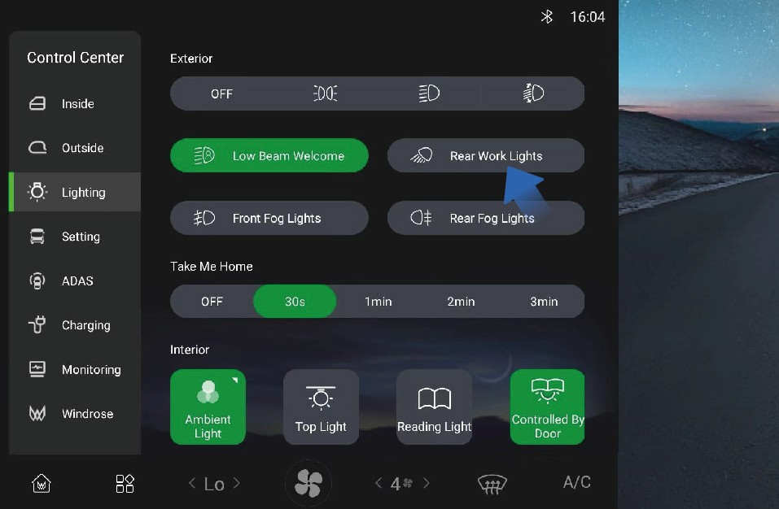
↑ Nach obenWenn die hintere Arbeitsleuchte des Fahrzeugs in einer bestimmten Situation eingeschaltet werden muss, können Sie in der Oberfläche „Beleuchtung" auf den Schalter „Hintere Arbeitsleuchten" klicken.
6A.4Sicherheitshinweise
↑ Nach obenHinweisBeim Betätigen der Fahrtrichtungsanzeiger ist es nicht erforderlich, die Außenbeleuchtung im Fahrzeuginformationsbildschirm vorab zu aktivieren.
6CWarnblinkschalter
Vorbereitung vor der Fahrt
↑ Nach obenSchalten Sie im Falle einer Notlage während der Fahrt sofort die Warnblinkanlage ein, um das nachfolgende Fahrzeug zu warnen und Unfälle zu vermeiden.
6C.1 Bedienungshinweise
Bedienungshinweise
↑ Nach obenWenn Sie den Warnblinkschalter auf der rechten Seite des Armaturenbretts im Fahrzeug drücken und die Anzeige am Schalter blinkt, ist die Warnblinkanlage aktiviert.
6C.2Sicherheitshinweise
↑ Nach obenWarnungDer Warnblinkschalter wird in Situationen verwendet, in denen das Fahrzeug Verkehrsunfälle verursachen könnte oder in anderen Sondersituationen, um den fließenden Verkehr zu warnen und Unfälle zu vermeiden.
6DEin-/Ausschalten
↑ Nach obenFahren
Nach dem Entriegeln des Fahrzeugs öffnen Sie die Tür und halten die NFC-Karte an die dafür vorgesehene Lesestelle des rechten Armaturenbretts, um das Fahrzeug einzuschalten. Das Kombiinstrument und die Mittelanzeige leuchten auf.
Wenn Sie sich im Fahrzeug befinden, können Sie das Fahrzeug
über die NFC-Karte ein- oder ausschalten. Bedienungshinweise Einschalten
Ausschalten
Stellen Sie vor dem Ausschalten des Fahrzeugs sicher, dass das Fahrzeug sicher und stabil geparkt ist. Sichern Sie beim Parken an einer Rampe oder an besonderen Orten die Räder mit den mitgelieferten Unterlegkeilen, um ein Wegrollen zu verhindern.
Wenn die obigen Bedingungen erfüllt sind, können Sie das Fahrzeug wie folgt ausschalten.
Methode 1:
Halten Sie bei aktivierter EPB die NFC-Karte an die dafür vorgesehene Lesestelle des rechten Armaturenbretts, um das Fahrzeug auszuschalten.
Methode 2:
6D.1 Sicherheitshinweise
Sicherheitshinweise
↑ Nach obenHinweisBeim Ausschalten des Fahrzeugs ist ein Geräusch zu hören, das ein normales Phänomen ist und durch die Selbstprüfung des Bremssystems verursacht wird.
6EBetriebsbremse
↑ Nach obenFahren
Bei aktivierter EPB können Sie das Fahrzeug ausschalten, indem Sie im Fahrzeuginformationsbildschirm „Control Center" auswählen, zur Oberfläche „Einstellungen" wechseln und im rechten IVI-Bildschirm auf die Schaltfläche „Ausschalten" klicken.
Nach dem Ausschalten des Fahrzeugs von innen kann der elektrische Schalter der elektrischen Schiebetür im Fahrzeuginnenraum oder -außenbereich weiterhin zum Öffnen oder Schließen der elektrischen Schiebetür verwendet werden. Wenn die elektrische Schiebetür von außen verriegelt ist, wurde das Fahrzeug erfolgreich ausgeschaltet.
Um das Fahrzeug während der Fahrt zu verlangsamen oder anzuhalten, können Sie das Bremspedal betätigen, um die Fahrzeuggeschwindigkeit zu reduzieren oder das Fahrzeug vollständig zum Stehen zu bringen.
6E.1Bedienungshinweise
Um das Fahrzeug bei der Betriebsbremsung sanft zum Halten zu bringen, wird empfohlen, das Bremspedal in drei Situationen wie folgt zu betätigen:
Verzögerung: Wenn es bei hoher Geschwindigkeit notwendig ist, zu verlangsamen, lassen Sie zunächst das Gaspedal vollständig los, um die Fahrzeuggeschwindigkeit durch den Antriebsmotor zu reduzieren. Wenn die
Verzögerung nicht wie erwartet ausfällt, das Bremspedal entsprechend betätigen;
Anhalten: Das Bremspedal schrittweise betätigen, um die Fahrzeuggeschwindigkeit zu reduzieren, beim Erreichen der Parkposition das Bremspedal vollständig durchtreten, in den Leerlauf (N) schalten und die EPB einschalten, um das Fahrzeug auszuschalten und den Parkvorgang abzuschließen.
Notbremsung: Im Notfall das Bremspedal mit großer Kraft schnell durchtreten, um das Fahrzeug sofort anzuhalten.
6E.2Sicherheitshinweise
Warnung
Bremsen Sie vor einer Kurve rechtzeitig ab, um die Fahrzeuggeschwindigkeit auf die sichere Geschwindigkeit zu reduzieren, und fahren Sie beim Bremsen in der Kurve vorsichtig, um ein Schleudern des Fahrzeugs zu vermeiden.
Die Betriebsbremse ist nicht für längeres Bremsen geeignet (z. B. bei langen Bergabfahrten), da dies zu Sicherheitsrisiken für die Betriebsbremse führen kann. Wenn bei langen Bergabfahrten kontinuierliches Bremsen erforderlich ist, aktivieren Sie die Zusatzbremsung durch elektrische Rekuperationsbremsung.
Erhöhen Sie bei Regen und Schnee den Sicherheitsabstand entsprechend, um die Fahrsicherheit zu gewährleisten.
6FElektronische Parkbremse (EPB)
Fahren
↑ Nach oben
Statusanzeige EPB-Parkbremsschalter
EPB-Parkbremsschalter
6F.1Bedienungshinweise
Parkbremse lösen
Manuelles Lösen
Wenn sich das Fahrzeug im Parkbremszustand befindet und die Systemselbstprüfung sowie der Druckluftbehälterdruck normal sind, das Bremspedal betätigen und den EPB-Parkbremsschalter drücken, um die Parkbremse zu lösen. Die Parkbremsanzeigeleuchte am Kombiinstrument erlischt.
Automatisches Lösen beim Anfahren
Wenn die Fahrzeugtür geschlossen ist, sich das Fahrzeug im Parkbremszustand befindet (auf ebener Straße oder an Steigungen) und Systemselbstprüfung sowie Druckluftbehälterdruck normal sind, wird die Parkbremse beim normalen Anfahren des Fahrzeugs automatisch gelöst. Die Parkbremsanzeigeleuchte am Kombiinstrument erlischt.
HinweisDas System kann die Parkbremse beim Einlegen des Rückwärtsgangs (R) nicht automatisch lösen. Bitte lösen Sie die Parkbremse manuell, bevor Sie in den R-Gang schalten.
Niederdruckbegrenzung beim Lösen
Die Parkbremse kann nicht gelöst werden, wenn der Druckluftbehälterdruck zu niedrig ist. Die Parkbremsanzeigeleuchte am Kombiinstrument leuchtet dauerhaft, und eine entsprechende Textmeldung wird angezeigt.
Zwangsweises Lösen der Parkbremse bei Niederdruck
Wenn die Parkbremse aufgrund eines zu niedrigen Druckluftbehälterdrucks nicht gelöst werden kann, das Bremspedal betätigen und den EPB-Parkbremsschalter mehr als 5 Sekunden lang gedrückt halten, um die Parkbremse zu lösen. Die Parkbremsanzeigeleuchte am Kombiinstrument erlischt.
Kindersicherungsfunktion
Die Parkbremse kann nicht gelöst werden, wenn der EPB-Parkbremsschalter gedrückt wird, ohne vorher das Bremspedal zu betätigen. Am Kombiinstrument wird eine entsprechende Textmeldung angezeigt.
Notlösen der Parkbremse
Wenn sich das Fahrzeug im Parkbremszustand befindet und Systemselbstprüfung sowie Druckluftbehälterdruck normal sind, schalten Sie das Fahrzeug ein und drücken Sie den EPB-Parkbremsschalter innerhalb von 10 Sekunden nach dem Einschalten 5-mal schnell, um die Parkbremse zu lösen. Die Parkbremsanzeigeleuchte am Kombiinstrument erlischt.
Abschleppbetrieb
Wenn sich das Fahrzeug im Parkbremszustand befindet und Systemselbstprüfung sowie Druckluftbehälterdruck normal sind: Den EPB-Parkbremsschalter gedrückt halten; die Ausschalttaste im Fahrzeuginfotainment-Bildschirm antippen (Ausschalten nicht per Kartenzahlung vornehmen); den EPB-Parkbremsschalter nach mehr als 5 Sekunden loslassen. Nach dem Ausschalten des Fahrzeugs aktiviert das EPB-System die Parkbremse nicht und bleibt im gelösten Zustand. Die Parkbremsanzeigeleuchte am Kombiinstrument erlischt, und die Statusanzeige des EPB-Parkbremsschalters blinkt, bis das System in den Ruhezustand übergeht.
Parkbremse aktivieren
Manuelles Aktivieren
Wenn das Fahrzeug steht und sich im gelösten Parkbremszustand befindet und Systemselbstprüfung sowie Druckluftbehälterdruck normal sind, den EPB-Parkbremsschalter hochziehen, um die Parkbremse zu aktivieren. Die Parkbremsanzeigeleuchte am Kombiinstrument leuchtet auf.
Aktivierung beim Ausschalten des Fahrzeugs
Wenn das Fahrzeug steht und sich im gelösten Parkbremszustand befindet und die Systemselbstprüfung normal ist, die Ausschalttaste am rechten Fahrzeugsteuerungsbildschirm antippen (Ausschalten nicht per Kartenzahlung vornehmen), um die Parkbremse zu aktivieren. Die Parkbremsanzeigeleuchte am Kombiinstrument leuchtet auf und erlischt 10 Sekunden nach dem Ausschalten.
Notbremsung
Wenn sich das Fahrzeug im Fahrzustand befindet und das Betriebsbremssystem ausgefallen ist (bei normaler Systemselbstprüfung und normalem Druckluftbehälterdruck): Den EPB-Parkbremsschalter langsam hochziehen, um die EPB-Notbremsung zu aktivieren. Wenn die Fahrzeuggeschwindigkeit beim Hochziehen des Schalters auf den maximalen Weg unter 5 km/h liegt, aktiviert das System vollständig die Parkbremse. Der Verfahrweg des EPB-Parkbremsschalters ist proportional zur Bremskraft. Die Bremsleuchte leuchtet auf, wenn während der Fahrt eine Notbremsung aktiviert wird; die Standlicht-Leuchte leuchtet nicht auf, wenn die Notbremsung die Parkbremsfunktion nicht auslöst.
Ruhezustand und Aufwecken
Wenn sich das EPB-System im Ruhezustand befindet (die Schalterstatusanzeige ist aus), den EPB-Parkbremsschalter hochziehen, um das System aufzuwecken. Die Statusanzeige des EPB-Parkbremsschalters leuchtet auf.
Temporäre Parkfunktion
Der Schalter für die temporäre Parkfunktion befindet sich auf der rechten Seite des Armaturenbretts.

Aktivieren und Deaktivieren der temporären Parkfunktion
Wenn das Fahrzeug steht und die Systemselbstprüfung normal ist, den Schalter für die temporäre Parkfunktion drücken, um die Funktion zu aktivieren (erneut drücken, um sie zu deaktivieren).
Aktivierter Zustand: Die AUTO HOLD-Anzeigeleuchte am Kombiinstrument und die Statusanzeige des Schalters für die temporäre Parkfunktion leuchten auf. Deaktivierter Zustand: Die AUTO HOLD-Anzeigeleuchte am Kombiinstrument und die Statusanzeige des Schalters für die temporäre Parkfunktion erlöschen.
Aktivierung der temporären Parkfunktion über die Betriebsbremse
Wenn das Fahrzeug steht und Systemselbstprüfung sowie Druckluftbehälterdruck normal sind, das Bremspedal bis zu einer bestimmten Tiefe betätigen und mehr als 3 Sekunden halten, um die temporäre Parkfunktion zu aktivieren. Die AUTO HOLD-Anzeigeleuchte am Kombiinstrument und die Statusanzeige des Schalters für die temporäre Parkfunktion blinken.
Lösen der temporären Parkbremse
Wenn die Fahrzeugtür geschlossen ist, sich das Fahrzeug im temporären Parkzustand befindet (auf ebener Straße oder an Steigungen) und Systemselbstprüfung sowie Druckluftbehälterdruck normal sind, wird die temporäre Parkbremse beim normalen Anfahren des Fahrzeugs gelöst. Die AUTO HOLD-Anzeigeleuchte am Kombiinstrument und die Statusanzeige des Schalters für die temporäre Parkfunktion hören auf zu blinken und leuchten dauerhaft.
HinweisDas System kann die temporäre Parkbremse beim Einlegen des Rückwärtsgangs (R) nicht automatisch lösen. Bitte lösen Sie die temporäre Parkbremse manuell, bevor Sie in den R-Gang schalten.
Störungswarnungen
Störungswarnung beim Parken: Die Parkbremsanzeigeleuchte am Kombiinstrument und die Statusanzeige des EPB-Parkbremsschalters blinken gleichzeitig.
Störungswarnung beim Lösen der Parkbremse: Die Parkbremsanzeigeleuchte am Kombiinstrument leuchtet gelb, und die Statusanzeige des EPB-Parkbremsschalters blinkt.
6F.2Sicherheitshinweise
Warnung
Wenn der Druckluftbehälterdruck zu niedrig ist, versuchen Sie, die Parkbremse erst zu lösen, nachdem der Druck wieder normal ist.
Wählen Sie beim Parken an einer Steigung eine befestigte Fahrbahnoberfläche mit hohem Reibungskoeffizienten, um ein Wegrollen des Fahrzeugs durch losen Untergrund oder unzureichende statische Reibung zu verhindern.
Verwenden Sie beim Parken an einer Steigung Unterlegkeile; legen Sie je nach tatsächlichem Steigungsgrad zusätzliche Hilfsmittel wie Steine unter, um ein unbeabsichtigtes Wegrollen zu verhindern.
Die Parkbremse kann im Notfall vorübergehend als Betriebsbremse verwendet werden, aber ein dauerhafter Ersatz der Betriebsbremse ist verboten.
Achtung
Lösen Sie die EPB auf normalem Weg, es sei denn, dies ist nicht möglich (d. h. wenn der Druckluftbehälterdruck ausreichend ist).
Achten Sie beim zwangsweisen Lösen der Parkbremse auf die umliegenden Straßenverhältnisse, um die Sicherheit des Fahrzeugs, von Fußgängern und anderen Verkehrsteilnehmern zu gewährleisten.
6GNotbremsung – Fahren
Fahren
↑ Nach obenDie Parkbremse kann als Notbremse verwendet werden, wenn das Betriebsbremssystem des Fahrzeugs ausfällt.
6G.1 Bedienungshinweise
Bedienungshinweise
Die elektronische Parkbremse (EPB) kann bei Ausfall der Betriebsbremse als Notbremsvorrichtung eingesetzt werden. Wenn die EPB eine Notbremsung durchführt und die Fahrzeuggeschwindigkeit auf 5 km/h sinkt, aktiviert das System die Parkbremse direkt und hält den Parkzustand aufrecht. Darüber hinaus kann die Parkbremse beim Anfahren nicht automatisch gelöst werden und kann nur manuell durch Betätigung des EPB-Parkbremsschalters gelöst werden.
↑ Nach obenWenn eine Notbremsung erforderlich ist, kann durch Hochziehen des EPB-Parkbremsschalters eine Notbremsung durchgeführt werden. Je größer die
6HSchaltvorgang
↑ Nach oben
Fahren
Öffnung des Hochziehschalters, desto größer die aufgebrachte Bremskraft.
6G.2Sicherheitshinweise
Warnung
Wenn die Fahrzeuggeschwindigkeit hoch ist, sollte der Parkgriff ähnlich wie eine „Punktbremsung" betätigt werden. Ziehen Sie ihn nicht auf einmal straff oder blockieren Sie ihn vollständig, um Beschädigungen der Bremse und anderer zugehöriger Komponenten sowie den Verlust der Bremsleistung zu vermeiden.
↑ Nach obenSie können die Gänge mit dem Schalthebel auf der rechten Seite des Lenkrads wechseln.
6G.3Bedienungshinweise

Gang R (Rückwärts)
Wenn das Fahrzeug steht, das Bremspedal betätigen und den Schalthebel nach oben schieben. Das Kombiinstrument zeigt dann den Gang „R" an, was bedeutet, dass das Fahrzeug in den R-Gang eingelegt wurde.
Gang N (Leerlauf)
Wenn sich der Schalthebel im Gang „R" befindet, den Schalthebel um 1 Gang nach unten schieben und 1 Sekunde halten.
Wenn sich das Fahrzeug im EPB-Modus befindet, das Bremspedal betätigen und die EPB lösen.
Gang D (Fahren)
↑ Nach obenWenn das Fahrzeug steht, gleichzeitig das Bremspedal betätigen und den Schalthebel nach unten schieben. Das Kombiinstrument zeigt dann den Gang „D" an, was bedeutet, dass das Fahrzeug in den D-Gang eingelegt wurde.
Wenn der Schaltvorgang fehlschlägt, zeigt das Armaturenbrett den Grund für den Schaltfehler an. Die Textmeldungen umfassen: Bitte Bremse drücken zum Schalten, Bitte BEREIT vor dem Schalten, oder Bitte anhalten und schalten. Wenn der Schaltvorgang erfolgreich ist, wird keine Textmeldung angezeigt.
6G.4Sicherheitshinweise
↑ Nach obenAchtungDas Fahrzeug muss im N-Gang ausgeschaltet werden. Es ist verboten, das Fahrzeug direkt im D- oder R-Gang auszuschalten und anzuhalten.
Das Fahrzeug kann in den N-Gang eingelegt werden, wobei die „N"-Gang-Anzeige
am Kombiinstrument hervorgehoben wird, durch folgende Vorgänge:
Wenn sich der Schalthebel im Gang „D" befindet, den Schalthebel um 1
Gang nach oben schieben und 1 Sekunde halten.
6IRekuperationsbremsung
↑ Nach obenFahren
Drehen Sie die linke Schaufel des kinetischen Rekuperationsbremssystems (KERS), um die kinetische Rekuperationsbremsintensität des Fahrzeugs beim Segeln zu verringern.
2. Schaufel für kinetische Rekuperationsbremsung (rechts)
Während der Fahrt können Sie das Fahrerlebnis durch Anpassen der Rekuperationsbremsintensität verbessern, was den Bremsenergieverlustverlust reduzieren und damit den Energieverbrauch verbessern kann.
6I.1Bedienungshinweise

Schaufel für kinetische Rekuperationsbremsung (links)
↑ Nach obenDrehen Sie die rechte Schaufel des kinetischen Rekuperationsbremssystems (KERS), um die kinetische Rekuperationsbremsintensität des Fahrzeugs beim Segeln zu erhöhen.
Während der Fahrt wird die Segelenergie zurückgewonnen, wenn das Gaspedal und das Bremspedal losgelassen werden. Die Bremsenergie wird auch zurückgewonnen, wenn das Bremspedal betätigt wird. Sie können die Rekuperationsbremsintensität beim Segeln über die KERS-Schaufeln auf der linken und rechten Seite des Lenkrads einstellen.
In der unteren rechten Ecke des Kombiinstruments wird die aktuelle Rekuperationsbremsintensität angezeigt (Stufe 1, Stufe 2, Stufe 3, Stufe 4 und Stufe 5). Wenn die Rekuperationsbremsintensität auf 0 eingestellt wird, wird die Rekuperationsbremsfunktion des Fahrzeugs ausgeschaltet.

6I.2Sicherheitshinweise
Achtung
Die Rekuperationsbremsung ist kein Ersatz für das Bremsen zur Gewährleistung der Sicherheit. Betätigen Sie die Bremsen rechtzeitig entsprechend der tatsächlichen Situation.
Vermeiden Sie die Verwendung der Rekuperationsbremsfunktion bei Regen oder Schnee oder auf glatten Fahrbahnen.
↑ Nach obenHinweisWenn der Batterieladezustand des Fahrzeugs unter 95 % fällt, können Sie die Rekuperationsbremsfunktion einschalten und nutzen.
6JAR-HUD*
↑ Nach obenFahren
Das AR-HUD kann fahrzeugbezogene Informationen auf die Frontscheibe projizieren, damit Sie während der Fahrt schnell und bequem gut lesbare Informationen abrufen können, was die Fahrsicherheit verbessert.
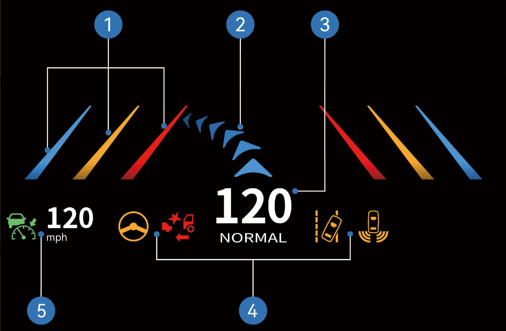
Spurverlassungslinien-Hinweis
Navigationspfeil
Fahrgeschwindigkeit + Fahrmodus
Warnsymbol Kombiinstrument
ACC-Statussymbol + Tempomat-Geschwindigkeit
6J.1Bedienungshinweise

↑ Nach obenSie können im Fahrzeuginformationsbildschirm „Control Center" auswählen, zur Oberfläche „Innen" wechseln und auf die Schaltfläche „AR-HUD" klicken, um die Oberfläche aufzurufen, in der Sie die Funktion ein-/ausschalten sowie Anzeigemodus, Helligkeit, Höhe und Anzeigeinformationen nach persönlichen Vorlieben anpassen können.
6J.2Sicherheitshinweise
Warnung
Stellen Sie vor der Fahrt sicher, dass Position und Helligkeit des AR-HUD das sichere Fahren nicht beeinträchtigen. Eine unsachgemäße Einstellung der Bildposition oder Helligkeit kann Ihr Sichtfeld beeinträchtigen und zu einem Unfall mit Personenschäden führen.
Schauen Sie während der Fahrt nicht dauerhaft auf das AR-HUD, da Sie sonst möglicherweise Fußgänger und Gegenstände auf der Straße vor dem Fahrzeug nicht wahrnehmen.
Achtung
Lassen Sie keine Flüssigkeiten in den Projektorbereich gelangen, da dies zu einem Ausfall des AR-HUD führen kann.
Bringen Sie keine Gegenstände oder Aufkleber auf dem Projektor oder dem Projektionsbereich der Windschutzscheibe an, da das AR-HUD sonst möglicherweise nicht ordnungsgemäß anzeigen kann.
Wenn der Sitz hoch eingestellt ist, befindet sich Ihr Kopf in einer hohen Position, und Sie können die Anzeige möglicherweise nicht sehen. Sie können das AR-HUD auf eine geeignete Höhe absenken.
6KDifferenzialsperre
Fahren
↑ Nach obenBeim Fahren auf schlammigen und rutschigen Straßen oder beim Bergauffahren unter schwerer Last können die Antriebsräder durchdrehen oder das Fahrzeug kann sich schwer fortbewegen. In diesem Fall können Sie die Fahrzeugdifferenzialsperre verwenden, um die Geländegängigkeit des Fahrzeugs zu verbessern.
Hinweis
Wechseln Sie beim Fahren auf verschneiten Straßen in den Schneemodus, um zu verhindern, dass das AR-HUD-Bild die Fahrsicht beeinträchtigt.
6K.1Bedienungshinweise

↑ Nach obenSie können im Fahrzeuginformationsbildschirm „Control Center" auswählen, zur Oberfläche „Einstellungen" wechseln und auf die Schaltfläche „Kegelraddifferenzial" klicken. Der Schalter wird dann hervorgehoben und die Differenzialfunktion
wird ausgeschaltet. Wenn der Schalter hervorgehoben ist, erneut auf die Schaltfläche „Kegelraddifferenzial" klicken. Der Schalter wird dann grau dargestellt und die Differenzialfunktion wird eingeschaltet.
6K.2
Sicherheitshinweise
Warnung
Die Differenzialsperre ist nur für Situationen geeignet, in denen die Räder durchdrehen oder das Fahrzeug aus einer misslichen Lage herauskommt. Fahren Sie nicht längere Zeit mit eingeschlossener Differenzialsperre.
Nach dem Einlegen der Differenzialsperre sollte das Fahrzeug keine Kurven fahren. Andernfalls werden das Differenzial und andere Teile beschädigt.
Lösen Sie die Differenzialsperre sofort, nachdem das Fahrzeug schlechte Straßen passiert hat. Bei einer Fahrzeuggeschwindigkeit ≥ 5 km/h ist die Verwendung der Differenzialsperre strengstens verboten.
6LFahrmodus
↑ Nach obenFahren
Sie können den Fahrmodus auswählen, indem Sie im Fahrzeuginformationsbildschirm des Kombiinstruments „Control Center" auswählen und zur Oberfläche „Einstellungen" wechseln, um Ihren Bedürfnissen gerecht zu werden.
ECO-Modus
Dieses Fahrzeug verfügt über drei Fahrmodi, die Ihnen die Möglichkeit geben, Ihre bevorzugte Fahrweise zu wählen. Jeder Modus bietet ein anderes Fahrerlebnis.
6L.1 Bedienungshinweise
Bedienungshinweise
Dieser Modus kann den Energiebedarf der Hochvoltbatterie effektiv reduzieren, um wirtschaftliches Fahren zu ermöglichen. Wenn der Batterieladezustand unter 10 % fällt, wechselt das Fahrzeug automatisch in den ECO-Modus.
Normalmodus
Dieser Modus bietet eine gute Balance zwischen Leistung und Wirtschaftlichkeit und kann die täglichen Bedürfnisse der meisten Fahrer erfüllen.
Leistungsmodus
↑ Nach obenDieser Modus kann die konstruktiv vorgesehene maximale Leistungsabgabe des Fahrzeugs bereitstellen und erfordert, dass der Antriebsmotor so schnell wie möglich anspricht, um optimales Ausgangsdrehmoment und starke Fahrleistung bei höherem Energieverbrauch zu erzielen.
7ARundumsicht-Monitor (AVM)
Fahrerassistenz
↑ Nach obenDer Rundumsicht-Monitor (AVM) verwendet rund um das Fahrzeug installierte Kameras zur Bilderfassung. Das AVM-Modul fügt die von den Kameras erfassten hochauflösenden Bildsignale zusammen und synthetisiert sie, um eine 2D/3D-Panoramaansicht zu erzeugen. Der vom Panoramabild nicht abgedeckte Bereich kann mit dem Bild der Rückfahrkamera ergänzt werden.
7A.1 Bedienungshinweise
Bedienungshinweise
Sie können die AVM-Funktion einstellen und anpassen, indem Sie im Fahrzeuginformationsbildschirm des Kombiinstruments „Home" auswählen und auf die Schaltfläche „AVM" klicken.
Einparkhilfe (PA)
Die Einparkhilfe kann die Umgebungsbedingungen des Fahrzeugs beim Rückwärtsfahren mit niedriger Geschwindigkeit überwachen, um die Fahrsicherheit zu gewährleisten. Beim Einparken weist das Fahrzeug Sie durch Warntöne und Bilder auf den Abstand zwischen dem Hindernis und der Fahrzeugfront oder -rückseite hin.

Sie können das Einparkhilfe-Bild auf folgende Weisen aktivieren:
Klicken Sie auf der Startseite des Fahrzeuginformationsbildschirms auf AVM, um das 270°-Panoramabild einzuschalten;
Wenn das Fahrzeug in den R-Gang eingelegt wird, wird die gespeicherte Ansicht (270°-Panoramabild) eingeschaltet.
↑ Nach obenRückfahrkamera-Sichtsystem (RCVS)
Das RCVS-System bietet dem Fahrer beim Rückwärtsfahren des Fahrzeugs eine Rückansicht und verbessert so die Sicherheit beim Rückwärtsfahren.
Das Einlegen des Rückwärtsgangs ruft die Oberfläche auf.
7A.2Sicherheitshinweise
AchtungDas Rückfahrbild ist auf den Rückfahrkamerasensor angewiesen, um ordnungsgemäß zu funktionieren. In folgenden Situationen kann der Sensor eingeschränkt sein und die Kamerafunktion beeinträchtigt werden:
• Veränderung der Kamerainstallationsposition, Verdeckung oder Verschmutzung, Defokussierung oder Fehlfunktion usw.
Die Umgebung ist schwach beleuchtet, z. B. bei Morgen- oder Abenddämmerung, nachts, in Tunneln, bei Gebäuden und großen Fahrzeugen, die große Schatten werfen.
Plötzliche Änderungen der Umgebungshelligkeit, z. B. an Tunnelein- oder -ausfahrten.
Ungünstige Wetterbedingungen wie Regen, Schnee, Nebel und Dunst.
7BAnfahrinformationssystem (MOIS)
↑ Nach obenFahrerassistenz
Das MOIS-System kann Fußgänger/Fahrräder in toten Winkeln vor dem Fahrzeug überwachen und bei niedriger Geschwindigkeit effektiv arbeiten, um Kollisionen mit Fußgängern oder Radfahrern zu verhindern. Wenn das MOIS-System das Vorhandensein von Fußgängern oder Radfahrern vor dem Fahrzeug erkennt, kann es den Fahrer durch eine Kombination aus optischen und akustischen Signalen informieren, um sicherzustellen, dass der Fahrer rechtzeitig Maßnahmen ergreift.
Wenn das Fahrzeug steht, löst das Armaturenbrett einen optischen Alarm aus, wenn ein Fußgänger die vordere Gefahrenzone betritt. Wenn sich das Fahrzeug vorwärts bewegt und ein Fußgänger die vordere Gefahrenzone betritt, aktiviert das Armaturenbrett sowohl akustische als auch visuelle Alarme, bis der Fußgänger die Gefahrenzone verlässt.
Wenn die Sonne schräg auf die Kamera fällt oder direkt darauf scheint.
7B.1Bedienungshinweise
Sie können zur Oberfläche „ADAS" wechseln, indem Sie im Fahrzeug-Infotainment-Bildschirm auf der rechten Seite des Armaturenbretts „Control Center" auswählen, auf die Schaltfläche „MOIS" klicken, um die MOIS-Funktion ein-/auszuschalten, und durch Auswählen von „MOIS-Alarmton" synchronisieren, um den MOIS-Alarmton ein- und auszuschalten.
MOIS-Systemstörungsalarm
Wenn ein Fehler/eine Fehlfunktion im System vorliegt, wird ein Störungswarnsignal auf dem Armaturenbrett angezeigt. Folgende Störungen können auftreten:

Nachdem der Sensor vollständig von Eis, Schnee, Schlamm, Erde oder ähnlichen Substanzen bedeckt wurde, kann die Verdeckung erkannt werden. Die Funktion wird automatisch abgeschaltet und ein Störungssignal wird an den Fahrer gesendet, um den Verdeckungszustand anzuzeigen. Wenn die Verdeckung beseitigt ist, sollte die Funktion wieder normal funktionieren.
Die Umgebungslichtstärke wird erfasst. Das System wird automatisch abgeschaltet, wenn die Umgebungslichtstärke unter 15 lux sinkt, und der Fahrer wird mit einem Störungssignal über diesen Zustand informiert. Wenn das Umgebungslicht wieder normal ist, kehrt die Funktion zum Normalbetrieb zurück.
Wenn das MOIS-System aufgrund von Hardware-, Software- oder Interaktionskomponenten-Fehlern ausfällt, werden relevante Signale verwendet, um den Fahrer auf den Störungszustand des Systems hinzuweisen.
Adaptive Geschwindigkeitsregelung (ACC)
↑ Nach obenFahrerassistenz
Die adaptive Geschwindigkeitsregelung (ACC) ist eine Fahrerassistenzfunktion zur Verbesserung des Fahrkomforts. Wenn die Straße voraus frei ist, hält das ACC die eingestellte maximale Reisegeschwindigkeit und lässt das
Fahrzeug vorwärtsfahren. Wenn ein vorausfahrendes Fahrzeug erkannt wird, reduziert das ACC die Geschwindigkeit des eigenen Fahrzeugs nach Bedarf, um den eingestellten Folgeabstand zum vorausfahrenden Fahrzeug beizubehalten, bis die entsprechende Reisegeschwindigkeit erreicht ist.
Bei aktiviertem ACC müssen Sie weiterhin die Straßenverhältnisse beobachten und das Fahrzeug bei Bedarf kontrollieren. Das ACC ist hauptsächlich für die Fahrt auf trockenen, geraden Straßen wie Autobahnen geeignet. Es wird nicht empfohlen, das ACC bei der Fahrt auf Stadtstraßen zu aktivieren.
7B.2Bedienungshinweise

ACC EIN/AUS
Drücken Sie die Taste, um das ACC einzuschalten. Die ACC EIN-Anzeige leuchtet am Kombiinstrument grau auf. Wenn die Aktivierungsbedingungen für das ACC erfüllt sind, leuchtet die Anzeige grün, die ACC-Funktion wird aktiviert und Texthinweise sowie numerische Informationen wie die Reisegeschwindigkeit werden angezeigt.
Im Tempomaten-Modus die Taste drücken, um das ACC auszuschalten. Die Anzeige wird grau und ein Texthinweis wird am Kombiinstrument angezeigt.
Tempomat-Scrollrad
Rechts: Folgeabstand erhöhen.
Links: Folgeabstand verringern.
Oben: Fahrzeuggeschwindigkeit erhöhen.
Unten: Fahrzeuggeschwindigkeit verringern.
Das Tempomat-Scrollrad nach oben oder unten schieben und loslassen, um die Zielgeschwindigkeit schrittweise um ±1 km/h zu erhöhen oder zu verringern. Das Tempomat-Scrollrad nach oben oder unten schieben und gedrückt halten, um die Zielgeschwindigkeit schrittweise um ±5 km/h zu erhöhen oder zu verringern. Die Abstandstaste betätigen, um den Folgeabstand zu ändern (insgesamt fünf Stufen).
Wenn das ACC aktiviert ist und das Tempomat-Scrollrad nach unten geschoben wird,
legt das System die aktuelle Fahrzeuggeschwindigkeit als Reisegeschwindigkeit fest. Wenn das Bremspedal betätigt oder der Tempomatschalter während der ACC-Aktivierung gedrückt wird oder die Fahrzeuggeschwindigkeit die ACC-Aktivierungsbedingungen nicht erfüllt, sodass das ACC deaktiviert wird, merkt sich das System die zuvor eingestellte Reisegeschwindigkeit, wenn das ACC wieder erfolgreich aktiviert wird und das Tempomat-Scrollrad nach oben geschoben wird.
Beim ersten Einschalten des Fahrzeugs ist der Folgeabstand standardmäßig auf Stufe 3 eingestellt. Im selben Einschaltzyklus wird die zuletzt eingestellte Folgeabstandsstufe beim erneuten Aktivieren des ACC gespeichert. Bei erneutem Einschalten des Fahrzeugs wird die Standardstufe (Stufe 3) beibehalten.
Beschreibung des ACC-Funktionsstatus
Tempomatregelung
Wenn sich kein Zielfahrzeug voraus befindet oder die Zielfahrzeuggeschwindigkeit größer als die Ziel-Reisegeschwindigkeit ist, hält die Tempomatregelung das Fahrzeug auf der Ziel-Reisegeschwindigkeit.
Folgefahrtregelung
Die Folgefahrtregelung ermöglicht es dem Fahrzeug, dem vorausfahrenden Fahrzeug mit dem vom Fahrer eingestellten Folgeabstand zu folgen.
Überholmodus
Wenn das ACC aktiviert ist und der Fahrer das Gaspedal betätigt, wechselt das ACC in den Überholmodus. Wenn der Fahrer das Gaspedal innerhalb von 15 Minuten loslässt, kehrt das Fahrzeug zur Zielgeschwindigkeit zurück.
Fahrerübernahmeanforderung
In bestimmten Szenarien ist das ACC nicht in der Lage, das Fahrzeug mit sicherem Abstand zu halten, und sendet ein Signal, um den Fahrer zur Übernahme des Fahrzeugs aufzufordern. In diesem Fall leuchtet das Symbol am Kombiinstrument auf und ein akustischer Alarm ertönt, der den Fahrer zur Übernahme des Fahrzeugs auffordert.
Kurvengeschwindigkeitsregelung
Die Kurvenregelungslogik besteht darin, dass das ACC beim Folgefahren hinter einem Fahrzeug oder bei konstanter Geschwindigkeit in einer Kurve die Fahrzeuggeschwindigkeit basierend auf dem Kurvenradius regelt, um die Querbeschleunigung in einem komfortablen Bereich zu halten.
Kamera- und Radarerkennung – Fehlfunktion
In folgenden Situationen kann eine Kameraerkennungsstörung auftreten, die die ACC-Leistung beeinträchtigt und sogar zur Deaktivierung der Funktion mit Texthinweisen am Kombiinstrument führen kann, einschließlich, aber nicht begrenzt auf:
Die Kameramontagepositon wurde verändert.
Die Kamera ist verdeckt oder verschmutzt.
Das Fahrzeug fährt bei Nacht.
Die Umgebung ist schwach beleuchtet, z. B. bei Morgen- oder Abenddämmerung, nachts oder in Tunneln.
Die Helligkeit der Umgebung ändert sich plötzlich, z. B. an Tunnelein- oder -ausfahrten.
Große Schatten durch Gebäude, Landschaftselemente oder große Fahrzeuge.
Die Kamera ist direktem Licht ausgesetzt.
Bei schlechten Wetterbedingungen wie Regen, Schnee, Nebel, Dunst usw.
Abgase, Wasserspritzer, Schneeflocken oder Staub von vorausfahrenden Fahrzeugen, die auf das eigene Fahrzeug fallen.
Die Windschutzscheibe vor der Kamera ist durch Wasser, Staub, Mikrokratzer, Öl, Schmutz, Wischerblätter, Vereisung, Schnee usw. verunreinigt.
Das Fahrzeug fährt auf nasser Fahrbahn.
In folgenden Situationen kann eine Radarerkennungsstörung auftreten, die die ACC-Leistung beeinträchtigt und sogar zur Deaktivierung der Funktion führen kann, einschließlich, aber nicht begrenzt auf:
Das Radar ist falsch ausgerichtet oder blockiert, oder mit Schlamm, Schnee, Metallplatten, Klebeband, Aufklebern, Blättern usw. bedeckt.
Das Radar oder der umliegende Bereich ist aufgrund einer Fahrzeugkollision oder eines Kratzers beeinträchtigt.
Ungünstige Wetterbedingungen wie starker Regen, starker Schnee und dichter Nebel können die Radarleistung beeinträchtigen.
Aufgrund der Eigenschaften der erkannten Objekte kann der Sensor in seltenen Fällen Fehlalarme bei bestimmten Metalleinfassungen, Grünstreifen, Betonwänden usw. auslösen.
Das ACC kann nur zugelassene Fahrzeuge erkennen. Folgende Ziele können möglicherweise nicht erkannt werden, einschließlich, aber nicht begrenzt auf:
Das ACC kann nur geeignete Fahrzeuge erkennen. Die folgenden Ziele werden möglicherweise nicht erkannt oder es wird darauf reagiert, einschließlich, aber nicht beschränkt auf:
Seitlich vorbeifahrende Fahrzeuge.
Entgegenkommende Fahrzeuge.
Fahrräder, Motorräder, Dreiräder usw.
Das ACC kann die folgenden Ziele nicht erkennen, einschließlich, aber nicht beschränkt auf:
Personen.
Tiere.
Ampeln.
Wände.
Absperrungen
Andere Nicht-Fahrzeugobjekte.
Das ACC kann in den folgenden Situationen, in denen sich das Ziel nicht direkt vor dem Fahrzeug befindet, zu spät reagieren oder nicht ansprechen, einschließlich, aber nicht beschränkt auf:
Das ACC kann Ziele im toten Winkel des Sensors nicht erkennen. Zum Beispiel kann das ACC Objekte in den Ecken und seitlichen toten Winkeln des Fahrzeugs nicht erkennen. Beim Annähern an eine Kurve oder beim Durchfahren einer Kurve kann ein falsches Ziel ausgewählt oder das Ziel verfehlt werden, was zu einer Beschleunigung oder Verzögerung des Fahrzeugs führt.
Wenn sich das Fahrzeug auf einer Steigung befindet, kann das Ziel verloren gehen oder der Abstand zum vorausfahrenden Fahrzeug falsch eingeschätzt werden. Wenn das Fahrzeug bergab fährt, kann das ACC die Fahrzeuggeschwindigkeit erhöhen, was zu einem Überschreiten der Reisegeschwindigkeit führen kann.
Das ACC erkennt möglicherweise nicht rechtzeitig, wenn Fahrzeuge (insbesondere große Fahrzeuge wie Busse und LKW) aus der Nebenspur mit nur einem Teil des Fahrzeugkörpers vor Ihr Fahrzeug einscheren. In diesem Fall müssen Sie das Fahrzeug rechtzeitig selbst übernehmen.
Das ACC erkennt das Ziel möglicherweise nicht rechtzeitig, wenn Ihr Fahrzeug plötzlich hinter das vorausfahrende Fahrzeug einschert oder wenn ein anderes Fahrzeug plötzlich vor Ihr Fahrzeug einschert oder dieses verlässt. In diesem Fall müssen Sie das Fahrzeug rechtzeitig selbst übernehmen.
Bei besonderen oder komplexen Straßenverhältnissen wird die Verwendung des ACC nicht empfohlen, da es beeinflusst oder sogar deaktiviert werden kann, einschließlich, aber nicht beschränkt auf:
Überschwemmte, verschlammte, schadhafte, vereiste und verschneite Straßen oder Straßen mit Bodenschwellen oder Hindernissen.
Verkehrssituationen mit Fußgängern, Fahrrädern oder vielen Tieren.
Komplexe und wechselhafte Verkehrssituationen, wie belebte Kreuzungen, Autobahnauffahrten und Staustraßen.
Kurvenreiche Straßen, scharfe Kurven.
Berg- und Talfahrten.
Holprige Straßen.
Schmale Straßen.
Tunnel-Ein- und -Ausfahrten.
Nicht normgerechte Straßen.
Straßen ohne Mittelstreifen.
In den folgenden Situationen, in denen die Relativgeschwindigkeit des vorausfahrenden Fahrzeugs zu hoch ist, kann das ACC nur begrenzt steuerbar sein, sodass der Abstand nicht rechtzeitig eingehalten werden kann, einschließlich, aber nicht beschränkt auf:
Der Status des vorausfahrenden Fahrzeugs ändert sich plötzlich (z. B. plötzliches Abbiegen, Beschleunigen, Abbremsen usw.).
Andere Fahrzeuge scheren plötzlich vor oder hinter dem Eigenfahrzeug ein oder aus.
Das Eigenfahrzeug schert plötzlich hinter das vorausfahrende Fahrzeug ein.
Das Eigenfahrzeug bewegt sich mit hoher Geschwindigkeit auf ein stehendes oder langsam fahrendes Ziel zu.
In den folgenden Situationen kann möglicherweise keine ausreichende Bremskraft erzeugt werden, einschließlich, aber nicht beschränkt auf:
Die Bremsfunktion kann nicht normal funktionieren (z. B. wenn Bremskomponenten zu kalt, zu heiß, nass usw. sind).
Das Fahrzeug wird nicht ordnungsgemäß gewartet (z. B. übermäßiger Verschleiß von Bremsen oder Reifen, abnormaler Reifendruck usw.).
Das Fahrzeug fährt auf besonderen Straßen (z. B. bergauf und bergab, überschwemmten Straßen, Schlamm, Schlaglöchern, vereisten und verschneiten Straßen usw.).
Deaktivierungsbedingungen des ACC
In einem der folgenden Fälle wird das ACC sofort deaktiviert:
Eine Tür ist geöffnet;
Der Sicherheitsgurt des Fahrers ist nicht angelegt;
Das Fahrzeug befindet sich nicht im D-Gang;
Das Bremspedal wird betätigt;
Die EPB wird betätigt;
Das Fahrzeug ist nicht eingeschaltet;
Das ESC ist deaktiviert;
Das Raddrehzahlsignal ist ungültig;
Die Fahrzeuggeschwindigkeit liegt nicht im angegebenen Geschwindigkeitsbereich;
Das AEB ist aktiv;
Radar/Kamera ist verdeckt;
Es sind andere Systemfehler aufgetreten.
In einem der folgenden Fälle wird das ACC schrittweise deaktiviert:
Das ESC ist aktiviert;
Die ABS-Aktivierungszeit ist größer als 2 Sekunden;
Das ASR ist aktiviert;
Die ACC-Aus-Taste wird gedrückt.
7B.3Vorsichtsmaßnahmen
Warnung
Wenn Sie während der Verwendung des ACC eine Gefahr bemerken, übernehmen Sie das Fahrzeug sofort, anstatt auf die Systemwarnmeldung zu warten.
Bei stehenden Fahrzeugen oder Objekten, insbesondere solchen, die erscheinen, nachdem das vorausfahrende Fahrzeug Ihre Spur verlassen hat, kann das ACC diese nicht erkennen und nicht bremsen oder verlangsamen. Sie müssen stets auf die Straßenverhältnisse vor Ihnen achten
und bereit sein, das Fahrzeug jederzeit zu übernehmen. Die ausschließliche Abhängigkeit
vom ACC kann zu Personenschäden oder sogar zum Tod führen. Darüber hinaus kann das ACC auf Fahrzeuge oder Objekte reagieren, die nicht vorhanden sind oder sich nicht auf der Spur befinden, auf der Sie fahren, was zu einer unnötigen oder unangemessenen Verlangsamung des Fahrzeugs führt.
Das ACC kann die Fahrzeuggeschwindigkeit aufgrund begrenzter Bremskapazität und Steigungsfahrt möglicherweise nicht ordnungsgemäß regeln. Es kann auch den Abstand zwischen dem Eigenfahrzeug und dem vorausfahrenden Fahrzeug falsch einschätzen. Wenn das Fahrzeug bergab fährt, kann das ACC die Fahrzeuggeschwindigkeit erhöhen, was zu einem Überschreiten der Reise- (oder Grenz-)Geschwindigkeit führen kann.
Verlassen Sie sich nicht ausschließlich auf das ACC, um das Fahrzeug zu verlangsamen und eine Kollision zu vermeiden, da andernfalls schwere Personenschäden oder der Tod eintreten können. Beobachten Sie stets die Straßenverhältnisse während der Fahrt und seien Sie jederzeit bereit, das Fahrzeug zu übernehmen.
Das ACC ist nur eine Fahrerassistenzfunktion, die nicht alle Kollisionen verhindern kann. Das ACC hat eine begrenzte Verzögerungskapazität und kann den Fahrer beim Fahren nicht ersetzen. Es liegt stets in Ihrer Verantwortung, Ihr Fahrzeug sicher zu fahren und die geltenden Gesetze und Verkehrsvorschriften zu beachten.
Das ACC kann die Fahrzeuggeschwindigkeit auf der Grundlage der Fahrzeugzustände und der vorausfahrenden Verkehrssituation gleichmäßig anpassen. Aufgrund
der Einschränkungen des Überwachungssystems kann das System
im Notfall möglicherweise nicht bremsen. Bei Bedarf sollten Sie aktiv Bremsmaßnahmen einleiten.
Das ACC kann nicht in allen Fahrsituationen sowie Verkehrs-, Wetter- und Straßenverhältnissen eingesetzt werden.
Sie müssen eingreifen, wenn das ACC keine angemessene Geschwindigkeit oder keinen angemessenen Abstand zum vorausfahrenden Fahrzeug einhält. Es liegt in Ihrer Verantwortung, jederzeit einen sicheren Abstand zu bestimmen und einzuhalten. Verlassen Sie sich nicht ausschließlich auf das ACC, um den Abstand zwischen Fahrzeugen einzuhalten.
Das ACC reagiert möglicherweise nicht auf Tiere, Fußgänger, speziell geformte Fahrzeuge, Fahrzeuge mit unregelmäßig geformter Ladung oder kleine Fahrzeuge (wie Fahrräder, Dreiräder und Motorräder) oder Verkehrszeichen (wie Leitkegel, wassergefüllte Absperrungen, Schilder). Das ACC reagiert möglicherweise auch nicht auf sich langsam bewegende, stehende oder entgegenkommende Fahrzeuge oder andere stationäre Objekte.
Das ACC kann aufgrund der asynchronen Reaktion des elektronischen Bremssystems (EBS) zwischen Anhänger und Zugmaschine Anomalien wie übermäßiges Abbremsen und Abbremsschocks verursachen. Deaktivieren Sie in diesem Fall das ACC.
Verwenden Sie das ACC nicht in Umgebungen mit schlechten Fahrbedingungen,
wie z. B.: in der Stadt oder bei stark verstopftem
Verkehr, auf Straßen mit Wasser oder Schneematsch, bei starkem Regen und Schnee, schlechter Sicht, Wind oder beim Fahren auf Steigungen.
Zu viel Beladung kann eine Änderung der Fahrzeuglage verursachen, was die Zielidentifikation des ACC verschlechtern oder deaktivieren kann.
Wenn ein anderes Fahrzeug vor Ihr Fahrzeug einschert, hat das ACC möglicherweise keine Zeit zu reagieren, sodass Sie rechtzeitig bremsen müssen.
Beim Bergabfahren auf steilen Hängen kann es für das ACC schwierig sein, den richtigen Abstand zum vorausfahrenden Fahrzeug einzuhalten. Seien Sie in diesen Situationen besonders vorsichtig und seien Sie stets bereit zu bremsen.
Beim Ein- und Ausfahren in Kurven kann die Auswahl eines Ziels verzögert oder gestört werden, was dazu führen kann, dass das ACC unerwartet bremst oder zu spät bremst.
Auf stark kurvenreichen Straßen, wie z. B. Serpentinen, kann das ACC das vorausfahrende Fahrzeug aufgrund des begrenzten Sichtfelds der Windschutzscheibe und des Frontradars möglicherweise nicht normal erkennen, woraufhin das Fahrzeug beschleunigen kann. In diesem Fall müssen Sie das Fahrzeug entsprechend der tatsächlichen Situation übernehmen.
Nachts bei unzureichender Beleuchtung oder in Städten mit komplexen Lichtverhältnissen kann die Kamera das Ziel falsch identifizieren, verfehlen oder ungenau
identifizieren, was dazu führt, dass das ACC falsch oder zu spät bremst. Sie müssen die ACC-Funktion mit Vorsicht verwenden, konzentriert bleiben und jederzeit bereit sein, das Fahrzeug zu übernehmen.
Wenn Sie aus der aktuellen Spur ausscheren müssen oder das vorausfahrende Fahrzeug beim Folgen ausschert, kann das ACC für eine gewisse Zeit in der Beschleunigung eingeschränkt sein, um die Sicherheit zu gewährleisten. Sie können das Gaspedal aktiv durchdrücken, um das Fahrzeug zu übernehmen.
HinweisNach der Deaktivierung des ACC müssen Sie das Fahrzeug übernehmen, um die Fahrsicherheit zu gewährleisten.
Anmerkung
Wenn das folgende Ziel gewechselt oder verloren wird (insbesondere beim Abbiegen oder Spurwechsel), kann das ACC unerwartet beschleunigen.
Wenn Fahrzeuge, Objekte oder stationäre Ziele auf benachbarten Spuren gewechselt oder verloren werden (insbesondere beim Abbiegen oder Spurwechsel), kann das ACC unerwartet bremsen.
Das ACC ist hauptsächlich für die Fahrt auf glatten Straßen geeignet. Wenn
das ACC beim Bergabfahren auf steilen Hängen oder bei schwerer
Beladung verwendet wird, kann es schwierig sein, den richtigen Abstand zum vorausfahrenden Fahrzeug einzuhalten.
Das ACC kann Ihr Fahrzeug zum Beschleunigen und Verlangsamen steuern. Wenn das Fahrzeug verlangsamt, beginnt das Bremssystem zu arbeiten und kann ein Geräusch erzeugen, was normal ist.
Wenn das ACC versagt, wird auf dem Kombi-Instrument eine Textmeldung angezeigt, die den Fahrer darauf hinweist, dass das ACC fehlerhaft ist.
Wenn die Fahrzeuggeschwindigkeit 0 beträgt, schaltet das System den Hinweiston automatisch aus.
Wenn die Fahrzeuggeschwindigkeit allmählich zunimmt, wird die Lautstärke des Hinweistons allmählich verringert, bis er automatisch ausgeschaltet wird. Wenn die Fahrzeuggeschwindigkeit allmählich abnimmt, wird die Lautstärke des Hinweistons allmählich erhöht.
Wenn sich das Fahrzeug im Rückwärtsgang (R-Gang) befindet, wird der Rückwärts-Hinweiston aktiviert, und der Hinweiston lautet „Piep Piep Piep".
7CNiedriggeschwindigkeits-Alarm und Rückwärtsfahrt
↑ Nach obenErinnerungsgerät
Fahrassistenz
Dieses Fahrzeug ist mit einem Niedriggeschwindigkeits-Alarm und einem Rückwärtsfahrt-Erinnerungsgerät ausgestattet, das umliegende Personen und Fahrzeuge warnt, wenn Sie mit niedriger Geschwindigkeit fahren oder rückwärtsfahren.
7C.1Rückwärtsfahrstatus
Wenn die Fahrzeuggeschwindigkeit auf den angegebenen Bereich reduziert wird, wird das akustische Warngerät beim Abbiegen des Fahrzeugs aktiviert.
Wenn das Fahrzeug mit niedriger Geschwindigkeit fährt, lautet der Hinweiston „Ding-Ding-Ding".
↑ Nach oben„Ding-Ding-Ding".
Automatische Notbremsung (AEB)
↑ Nach obenFahrassistenz
Das automatische Notbremssystem (AEB) kann Zielfahrzeuge oder Hindernisse erkennen, ein Risiko einer möglichen Frontkollision vorhersagen und im Gefahrenfall ein Warnsignal senden und das Bild auf dem Fahrzeuginformationsbildschirm anzeigen, um den Fahrer zu warnen und das Bremssystem des Eigenfahrzeugs zu aktivieren, um Kollisionen durch Geschwindigkeitsreduzierung zu vermeiden oder
abzumildern.
AEB-Funktion
Sicherheitsabstandsalarm
In nicht-kritischen Situationen erinnert das System den Fahrer daran, dass der Abstand zwischen dem Eigenfahrzeug und dem vorausfahrenden Fahrzeug zu gering ist, ertönt der Summer mit niedriger Frequenz und die Hinweise werden im simulierten Realitätssystem grün hervorgehoben.
Warnstufe 1
Wenn eine gefährliche Situation eintritt, erinnert das System den Fahrer daran, dass Maßnahmen zur Reaktion auf die Warnstufe 1 ergriffen werden sollen, ertönt der Summer mit niedriger Frequenz und die Hinweise werden im simulierten Realitätssystem gelb hervorgehoben.
Warnstufe 2
Im Notfall erinnert das System den Fahrer daran, dass Maßnahmen zur Reaktion auf die Warnstufe 2 ergriffen werden sollen, ertönt der Summer mit hoher Frequenz und die Hinweise werden im simulierten Realitätssystem rot hervorgehoben.
Notbremsung
Nachdem der Kollisionsalarm ausgelöst wurde und der Fahrer noch keine Maßnahmen ergriffen hat, aktiviert das AEB aktiv die Bremskraft, erhöht die Reaktionszeit des Fahrers und reduziert die Relativgeschwindigkeit.
Systemfehler
Wenn das System ausfällt, wird ein Texthinweis eingeblendet, der AEB-Schalter im Fahrzeuginformationsbildschirm befindet sich in der Aus-Position und das Symbol ist ausgegraut, was anzeigt, dass die Funktion nicht verfügbar ist.
7C.2Bedienungsanleitung
AEB-Aktivierung

Sie können diese Funktion aktivieren/deaktivieren, indem Sie „Steuerzentrale" auswählen, zur „ADAS"-Oberfläche wechseln und auf dem Fahrzeuginformationsbildschirm des Armaturenbretts auf die Schaltfläche „AEBS" tippen.
Das AEB wird standardmäßig aktiviert, nachdem das Fahrzeug eingeschaltet wurde. Wenn diese Funktion manuell deaktiviert wird, zeigt das System auf dem Fahrzeuginformationsbildschirm den entsprechenden Texthinweis an. Wenn das AEB ausfällt, zeigt das System auf dem Fahrzeuginformationsbildschirm den entsprechenden Texthinweis an und das AEB-Symbol wird ausgegraut, was anzeigt, dass die Funktion nicht verfügbar ist.
Anwendungsszenarien des AEB
Das AEB kann Fußgänger, zweirädrige Fahrzeuge, Personenkraftwagen, LKW usw. erkennen, mit Ausnahme von entgegenkommenden Fahrzeugen und querenden Fahrzeugen. Wenn die visuelle Erkennungsfähigkeit eingeschränkt ist, gibt das AEB eine Warnung für bewegliche Ziele aus, bremst jedoch nicht. (Hinweis: Wenn das Fahrzeug Kurven durchfährt, gibt das AEB eine Warnung aus, bremst jedoch bei erkannten Fußgängern und zweirädrigen Fahrzeugen nicht.)
Einschränkungen des AEB
Die Funktion wird in folgenden Situationen eingeschränkt:
Das AEB kann den Fahrer in gefährlichen Situationen unterstützen, jedoch sollte der Fahrer sich nicht ausschließlich auf das System verlassen.
Bei widrigen Wetterbedingungen, wie starkem Regen, Schnee usw., wird die Funktion beeinträchtigt und das Ziel kann nicht oder
zu spät erkannt werden.
Das AEB läuft unter normalen Bedingungen im Hintergrund und wird vom Fahrer nicht bemerkt. Wenn relevante Ziele vom System erkannt werden, werden diese daher nicht angezeigt.
Das AEB kann aufgrund seiner Einschränkungen irrtümlich ausgelöst werden.
Bitte beachten Sie, dass der Sensor nicht in allen Situationen gefährliche Hindernisse voraus erkennen kann.
Bestimmte Ziele können die Radarerkennung abschwächen und blockieren, wie z. B. Autobahnleitplanken, Tunneleinfahrten, starker Regen oder Schneefall, was das AEB beeinflussen kann.
In einigen Szenarien erkennen nur Radare oder Kameras Objekte, und das System kann keine optimale Leistung erzielen; diese Leistungsminderung des Systems wird vom Fahrer nicht wahrgenommen.
Das AEB ist darauf ausgelegt, bewegliche Ziele in derselben Spur und Richtung unter normalen Verkehrsbedingungen zu erkennen. Wenn bestimmte Bedingungen und Geschwindigkeitsbereiche erfüllt sind, kann das AEB-System auch stationäre Ziele auf der Spur des Eigenfahrzeugs erkennen.
Das System reagiert nicht auf Tiere, entgegenkommende und querende Fahrzeuge.
Aus Sicherheitsgründen erfordert die Implementierung der AEB-Funktion die Unterstützung des ESC-Systems.
Das AEB kann nur auf ein Ziel reagieren, das sich im Erfassungsbereich des Radarsensors befindet und identifiziert wurde. Bei einscherenden Zielen, bei Zielen, die nach einem Spurwechsel des Eigenfahrzeugs erkannt werden, und bei solchen in engen Kurven wird die Leistung des AEB stark eingeschränkt.
Wenn das Radar während der Kalibrierung durch starke Vibrationen oder leichte Erschütterungen beeinflusst wird, wird die Systemleistung verringert und die Falschauslöserate erhöht. Daher muss das Radar auf seine Einbauposition überprüft oder neu kalibriert werden.
Das Radarsystem benötigt spezielle Leistungseigenschaften, um relevante Ziele zu erkennen. Wenn es durch die Umgebung wie elektromagnetische Störungen oder durch das Ziel selbst beeinflusst wird, wird die Erkennung gestört und die Systemleistung verringert.
Das Radarsystem ist vorne am Fahrzeug installiert, und im Sichtfeld des Radarsensors dürfen sich keine anderen Hindernisse befinden. An der Einbauposition wird das Radar durch Staub und Schnee beeinflusst. Wenn das Radar vollständig mit Schnee bedeckt ist, kann das System abgeschaltet werden. In diesem Fall wird der Fahrer über die IVI-Oberfläche über relevante Informationen informiert.
Das Ziel wird erst erkannt, wenn es im Erfassungsbereich des Sensors erscheint; wenn das Ziel die Spur wechselt oder zu nah einschert, erkennt das System möglicherweise das Ziel davor nicht.
Ziele, die nicht klar identifiziert werden können, wie Motorräder oder Fahrräder, und Fahrzeuge mit hoher Fahrposition werden oft zu spät oder gar nicht erkannt.
7C.3Vorsichtsmaßnahmen
Warnung
Der Fahrer ist für sicheres Fahren ohne gefährliche Situationen verantwortlich.
AEB ist nur ein Fahrerassistenzsystem und kann die Verantwortung des Fahrers für das sichere Fahren des Fahrzeugs nicht aufheben. Der Fahrer muss für alle Verkehrsszenarien vollständig verantwortlich sein.
Auch wenn die Verkehrsbedingungen nicht sehr gefährlich sind, kann das AEB immer noch Alarm geben und bremsen, z. B. bei Leistungsverlust des vorausfahrenden Fahrzeugs, beim Überholen oder bei der Kurvenfahrt. Der Fahrer muss daher jederzeit bereit sein, das Fahrzeug zu übernehmen.
AEB kann nicht alle Unfälle in allen Verkehrsszenarien vermeiden.
AEB kann nicht auf entgegenkommende Fahrzeuge, Tiere und querende Fahrzeuge reagieren.
Wenn das AEB-System ausfällt oder das System nicht ordnungsgemäß funktionieren kann, wenden Sie sich bitte sofort an ein autorisiertes Windrose-Servicezentrum zur Reparatur. Nehmen Sie keine unbefugten Änderungen vor.
Die Bremsleistung des AEB hängt vom Bremssystem des Fahrzeugs ab.
Wenn die ESC/EBS-Kontrollleuchte leuchtet, funktioniert das AEB-System nicht ordnungsgemäß. Überprüfen und beheben Sie die damit verbundenen Fehler rechtzeitig.
Verwenden Sie das AEB nicht, wenn das Fahrzeug abgeschleppt wird, das Fahrzeug auf einem Rollenprüfstand steht, das Fahrzeug auf einer geneigten Kurve fährt oder wenn der Radarkamerasensor durch verformte Komponenten verdeckt oder blockiert ist.
7DElektronisches Bremssystem (EBS)
↑ Nach obenFahrassistenz
Das elektronische Bremssystem (EBS) ist ein Steuerungssystem, das aus dem ABS und ESC weiterentwickelt wurde. Es kann die Reaktionszeit und den Druckaufbauzeit des Bremssystems reduzieren, die
elektronische Bremskraftverteilung des Fahrzeugs und die Konsistenzsteuerung von Zugmaschine und Anhänger realisieren, den Bremsweg verkürzen und die Gesamtbremsleistung des Fahrzeugs verbessern. Das EBS integriert Funktionen wie ASR, HSA und ESC.
7D.1Vorsichtsmaßnahmen
↑ Nach obenWarnungWenn das EBS ausfällt, leuchtet die gelbe EBS-Kontrollleuchte auf dem Kombi-Instrument auf. Wenden Sie sich so bald wie möglich an das autorisierte Windrose-Servicezentrum, um das System prüfen und reparieren zu lassen.
7EElektronische Bremskraftverteilung (EBD)
↑ Nach obenFahrassistenz
7E.1Funktionsbeschreibung
↑ Nach obenDie elektronische Bremskraftverteilung (EBD) gewährleistet eine gute Bremsleistung und Stabilität des Fahrzeugs unter verschiedenen Beladungsbedingungen, indem die Verteilung der Bremskräfte zwischen Vorder- und Hinterrädern geregelt und das Schlupfen der Hinterräder kontrolliert wird.
7FAntriebsschlupfregelung (ASR)
↑ Nach obenFahrassistenz
Die Antriebsschlupfregelung (ASR) ist ein elektronisches System, das auf der Grundlage des ABS die Antriebskraft der Antriebsräder während der Fahrt überwacht und steuert. Wenn das System beim Beschleunigen oder Anfahren ein Schlupfen des Fahrzeugs feststellt, wird das ASR aktiviert, um die schlupfenden Räder abzubremsen und so die Stabilität der Fahrtrichtung und die Anfahrfähigkeit des Fahrzeugs aufrechtzuerhalten.
Spurverlassenswarnung (LDW)
↑ Nach obenFahrassistenz
Wenn das Fahrzeug unbewusst von der aktuellen Spur abweicht, warnt die Spurverlassenswarnung (LDW) den Fahrer mit visuellen und akustischen Warnsignalen.
Aktivierungsbedingungen der LDW
LDW kann in den folgenden Umständen eingeschränkt sein oder nicht normal funktionieren, einschließlich, aber nicht beschränkt auf:
Die Betriebsgeschwindigkeit liegt außerhalb des normalen Betriebsgeschwindigkeitsbereichs (60–120 km/h).
Das Fahrzeug wird durch Seitenwind beeinflusst.
Das Fahrzeug fährt auf einer Steigung.
Das Fahrzeug durchfährt eine Straße mit scharfen Kurven.
Das Fahrzeug neigt sich bei schwerer Beladung oder abnormalem Reifendruck stark.
Das Fahrzeug fährt auf Straßen, die zu großen Schwingungsamplituden führen können, oder auf Fahrbahnoberflächen mit einer großen Anzahl von Fahrbahnfugen.
Das Fahrzeug fährt auf Straßen ohne Fahrbahnmarkierungen oder mit unklaren oder aufgrund von Baustellen ungeordneten Fahrbahnmarkierungen.
Der Folgeabstand ist zu gering, um die Fahrbahnmarkierungen zu erkennen.
Die Bildgebungsfähigkeit der Kamera ist beeinträchtigt. Dazu gehören unter anderem folgende Situationen:
Schlechte Sicht bei Nacht.
Schlechte Sicht durch schlechtes Wetter, wie starker Regen, starker Schneefall, Nebel, Staub.
Helles Licht, Gegenlicht, Wasserreflexion oder extremer Lichtkontrast.
Die Kamera ist durch Schmutz, Eis, Schnee usw. verdeckt.
Die Leistung der Kamera verschlechtert sich bei hohen Temperaturen, extremer Kälte und anderen extremen Wetterbedingungen.
7F.1Bedienungsanleitung
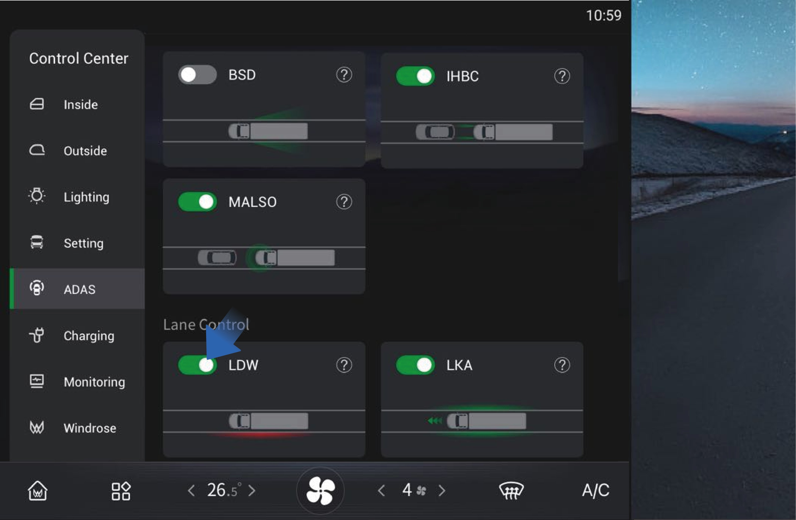
↑ Nach obenSie können die Funktion aktivieren/deaktivieren, indem Sie „Steuerzentrale" auswählen, zur „ADAS"-Oberfläche wechseln und auf dem Fahrzeuginformationsbildschirm des Armaturenbretts auf die Schaltfläche „LDW" tippen.
LDW ist beim Einschalten standardmäßig aktiviert, und Sie können
sie bei Bedarf manuell deaktivieren.
7F.2
Vorsichtsmaßnahmen
Warnung
LDW ist eine Fahrassistenzfunktion und kann Ihre Beobachtung und Einschätzung der Verkehrssituation sowie die Verantwortung des Fahrers für sicheres Fahren nicht ersetzen.
Verwenden Sie LDW nicht an Straßengabelungen, Kreuzungen usw.
Verwenden Sie LDW nicht, wenn am Fahrzeug Schneeketten verwendet werden.
Verwenden Sie LDW nicht, wenn die Reifen übermäßig abgenutzt sind oder der Reifendruck zu niedrig ist.
Verwenden Sie LDW nicht, wenn Reifen verschiedener Bauart, Marken oder von verschiedenen Herstellern oder mit unterschiedlichen Reifenprofilen gemischt werden.
Verwenden Sie LDW nicht, wenn das Fahrzeug auf Baustellen (mit Baustellenschildern, Leitkegeln usw.) fährt.
Verwenden Sie LDW nicht bei schlechten Fahrbedingungen, wie scharfen
Kurven, steilen Hängen, vereisten und rutschigen Straßen oder bei schlechtem Wetter wie Regen, Schnee, Nebel.
Sie sollten stets Aufmerksamkeit und Urteilsvermögen bewahren, sicherstellen, dass sich das Fahrzeug in der eigenen Spur befindet, und die geltenden Gesetze und Verkehrsvorschriften einhalten.
LDW funktioniert möglicherweise nicht ordnungsgemäß auf Straßen ohne Fahrbahnmarkierungen, mit mehreren Fahrbahnmarkierungen, abgenutzten oder unklaren Fahrbahnmarkierungen oder wenn die Fahrbahnmarkierungen von anderen Objekten verdeckt sind.
LDW kann keine Kollisionen verhindern. Es liegt stets in Ihrer Verantwortung, das Fahrzeug sicher zu fahren.
7GElektronische Stabilitätskontrolle (ESC)
die Fahrtrichtung des Fahrzeugs und die Stabilität der Richtung zu gewährleisten.
Überrollschutz: Wenn das Fahrzeug Gefahr läuft, sich zu überschlagen, reduziert das ESC das Motordrehmoment oder bremst das Fahrzeug, um das Fahrzeug zu verlangsamen und ein Überschlagen zu verhindern.
7G.1 Bedienungsanleitung
Bedienungsanleitung
Funktionsbeschreibung
Fahrassistenz
Die elektronische Stabilitätskontrolle (ESC) ist ein System, das eine Reihe umfassender Strategien zur Stabilitätskontrolle des Fahrzeugs integriert. Sie soll die Fahrdynamik des Fahrzeugs verbessern und verhindern, dass das Fahrzeug die Kontrolle verliert, wenn es an seine dynamischen Grenzen stößt. Das ESC verbessert die Sicherheit und Steuerbarkeit des Fahrzeugs.
Das ESC hat hauptsächlich zwei Teilfunktionen:
Richtungskontrolle: Wenn das Fahrzeug über- oder untersteuert, bremst das ESC ein einzelnes Rad, um
↑ Nach obenSie können das ESC manuell deaktivieren, indem Sie „Steuerzentrale" auswählen, zur „Einstellungen"-Oberfläche wechseln und auf dem Fahrzeuginformationsbildschirm des Armaturenbretts auf die Schaltfläche „ESC AUS" tippen.
Nachdem das ESC ausgeschaltet wurde, wird die entsprechende ESC-AUS-Anzeige auf dem Kombi-Instrument angezeigt.
7G.2Vorsichtsmaßnahmen
HinweisWenn das ESC fehlerhaft ist, leuchtet die gelbe ESC-Kontrollleuchte auf dem Kombi-Instrument auf. Sie sollten sich so bald wie möglich an ein autorisiertes Windrose-Servicezentrum wenden, um das System reparieren zu lassen.
Anmerkung
Das ESC ist beim Start des Fahrzeugs standardmäßig eingeschaltet. Wenn das Fahrzeug neu gestartet wird, wird das ESC ebenfalls automatisch eingeschaltet.
Der ESC-AUS-Schalter steuert die Aktivierung und Deaktivierung sowohl des ESC als auch des ASR. Wenn das ESC ausgeschaltet wird, wird auch das ASR ausgeschaltet.
Totwinkel-Informationssystem (BSIS)
↑ Nach obenFahrassistenz
Das BSIS-System erkennt Fußgänger und Radfahrer in den toten Winkeln des Fahrzeugs. Wenn das Fahrzeug steht und ein Objekt erkannt wird, das in die Gefahrenzone eintritt, löst der BSIS-Alarmbildschirm sofort eine Warnung aus, wobei die Armaturenbrettanzeigen gleichzeitig aktiviert werden. Wenn die entsprechende Anzeige leuchtet und das Fahrzeug vorwärts fährt, gibt das Armaturenbrett Ton- und Blitzalarm aus, bis der Fußgänger die Gefahrenzone vollständig verlassen hat.
BSIS-Warnung
Warnstufe 1
Wenn der BSIS-Sensor des Fahrzeugs das Vorhandensein eines Radfahrers mit einer Geschwindigkeit von 5–20 km/h erkennt, der seinen Erfassungsbereich betritt, zeigt das BSIS-System durch optische Signale eine gelbe Warnleuchte auf dem Armaturenbrett und dem BSIS-Alarmbildschirm an und warnt den Fahrer, bis das Ziel den Alarmbereich verlässt.
Warnstufe 2
Auf der Grundlage des ersten Stufen-Alarms, wenn sich das Fahrzeug im Vorwärtsgang befindet und der Blinker auf der Seite mit dem Zielobjekt synchron aktiviert wird, zeigt das BSIS-System durch optische Signale eine rote Warnleuchte auf dem Armaturenbrett und dem BSIS-Alarmbildschirm an und gibt synchron einen Alarmton aus, um den Fahrer zu informieren, dass das Ziel den Alarmbereich verlassen hat.
BSIS-Fehlerwarnung
Wenn das System ausfällt, erscheint einmalig ein Popup-Fenster, und der Funktionsschalter in der Einstellungsoberfläche des IHU-Steuerbildschirms wird abgeschaltet und ausgegraut, was den Bediener darauf hinweist, dass die Funktion nicht verfügbar ist.
7G.3
Bedienungsanleitung

Sie können zur Steuerzentrale wechseln, indem Sie „Steuerzentrale" aus dem Infotainment-Bildschirm des Fahrzeugs auf der rechten Seite des Armaturenbretts auswählen. Tippen Sie auf der „ADAS"-Oberfläche auf die Schaltfläche „BSIS-Alarmton", um den BSIS-Funktionsalarmton ein-/auszuschalten.
Einschränkungen des BSIS
In den folgenden Situationen kann BSIS Ziele möglicherweise nicht erkennen oder nicht gut funktionieren. Wir empfehlen, sich nicht zu sehr auf BSIS zu verlassen:
Widrige Wetterbedingungen wie Schnee und Nebel sowie Umgebungen mit schwachem Licht verhindern, dass das System Ziele erkennt.
Spurwechsel direkt ohne Einschalten des Blinkers.
Das Ziel ist relativ klein oder bewegt sich langsam und befindet sich in einem stationären Zustand.
Das Fahrzeug macht eine scharfe Kurve oder befindet sich auf freiem Gelände.
Bei einer Systemfehlfunktion (z. B. Kamera, Steuergerät, Alarm, Bremse, Lenkung usw.).
7G.4Vorsichtsmaßnahmen
Warnung
BSIS ist eine Fahrassistenzfunktion und kann Ihre Beobachtung und Einschätzung der Verkehrssituation sowie die Verantwortung des Fahrers für sicheres Fahren nicht ersetzen.
ADDW
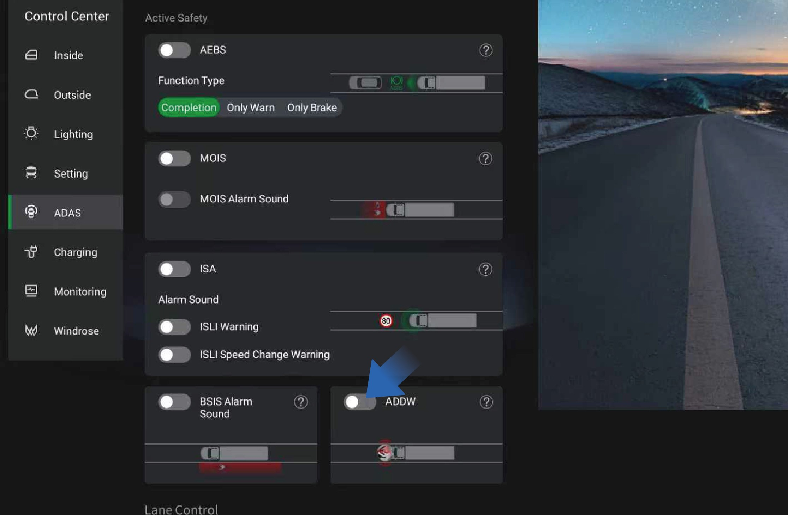
Fahrassistenz
Verlassen Sie sich nicht zu sehr auf das BSIS, und es ist verboten, das Auslösen der Funktion absichtlich zu testen oder absichtlich auf das Auslösen der Funktion zu warten. Aufgrund der inhärenten Einschränkungen der Systemleistung können Falschauslösungen und verfehlte Auslösungen nicht vollständig vermieden werden.
ADDW ist das Fahrerablenkungswarn-System, das eine
Warnung ausgibt, wenn der Fahrer abgelenkt ist; wenn der ADDW-Schalter ausgeschaltet wird, kann die Ablenkungserinnerungsfunktion während der aktuellen Einschaltperiode deaktiviert werden.
Intelligente Geschwindigkeitsassistenz (ISA)
↑ Nach obenFunktionsbeschreibung
Fahrassistenz
Das ISA-System kombiniert die Erkennung durch eine vorwärtsgerichtete Kamera und Offline-Karten zur Erkennung von Geschwindigkeitsbegrenzungen. Wenn das System das wahrgenommene Tempolimit erkennt, zeigt das Armaturenbrett das wahrgenommene Tempolimit der aktuellen Straße an. Wenn die Fahrzeuggeschwindigkeit das auf dem Armaturenbrett angezeigte wahrgenommene Tempolimit überschreitet, gibt das System ein Blinklicht- und ein akustisches Warnsignal aus. Das Loslassen des Gaspedals oder das Betätigen der Bremse kann die akustische Warnung beenden.
Die ISA-Funktion kann vollständig ausgeschaltet werden, bis sie wieder eingeschaltet oder das Fahrzeug neu gestartet wird.
Sie können zur Steuerzentrale wechseln, indem Sie „Steuerzentrale" aus dem Infotainment-Bildschirm des Fahrzeugs auf der rechten Seite des Armaturenbretts auswählen. Tippen Sie auf der „ADAS"-Oberfläche auf die Schaltfläche „ISA", um die ISA-Funktion ein-/auszuschalten.
Fahrer können den Überschreitungsalarmton über die Einstellungsoption ein- oder ausschalten; Fahrer können den Erinnerungston für Änderungen des erkannten Tempolimits über die Einstellungen ein- oder ausschalten.
Erkennung und Detektion von Fahrzeug-Tempolimitzeichen durch die ISA
Das ISA-Wahrnehmungssystem kann Tempolimitzeichen innerhalb von 50 Metern voraus erkennen und identifizieren.
Das ISA-Wahrnehmungssystem kann Tempolimitzeichen innerhalb einer Höhe von nicht mehr als 7 Metern erkennen.
Das ISA-System kann Tempolimitzeichen erkennen, die nationalen Standards entsprechen.
Das ISA-System kann mehrere Tempolimitzeichen innerhalb eines sichtbaren Bereichs erkennen.
Das ISA-System kann eingebettete Tempolimitzeichen erkennen und identifizieren.
ISA-Funktionsausfall
Wenn das System eine Sensorfehlfunktion erkennt, von der die Systemfunktion abhängt, ausgenommen Sensorbehinderung, sollte der Fahrer über ein Fehlersignal über den Systemfehlerstatus informiert werden.
Wenn das System eine Fehlfunktion in den zugehörigen elektronischen Komponenten erkennt, sollte es den Fahrer über ein Fehlersignal über den Fehlerstatus des Systems informieren.
Solange eine Fehlfunktion vorliegt, sollte sie nach dem Einschalten des Fahrzeugs weiterhin angezeigt werden.
7G.5Vorsichtsmaßnahmen
Warnung
Die Tempolimitinformationen und Geschwindigkeitsmessinformationen dienen nur als Referenz. Bitte beachten Sie die Informationen auf der tatsächlichen Straße und fahren Sie das Fahrzeug sicher.
Beeinflusst durch die Fahrumgebung kann die Kamera Fehlalarme ausgeben, wenn sie ein dem Tempolimitzeichen ähnliches Schild erkennt. Aus diesem Grund sollte der Fahrer sich zu keinem Zeitpunkt ausschließlich auf das System verlassen.
7HBerganfahrhilfe (HSA)
↑ Nach obenFahrassistenz
Die Berganfahrhilfe (HSA) hilft Ihnen, ein Zurückrollen des Fahrzeugs beim Anfahren an einer Steigung zu verhindern. Die HSA hält das Fahrzeug kurzzeitig an einer Steigung stationär, nachdem das Bremspedal losgelassen wurde.
7H.1Bedienungsanleitung
↑ Nach obenSie können die Funktion aktivieren/deaktivieren, indem Sie „Steuerzentrale" auswählen, zur „Einstellungen"-Oberfläche wechseln und auf dem Fahrzeuginformationsbildschirm des Armaturenbretts auf die Schaltfläche „Berganfahrhilfe" tippen.
Wenn das Fahrzeug an einer Rampe anfahren soll, drücken Sie zunächst das Bremspedal, lösen Sie die Feststellbremse und drücken Sie dann die HSA-Schaltfläche im IHU-Steuerbildschirm, um die HSA-Funktion zu aktivieren. Zu diesem Zeitpunkt leuchtet die HSA-Anzeige auf dem Kombi-Instrument auf, und der Fahrer sollte das Fahrzeug innerhalb von 3 Sekunden starten. Bevor das HSA deaktiviert wird, blinkt die HSA-Anzeige auf dem Kombi-Instrument
7H.2
Vorsichtsmaßnahmen
Warnung
Die HSA ist kein Ersatz für die EPB. Wenn Sie das Fahrzeug verlassen möchten, müssen Sie das Bremspedal unbedingt drücken und die EPB aktivieren.
Wenn das Fahrzeug beginnt, rückwärts zu rollen, muss sofort das Bremspedal gedrückt werden. Die HSA kann ein Rückwärtsrollen des Fahrzeugs auf einem steilen Hang bei voller Beladung oder auf besonderen Straßen nicht verhindern.
Es ist verboten, beim Anfahren an einer Steigung gleichzeitig das Bremspedal und das Gaspedal zu drücken.
Anmerkung
Es wird empfohlen, die HSA sofort nach dem Anfahren des Fahrzeugs auszuschalten; wenn ein kontinuierliches Anfahren erforderlich ist, schalten Sie die HSA nach Abschluss des kontinuierlichen Berganfahrens aus.
Es wird empfohlen, die HSA beim Fahren auf ebenen Straßen auszuschalten.
Die HSA ist beim Start des Fahrzeugs standardmäßig ausgeschaltet.
↑ Nach obenschnell blinken.
7ILenkrad-Reifen-Notfallsicherheitsvorrichtung (TESD)
Fahrassistenz
Beim Reifenwechsel muss der Bediener zuerst die Reifen-Notfallsicherheitsvorrichtung entfernen, dann den Reifen abnehmen, den neuen Reifen montieren und anschließend die Reifen-Notfallsicherheitsvorrichtung wieder anbringen.
7I.1Funktionsbeschreibung
↑ Nach obenDie Reifen-Notfallsicherheitsvorrichtung ist eine passive Sicherheitsvorrichtung, die verhindert, dass die Radnabe im Moment eines Reifenplatzers den Boden berührt, sodass die Lenk- und Bremskraft des Fahrzeugs noch kontrolliert werden kann, um die Sicherheit von Personen und Fahrzeugen zu gewährleisten.
7I.2Vorsichtsmaßnahmen
Anmerkung
Wenn die abgenommene Reifen-Notfallsicherheitsvorrichtung wieder angebracht wird, ist zu prüfen, ob das Gerät beschädigt ist. Nur wenn bestätigt wird, dass keine Beschädigung vorliegt, kann das Gerät erneut verwendet werden, jedoch müssen die Schrauben und Muttern durch neue ersetzt werden. Wenn eine Beschädigung vorliegt, muss eine neue Reifen-Notfallsicherheitsvorrichtung installiert werden.
7JElektrohydraulische Servolenkung (EHPS)
↑ Nach obenFahrassistenz
7J.1Funktionsbeschreibung
Die elektrohydraulische Servolenkung (EHPS) realisiert die Lenkunterstützung und intelligente Fahrunterstützung durch Steuerung der hydraulischen Leistungsabgabe des Antriebsmotors.
Für die Lenkung stellt das System eine Lenkunterstützung bereit, um die Steuerbarkeit und Stabilität des Fahrzeugs zu verbessern und das Lenken zu erleichtern.
Aktive Lenkausrichtung
Nach dem Lenken berechnet das EHPS den Winkel und die Geschwindigkeit der aktiven Lenkausrichtung entsprechend dem Lenkwinkel und der Fahrzeuggeschwindigkeit zu diesem Zeitpunkt, um die aktive Ausrichtung des Lenkrades zu realisieren.
Geschwindigkeitsabhängige Servounterstützung
Wenn das Fahrzeug mit hoher Geschwindigkeit abbiegt, wird die entgegengesetzte Richtungskraft entsprechend linear erhöht; wenn das Fahrzeug mit niedriger Geschwindigkeit abbiegt, wird die gleichgerichtete Kraft entsprechend linear erhöht, um Ihr Lenkgefühl anzupassen und eine geschwindigkeitsabhängige Unterstützung zu bieten.
Hands-off-Erkennung (HOD)
↑ Nach obenDas EHPS-System kann anhand des Lenkraddrehmoments feststellen, ob Sie Ihre Hände vom Lenkrad genommen haben.
7J.2Vorsichtsmaßnahmen
Warnung
Wenn das EHPS-System ausfällt, wenden Sie sich rechtzeitig an ein autorisiertes Windrose-Servicezentrum, um das System prüfen und reparieren zu lassen.
EHPS ist nur eine Fahrerassistenzfunktion und kann Ihre Lenkradsteuerung nicht ersetzen. Während der Fahrt sind Sie stets dafür verantwortlich, das Lenkrad zur Steuerung zu bedienen.
7KElektronisch geregelte Luftfederung (ECAS)
↑ Nach obenFahrassistenz
7J.3Funktionsbeschreibung
Die elektronisch geregelte Luftfederung (ECAS) betätigt das Magnetventil im Steuermechanismus, indem sie die Rahmenhöhe und Achshöhe, den Luftsackdruck, das Fahrzeuggeschwindigkeitssignal, das Bremssignal und das Betriebsschaltersignal erfasst, um das Aufblasen und Ablassen des Luftsacks zu realisieren und damit das Anheben und Absenken der Federung zu ermöglichen.
Bedienungsanleitung für die Fernbedienung Die Fernbedienung ist unerlässlich für das ECAS am LKW. Sie integriert die häufig verwendeten Hebe- und Senktasten des ECAS
zum manuellen Heben und Senken der Vorder- und Hinterachsen,
die Wiederherstellung der Normalhöhe und die Speicherhöhensteuerung.
Die Fernbedienung ist im Stauraum unter dem rechten Armaturenbrett befestigt und kann zur Verwendung entnommen werden.
Die Fernbedienungstaste ist eine selbstrückstellende Tipp-Taste. Bei der Verwendung der Taste sollten Sie die Zielposition (Vorder-/Hinterachse) auswählen, dann leuchtet die entsprechende Anzeige auf, und der Ziel-Luftsack wird gehoben und gesenkt.

Hinterachsanzeige
Wenn die Hinterachse ausgewählt ist, leuchtet die Hinterachsanzeige auf und Sie können die Hinterachse bedienen.
Hinterachsauswahltaste
Nachdem Sie diese Taste gedrückt und die Hinterachse ausgewählt haben, leuchtet die Hinterachsanzeige auf.
Hubachsanzeige
Wenn die Hubachse ausgewählt ist, leuchtet die Hubachsanzeige auf und Sie können die Hubachse bedienen.
Hubachsauswahltaste
Nachdem Sie diese Taste gedrückt und die Hubachse ausgewählt haben, leuchtet die Hubachsanzeige auf.
Rückstelltaste
Bei der Auswahl der Achse leuchtet die Anzeige auf. Wenn Sie jetzt die Taste drücken, kehrt die ausgewählte Achse zur Normalhöhe zurück.
Stopptaste
Nach dem Drücken dieser Taste wird jedes laufende Anheben und Absenken des Fahrzeugs gestoppt.
Speicherhöhe M2
Aktivierung der Speicherhöhe M2: Nachdem Sie die Vorder-/Hinterachse ausgewählt haben, drücken Sie diese Taste, um die aktuelle Achshöhe automatisch auf Speicherhöhe M2 einzustellen.
Speicherung der Speicherhöhe M2: Wählen Sie die Vorder-/Hinterachse, stellen Sie die Achsposition auf die zu speichernde Höhe ein, drücken und halten Sie die Stopptaste ohne Loslassen, drücken Sie gleichzeitig diese Taste, halten Sie sie gedrückt und lassen Sie sie nach 2 Sekunden los.
Senktaste
Drücken Sie diese Taste, um die Achse abzusenken.
Hebtaste
Drücken Sie diese Taste, um die Achse anzuheben.
Speicherhöhe M1
Aktivierung der Speicherhöhe M1: Nachdem Sie die Vorder-/Hinterachse ausgewählt haben, drücken Sie diese Taste, um die aktuelle Achshöhe automatisch auf Speicherhöhe M1 einzustellen.
Speicherung der Speicherhöhe M1: Wählen Sie die Vorder-/Hinterachse, stellen Sie die Achsposition auf die zu speichernde Höhe ein, drücken und halten Sie die Stopptaste ohne Loslassen, drücken Sie gleichzeitig diese Taste, halten Sie sie gedrückt und lassen Sie sie nach 2 Sekunden los.
Vorderachsauswahltaste
Nachdem Sie diese Taste gedrückt und die Vorderachse ausgewählt haben, leuchtet die Vorderachsanzeige auf.
Vorderachsanzeige
Wenn die Vorderachse ausgewählt ist, leuchtet die Vorderachsanzeige auf und Sie können die Vorderachse bedienen.
7J.4Bedienungsanleitung für den Fahrzeuginformationsbildschirm
Sie können die geeignete Fahrhöhe auswählen, indem Sie „Steuerzentrale" auswählen, zur „Einstellungen"-Oberfläche wechseln und auf dem Fahrzeuginformationsbildschirm des Armaturenbretts auf die Schaltfläche „ECAS-Einstellung" tippen.

Hoch
Beim Fahren auf holprigen Straßen oder Wasserdurchfahrten können Sie eine größere Fahrhöhe wählen, um zu verhindern, dass das Rad springt und den Rahmen berührt usw.
Die Höhe des Hochlagen-Luftsacks wird gegenüber der Standardhöhe um 50 mm erhöht.
Standard
Die über den Fahrzeuginformationsbildschirm gesteuerte Standardhöhe und die über die Fernbedienung gesteuerte Standardhöhe sind identisch.
Wenn der Luftsack nicht in Standardposition ist, leuchtet das Nicht-Normalhöhen-Warnsymbol auf dem Kombi-Instrument auf.
Niedrig
Bei hohen Geschwindigkeiten kann eine geringere Fahrhöhe gewählt werden, um den Fahrkomfort des Fahrzeugs zu verbessern und den Energieverbrauch in gewissem Maße zu reduzieren.
Die Höhe des Niedriglagen-Luftsacks wird gegenüber der Standardhöhe um 35 mm reduziert.
7J.5Vorsichtsmaßnahmen
WarnungWenn das ECAS fehlerhaft ist, leuchtet die rote ECAS-Kontrollleuchte auf dem Kombi-Instrument auf. Sie sollten sich so bald wie möglich an ein autorisiertes Windrose-
Servicezentrum wenden, um das System prüfen und reparieren zu lassen.
Hinweis
Der Luftsack kann nicht angehoben oder abgesenkt werden, wenn der Druck im Luftbehälter unzureichend ist.
Wenn die Fahrzeuggeschwindigkeit 10 km/h überschreitet, wird die manuelle Tastensteuerungsfunktion des ECAS deaktiviert.
Wenn das Fahrzeug gerade eingeschaltet wurde und sich der Luftsack nicht in der Normalposition befindet, kehrt das ECAS sofort automatisch auf die Standardhöhe zurück und hält diese bei.
Wenn sich der Luftsack nicht in der Normalposition befindet und das Fahrzeug aus dem Stillstand auf über 10 km/h beschleunigt, kehrt es automatisch auf die Standardhöhe zurück und hält diese bei.
Der vordere/hintere Luftsack kann um bis zu 85 mm angehoben und um bis zu 50 mm abgesenkt werden.
Wenn der Luftsack nicht in Standardposition ist, leuchtet das Nicht-Normalhöhen-Warnsymbol auf dem Kombi-Instrument auf.
Anmerkung
- Das Fahrzeug kann dauerhaft auf der am Fahrzeuginformationsbildschirm gewählten Höhe gefahren werden.
7LReifendrucküberwachungssystem (TPMS)
Fahrassistenz
↑ Nach oben7L.1Funktionsbeschreibung
↑ Nach obenDieses Fahrzeug ist mit einem Reifendrucküberwachungssystem (TPMS) ausgestattet, mit dem Sie den Reifendruckstatus des Fahrzeugs jederzeit überprüfen können.
7L.2Bedienungsanleitung

↑ Nach obenSie können den aktuellen, vom TPMS überwachten Reifendruck und die Reifentemperatur überprüfen, indem Sie auf dem Fahrzeuginformationsbildschirm des Armaturenbretts „Steuerzentrale" auswählen und zur „Überwachungs"-Oberfläche wechseln. Wenn der aktuelle Reifendruck und die Temperatur nicht angezeigt werden können, wenden Sie sich an ein autorisiertes Windrose-Servicezentrum.
Wenn der Druck oder die Temperatur eines oder mehrerer Reifen abnormal ist, der Sensor verloren gegangen ist oder der Reifen schnell Luft verliert, leuchtet die Reifendruckwarnleuchte auf dem Kombi-Instrument auf und ein Popup-Fenster erscheint, das die Ursache des Fehlers und den Ort des fehlerhaften Reifens beschreibt, begleitet von einem „Piepton"-Ton, der Sie auffordert, so bald wie möglich anzuhalten, die Reifen zu überprüfen und sich an ein autorisiertes Windrose-Servicezentrum zur Prüfung und Reparatur des Systems zu wenden.
7L.3Vorsichtsmaßnahmen
↑ Nach obenAnmerkungDas TPMS basiert auf der Reifentemperatur und der Atmosphärentemperatur. In Gebieten mit großer Höhe oder niedriger Temperatur kann es erforderlich sein, die Reifen auf einen etwas höheren Druck aufzupumpen, um den Niedrigdruckalarm des Reifens zu löschen.
7MMultimedia-Übersicht
Multimedia-System
Sie können hier tippen, um den Infotainment-Bildschirm des Fahrzeugs auszuschalten.
Anwendungszentrum
Sie können hier tippen, um zugehörige Anwendungen anzuzeigen oder zu verwenden.
Radio
Sie können hier tippen, um zur Radio-Oberfläche zu wechseln und lokale Radiosender zu hören.
Lokale Musik
Sie können hier im IHU-System gespeicherte Musikdateien ansehen oder abspielen.
Startseite
Sie können hier tippen, um zur Startseite zurückzukehren.
Musik-Player
Sie können hier Musik pausieren und wechseln.
Mobiltelefonverbindung
Sie können hier tippen, um Ihr Telefon mit dem IHU zu verbinden.
Bluetooth-Telefon
Nachdem das bordeigene Bluetooth mit dem Telefon verbunden ist, können Sie damit im Fahrzeug Anrufe entgegennehmen/tätigen.
Ein-/Ausschalter des Infotainment-Bildschirms
7M.1Funktionsbeschreibung
Multimedia-System
Reinigung: Drücken und halten Sie den Fahrzeuginformationsbildschirm kurz, um den Bildschirm zum Leuchten zu bringen.
Ruhige Entspannung: Nach dem Tippen auf „Ruhige Entspannung" können Sie
↑ Nach obenDer Fahrzeuginformationsbildschirm verfügt über drei Umgebungs-
modi zur Auswahl, je nach Ihrer Nutzung.
7M.2Bedienungsanleitung

Sie können in der Systemeinstellungsoberfläche auf dem Fahrzeuginformationsbildschirm auf „Einstellungen" tippen, um den Umgebungsmodus auszuwählen:
Bildschirmreinigung: Nach dem Tippen auf „Bildschirm wischen" wird der Fahrzeuginformationsbildschirm sofort schwarz, um das
gewünschte Umgebungsgeräusch auszuwählen und abzuspielen, und der Fahrzeuginformationsbildschirm wird sofort schwarz. Wenn Sie den Bildschirm zum Leuchten bringen möchten, tippen Sie einfach doppelt auf den Fahrzeuginformationsbildschirm.
Warten: Nach dem Tippen auf „Warten" wird der Fahrzeuginformationsbildschirm sofort schwarz. Wenn Sie den Bildschirm zum Leuchten bringen möchten, tippen Sie einfach doppelt auf den Fahrzeuginformationsbildschirm.
7NFahrerwerkzeuge
Notfallhandhabung
Wetter: Das Schild muss 200 Meter vom Fahrzeug entfernt aufgestellt werden.
Dieses Fahrzeug ist ab Werk mit Fahrerwerkzeugen ausgestattet. Die Fahrerwerkzeuge sind in der Werkzeugkiste auf der linken Seite des Fahrzeugs für den Notfalleinsatz in bestimmten Situationen aufbewahrt, darunter:
Abschlepphaken
Warndreieck
7OSicherheitshammer
↑ Nach oben
6032Notfallhandhabung
7N.1Abschlepphaken
6037Wenn dieses Fahrzeug abgeschleppt wird, müssen Sie zunächst den Abschlepphaken ordnungsgemäß einbauen und die Stabilität des Fahrzeugs auf dem Abschleppfahrzeug sicherstellen.
7N.2Dreieckiges Warnzeichen
Wenn ein Notfall das Fahrzeug immobilisiert, schalten Sie zunächst die Warnblinkanlage ein und stellen Sie dann das Warndreieck in ausreichendem Abstand hinter dem Fahrzeug auf. Der erforderliche Aufstellabstand des Warndreiecks hängt von der Umgebung und dem Straßentyp ab. Auf normalen Straßen sollte es 50 bis 100 Meter vom Fahrzeug entfernt aufgestellt werden; auf Autobahnen beträgt der Abstand 150 Meter; und bei Regen, Nebel oder Schnee
Im Falle eines Notfalls oder einer Katastrophe können die Türen möglicherweise nicht geöffnet werden, einschließlich, aber nicht beschränkt auf folgende Situationen:
Fahrzeugbrand
Wenn ein Fahrzeug Feuer fängt, kann das Feuer die Türen deformieren und dazu führen, dass sie sich nicht öffnen lassen.
Fahrzeug stürzt ins Wasser
Wenn ein Fahrzeug versehentlich ins Wasser fällt, sind die Türen aufgrund des Druckunterschieds zwischen Innen- und Außenseite schwer zu öffnen.
Verkehrsunfall
↑ Nach obenBei einem schweren Verkehrsunfall kann die Kollision die Türen deformieren und dazu führen, dass sie sich nicht öffnen lassen.
In diesem Fall können Sie den mit diesem Fahrzeug ausgestatteten Sicherheitshammer verwenden,
um das Fenster einzuschlagen und zu entkommen.
7N.3Bedienungsanleitung
1. Den Sicherheitshammer entnehmen
Der Sicherheitshammer befindet sich auf der rechten Seite der elektrischen Schiebetür und kann direkt zur Verwendung entnommen werden.

Das Fenster einschlagen
Richten Sie das spitze Ende des Sicherheitshammers auf die vier Ecken oder Ränder des Fensters und schlagen Sie kräftig zu, bis das Fenster bricht.
Aus dem Fahrzeug entkommen
↑ Nach obenEntkommen Sie aus dem Fahrzeug und halten Sie sich an einem sicheren Ort vom Fahrzeug fern. Rufen Sie die Polizei und warten Sie auf Rettung.
7N.4Vorsichtsmaßnahmen
Warnung
Die Ecken und Ränder von Sicherheitsglas sind relativ schwach, was das Einschlagen zur Evakuierung erleichtert.
Glas kann nach dem Zerbrechen aufgrund von Folie oder anderen Gründen nicht sofort herausfallen. In diesem Fall kann das Glas durch kraftvolle Stöße herausgelöst werden.
Überprüfen Sie den Sicherheitshammer regelmäßig, um sicherzustellen, dass er sich in einwandfreiem Betriebszustand befindet.
8AFeuerlöscher
↑ Nach oben 6108Notfallhandhabung
8BAnhänger ziehen
6111
8A.1Fahrzeugbergung und Abschleppen
↑ Nach obenNotfallhandhabung
Wenn das Fahrzeug aufgrund einer Panne oder eines Unfalls nicht mehr gefahren werden kann, wenden Sie sich sofort an ein autorisiertes Windrose-Servicezentrum für professionelle Bergung und Abschleppdienste. Versuchen Sie nicht, das Fahrzeug ohne Einhaltung ordnungsgemäßer Verfahren abzuschleppen. Falsches Abschleppen kann zu ernsthaften Fahrzeugschäden, Bremsausfall oder einem Straßenverkehrsunfall führen.
HinweisVergewissern Sie sich vor dem Abschleppen, dass das Fahrzeug über ausreichenden Bremsluftzug verfügt. Wenn der Bremsdruck unzureichend ist, müssen die Federspeicherbremszylinder der Hinterachse mechanisch oder pneumatisch gelöst werden, um ein Blockieren der Bremsen zu verhindern.
Der Feuerlöscher befindet sich unten links am Schlafbereich und kann im Notfall zur Brandbekämpfung verwendet werden.
WarnungIm Notfall löschen Sie bitte das Feuer und kontaktieren Sie die Feuerwehr zur Beseitigung, nur wenn dies sicher zu tun ist.
8A.2
Abschleppen
Wenn Ihr Fahrzeug abgeschleppt werden muss, führen Sie die folgenden Schritte aus:
Entnehmen Sie den Abschlepphaken aus der Werkzeugkiste auf der linken Seite des Fahrzeugs.

Öffnen Sie die Abdeckplatte der Abschlepphaken-Montagelöcher, die sich vorne links und rechts am Fahrzeug befinden.
Schrauben Sie den Abschlepphaken je nach tatsächlichen Gegebenheiten in das linke oder rechte Montageloch und stellen Sie sicher, dass der Haken vollständig eingeschraubt ist, ohne zu wackeln. Wenn sich Verunreinigungen oder Ölflecken im Abschlepphaken-Gewinde befinden, reinigen Sie es vor dem Einschrauben des Abschlepphakens. Stellen Sie vor dem Einbau des Abschlepphakens sicher, dass das Fahrzeug stillsteht.
Verbinden Sie die Abschleppvorrichtung am Abschleppfahrzeug mit dem Abschlepphaken.
dem Abschlepphaken.
Halten Sie das Fahrzeug eingeschaltet, um sicherzustellen, dass die Lenk- und Bremssysteme normal betrieben werden können.
Schalten Sie die Warnblinkanlage ein.
Starten Sie das Abschleppfahrzeug, um dem defekten Fahrzeug aus der Notlage zu helfen.
WarnungDer originale Abschlepphaken besteht aus Spezialmaterialien und hat eine hohe Festigkeit. Wenn Sie einen nicht werkseitig montierten Abschlepphaken verwenden, kann der Abschlepphaken brechen. Wenn Sie einen neuen Abschlepphaken kaufen müssen, wenden Sie sich an ein autorisiertes Windrose-Servicezentrum.
Hinweis
Wenn dieses Fahrzeug an einen Anhänger gekoppelt ist, trennen Sie den Anhänger vor dem Abschleppen.
Wenn dieses Fahrzeug im Schlamm oder in weichem Erdreich steckt, schleppen Sie das Fahrzeug nicht plötzlich heraus. Vermeiden Sie auch schräges oder seitliches Ziehen, um Schäden am Fahrzeugunterboden zu verhindern.
Beim Starten des Abschleppfahrzeugs achten Sie auf die Kontrolle der Fahrzeuggeschwindigkeit und vermeiden Sie es, das defekte Fahrzeug zu schnell oder zu heftig abzuschleppen, um Fahrzeugschäden zu verhindern und andere Straßennutzer nicht zu gefährden.
Beim Abschleppen dieses Fahrzeugs darf die Geschwindigkeit des Abschleppfahrzeugs 15 km/h nicht überschreiten, um Schäden am Fahrzeugantriebsmotor zu vermeiden.
Beim Erreichen des Ziels sollten Sie das Fahrzeug unbedingt verlangsamen und den Abschleppvorgang beenden. Bereinigen Sie nach Abschluss der Abschlepparbeiten rechtzeitig die Einsatzstelle, entfernen Sie den Abschlepphaken und verstauen Sie ihn, und schließen Sie die Schutzabdeckung des Abschlepphakens.
Der Abschlepphaken kann verwendet werden, um das Fahrzeug aus einer Notlage zu befreien, und darf nicht für den Transport über lange Strecken verwendet werden.
Abschleppen ist nur erlaubt, wenn kein Sicherheitsrisiko für das Fahrzeug besteht. Falls das Batteriepaket verformt ist, ausläuft, raucht usw., sollten Sie Sicherheitsrisiken sofort beseitigen.
8CBremsausfall
Notfallhandhabung
↑ Nach oben 61808C.1Notfallbetrieb
Wenn die Bremsen während der Fahrt plötzlich versagen, schalten Sie sofort die Warnblinkanlage ein, halten Sie das Lenkrad fest und achten Sie darauf, vorbeifahrende Fahrzeuge durch visuelle und akustische Alarme auszuweichen und zu warnen.
Betätigen Sie langsam die elektrische Feststellbremse, beobachten Sie die Fahrsituation und nutzen Sie ggf. Steigungen oder Notbremsstreifen zur Unterstützung beim Anhalten.
Bei besonderen Straßenverhältnissen wie kurvenreichen Gebirgsstraßen, Brücken, Klippen usw. sollten Sie auch das Lenkrad fest halten, um gefährliche Situationen wie Absturz zu vermeiden.
8C.2Folgemaßnahmen
↑ Nach obenNach dem Abstellen des Fahrzeugs stellen Sie Warnschilder rund um das Fahrzeug auf und blockieren Sie die Räder mit Keilen, um ein Wegrollen des Fahrzeugs zu verhindern. Wenden Sie sich an ein autorisiertes Windrose-Servicezentrum zur Überprüfung und Reparatur des Fahrzeugs.
8C.3Vorbeugende Maßnahmen
Warten Sie das Bremssystem regelmäßig.
Überprüfen Sie regelmäßig das Leerspiel des Bremspedals.
↑ Nach obenAnmerkungEs ist streng verboten, bei Bremsausfall sofort eine Notbremsung durchzuführen, da dies zum Schleudern und sogar zum Umkippen des Fahrzeugs führen kann.
8DUnkontrollierte Lenkung oder Lenkungsausfall
↑ Nach obenNotfallhandhabung
8D.1Notfallbetrieb
Wenn Sie auf normalen Straßen (Geradeausfahrt) plötzlich die Kontrolle über das Lenkrad verlieren, lassen Sie zunächst das Gaspedal los, schalten Sie so schnell wie möglich die Warnblinkanlage ein und drücken Sie das Bremspedal gleichmäßig.
Überprüfen Sie vor der Fahrt, ob die Lenkraddrehung den Standardanforderungen entspricht.
Überprüfen Sie vor der Fahrt, ob der Lenkungslenker, das Kugelgelenk, die Spurstange usw. lose sind.
Versuchen Sie beim Bremsen, ein Blockieren der Räder zu vermeiden.
HinweisFühren Sie keine sofortige Notbremsung durch, wenn Sie auf normalen Straßen plötzlich die Kontrolle über das Lenkrad verlieren, da dies zum Schleudern und sogar zum Umkippen des Fahrzeugs führen kann.
Wenn Sie auf besonderen Straßen (Kurven, Gebirgsstraßen) plötzlich die Kontrolle über das Lenkrad verlieren,
↑ Nach obensollte das Gaspedal sofort losgelassen werden; bremsen Sie schnell ab, um das Fahrzeug rechtzeitig zum Stillstand zu bringen und zu verhindern, dass es von der Straße abkommt oder mit anderen Fahrzeugen kollidiert.
Folgemaßnahmen
8EReifenplatzer
↑ Nach oben
6248
8D.2Notfallbetrieb
6255Notfallhandhabung
Nach dem Abstellen des Fahrzeugs stellen Sie Warnschilder rund um das
Fahrzeug auf und blockieren Sie die Räder mit Keilen, um ein Wegrollen des Fahrzeugs zu verhindern, und rufen Sie den Windrose-Service-Hotline an.
8D.3Vorbeugende Maßnahmen
Warten Sie das Lenksystem regelmäßig.
Führen Sie bei einem Reifenplatzer folgende Schritte durch:
Halten Sie das Lenkrad mit beiden Händen fest, kontrollieren Sie die Fahrtrichtung und schalten Sie die Warnblinkanlage ein.
Lassen Sie das Gaspedal vollständig los, betätigen Sie das Bremspedal wiederholt und
leicht und versuchen Sie, das Fahrzeug geradeaus zu fahren.
Stellen Sie nach dem Verlangsamen sicher, dass sich keine Fahrzeuge oder Fußgänger hinter und rechts neben dem Fahrzeug befinden, und fahren Sie langsam an den Fahrbahnrand.
8FFahrzeugschleudern
↑ Nach oben
6284
8D.4Notfallbetrieb
6289Notfallhandhabung
8D.5Folgemaßnahmen
Nach dem Abstellen des Fahrzeugs stellen Sie Warnschilder rund um das Fahrzeug auf und blockieren Sie die Räder mit Keilen, um ein Wegrollen des Fahrzeugs zu verhindern.
Nachdem das Fahrzeug vollständig zum Stillstand gekommen ist, kontaktieren Sie einen Abschleppwagen zur Rettung.
8D.6Vorbeugende Maßnahmen
Überprüfen Sie vor der Fahrt das Reifenprofil und den Reifendruck auf Beulen, Risse, Schnitte, Nägel und abnormalen Profilabrieb.
Hinweis
Bei einem Reifenplatzer das Lenkrad nicht abrupt drehen, da dies zu einem Schleudern des Fahrzeugs führen kann.
Außerdem ist es verboten, Notbremsungen oder hartes Bremsen durchzuführen (insbesondere auf Autobahnen), um ein Umkippen zu vermeiden.
Bei einem Schleudern des Fahrzeugs sollte der Fahrer:
Das Gaspedal loslassen und das Lenkrad leicht in Richtung des Schleuderns drehen und das Lenkrad rechtzeitig zurückdrehen.
Das Lenkrad festhalten, um ein Drehen zu verhindern.
8D.7Vorbeugende Maßnahmen
Überprüfen Sie vor der Fahrt, ob das Reifenprofil, der Druck und andere Punkte den Sicherheitsstandards entsprechen.
Überprüfen Sie nach dem Start des Fahrzeugs die Bremsleistung des Fahrzeugs bei niedriger Geschwindigkeit. Wenn eine Bremsabweichung vorliegt, halten Sie das Fahrzeug sofort an, überprüfen Sie das Bremssystem und beheben Sie den Fehler, bevor Sie weiterfahren.
Überlastung und Übergewicht verringern die Kippsicherheit und Fahrstabilität. Beladen Sie das Fahrzeug daher ordnungsgemäß.
Beim Fahren auf rutschigen oder vereisten Straßen empfiehlt es sich, Schneeketten zu verwenden, mit niedriger Geschwindigkeit zu fahren, das Bremspedal
vorsichtig zum Bremsen zu betätigen und Notbremsungen zu vermeiden.
Beim Bergabfahren auf langen steilen Hängen verlagert sich der Schwerpunkt nach vorne, was das Fahrzeug anfälliger für Kippen macht. Verlangsamen Sie daher die Geschwindigkeit, halten Sie das Lenkrad fest,
und bremsen Sie intermittierend, um die Fahrzeuggeschwindigkeit mit Hilfe der Motorschlepphemmung zu kontrollieren.
Verwenden Sie die Bremsen nicht beim Lenken, Beschleunigen oder Verzögern, um eine optimale Bremskoordination sicherzustellen.
Vor dem Abbiegen das Fahrzeug unbedingt rechtzeitig verlangsamen und das Lenkrad ordnungsgemäß drehen.
Es ist verboten, im Leerlauf zu rollen, insbesondere bergab, um ein plötzliches Bremsen des Fahrzeugs aufgrund übermäßiger Trägheitskräfte zu vermeiden.
Warnung
Wenn das Fahrzeug auf nassen oder vereisten Straßen schleudert, nicht gleichzeitig bremsen und lenken, um die Schleuderungsgefahr nicht zu verschlimmern.
Wenn das Schleudern durch Bremsen verursacht wird (Fahrzeugdrift), die Bremse sofort lösen. Wenn es erforderlich ist, die Geschwindigkeit zu reduzieren, kann Hilfsbremsung eingesetzt werden.
Wenn das Fahrzeug in einer Kurve schleudert, stabilisieren Sie zuerst das Fahrzeug und bremsen Sie dann intermittierend.
8GVersehentliches Abschalten der Hochspannung
↑ Nach obenNotfallhandhabung
8D.8Notfallbetrieb
Wenn das Fahrzeug während der Fahrt versehentlich mit Hochspannung abgeschaltet wird, sollte der Fahrer:
Den Warnblinkschalter drücken und versuchen, das Fahrzeug erneut zu starten.
Nachdem der Motor wieder arbeitet, das Fahrzeug unbedingt zur Seite fahren, um eine Inspektion durchzuführen und potenzielle Risiken zu beseitigen, bevor Sie weiterfahren.
Wenn das Fahrzeug nicht mit Hochspannung eingeschaltet werden kann, fahren Sie das Fahrzeug mit Hilfe der Trägheitskraft zur Seite.
8D.9Folgemaßnahmen
↑ Nach obenStellen Sie nach dem Abstellen des Fahrzeugs Warnschilder rund um das Fahrzeug auf und rufen Sie sofort den Windrose-Service-Hotline an.
8D.10Vorbeugende Maßnahmen
↑ Nach obenGehen Sie regelmäßig zu einem autorisierten Windrose-Servicezentrum, um das Fahrzeug zu warten und zu prüfen und den stabilen Betrieb der Fahrzeugsysteme sicherzustellen.
8HNotevakuierung
Notfallhandhabung
↑ Nach oben 64038H.1Notfallbetrieb
6408Wenn ein Notfall eintritt und die Fahrzeugtür nicht geöffnet werden kann, können Sie die folgenden Schritte zur Notevakuierung befolgen.
8H.2 Folgemaßnahmen
Folgemaßnahmen
Suchen Sie die Notfall-Zugringe-Abdeckung über der linken Netztasche. Öffnen Sie die Abdeckung und ziehen Sie dann den Ring kräftig nach außen, um das linke Fensterglas zu brechen.
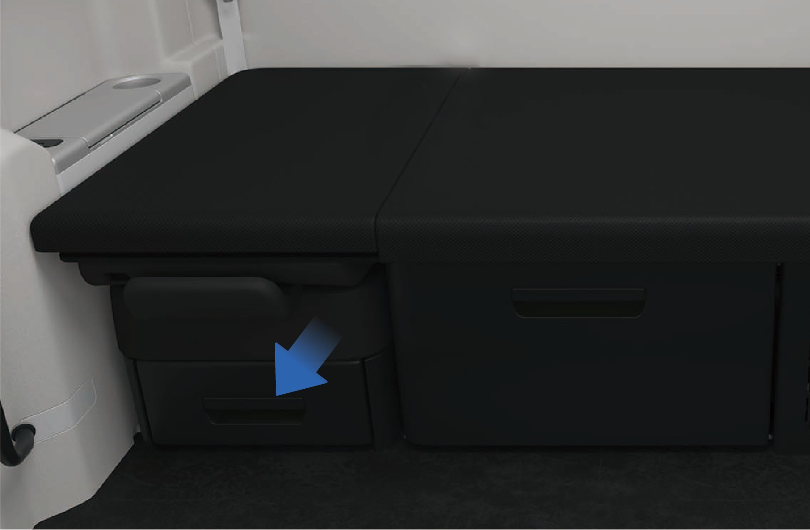
Entnehmen Sie das Schlafbereich-Schutznetz aus dem Aufbewahrungskasten unter dem Beifahrersitz und stecken Sie die Buchse an einem Ende des Schlafbereich-Schutznetzes in den Befestigungspunkt auf der linken Seitenwand.

Ziehen Sie das Schlafbereich-Schutznetz aus dem Fenster und benutzen Sie es als Hilfsfluchtseil, um das Fahrerhaus schnell zu verlassen.
Warnung
Beim Aktivieren des Fensterbrechers kann das zerbrochene Fensterglas Glassplitter verursachen. Schützen Sie sich, indem Sie Ihren Arm zum Schutz Ihrer Augen verwenden.
Nehmen Sie den Fensterbrecher nicht ohne Genehmigung auseinander oder modifizieren Sie ihn nicht. Alle Produktschäden oder andere Folgen, die aus einer unbefugten Demontage, Modifikation oder Verwendung, die nicht unseren angegebenen Anforderungen entspricht, resultieren, gehen zu Lasten des Bedieners.
zu Lasten des Bedieners.
Der Fensterbrecher kann unter Wasser aktiviert werden, jedoch ist eine längere Unterwassertauchung streng verboten.
Überprüfen Sie regelmäßig, ob die Befestigungselemente des Fensterbrechers locker sind und ob der Zugring und das Schlafbereich-Schutznetz beschädigt sind.
Verhindern Sie bei der täglichen Fahrzeugwartung, dass alle Komponenten des Fensterbrechers mit Wasserquellen oder ätzenden Substanzen in Berührung kommen, um Produktkorrosion und anschließendes Versagen zu vermeiden.
Halten Sie sich von Feuerquellen fern und ersetzen Sie den Fensterbrecher nach der Verwendung umgehend.
Betätigen Sie den Zugring nicht willkürlich in Nicht-Notsituationen. Alle durch Fehlbedienung verursachten Folgen gehen zu Lasten des Bedieners.
8ISchutzausrüstung für Notfallrettungskräfte
Notfallrettung
Dieses Fahrzeug wird von einem Hochspannungsbatteriesystem angetrieben. Bei einer schweren Kollision können gefährliche Zustände auftreten, einschließlich Hochspannungsstromeinsickerung, Batteriepaketchäden und Leckagen chemischer Flüssigkeiten. Notfallhelfer müssen geeignete persönliche Schutzausrüstung (PSA) tragen, bevor sie sich dem Fahrzeug nähern oder daran arbeiten.
Tragen Sie stoßfeste Schutzbrille bei der Arbeit an Hochspannungssystemen.
Tragen Sie Klasse-0-(1.000 V zugelassene) Isolierhandschuhe beim Umgang mit Hochspannungskomponenten.
Verwenden Sie isolierte Werkzeuge für Hochspannungsarbeiten bei der Arbeit an Hochspannungskomponenten.
Halten Sie isolierende Rettungshaken bereit.
Halten Sie einen für Lithiumbatterie-Brände geeigneten Feuerlöscher bereit.
Hinweis
Bei der Arbeit an Hochspannungskomponenten muss ein Zwei-Personen-Sicherheitssystem angewendet werden. Eine Person muss beaufsichtigen, während eine andere die Arbeit ausführt. Es ist verboten, dass zwei oder mehr Personen
gleichzeitig arbeiten. Machen Sie keinen körperlichen Kontakt mit der Person, die die Arbeit ausführt.
Notfallhelfer müssen bei Rettungsarbeiten allen Metallschmuck ablegen.
8JInformationen zum Hochspannungssystem
Notfallrettung

Hochspannungsbatterie
Rechter CCS1-Modus-Ladeanschluss
Linker MCS-Modus-Ladeanschluss
Hochspannungskabelbaum
Antriebsmotor
Hinweis
Berühren Sie während des Starts und Betriebs keine Teile mit „Hochspannungswarnzeichen" oder orangefarbene Teile des Fahrzeugs.
Es ist streng verboten, die Hochspannungsbatterie des Fahrzeugs zu betreten oder anzustoßen.
Anmerkung
Wenn die Hochspannungsbatterie und die Motor-Kontrollleuchten auf dem Kombi-Instrument dauerhaft leuchten, wenden Sie sich sofort an den Kundendienst und verwenden Sie ein Diagnosegerät, um den Fehlercode auszulesen.
Wenn das EIC-System Rauch entwickelt, Feuer fängt oder explodiert, verlassen Sie bitte sofort das Fahrzeug, rufen Sie die Polizei und ergreifen Sie Sicherheitsmaßnahmen.
Tragen Sie bei der Arbeit am EIC-System bitte Isolierhandschuhe, Isolierschuhe und isolieren Sie die Werkzeuge. Machen Sie keinen körperlichen Kontakt mit der Person, die die Arbeit ausführt.
8KDeaktivierungsmethode des Hochspannungssystems
↑ Nach obenNotfallrettung
8K.1Hochspannungsabschaltung von außen
Das Fahrzeug parken, die EPB betätigen.
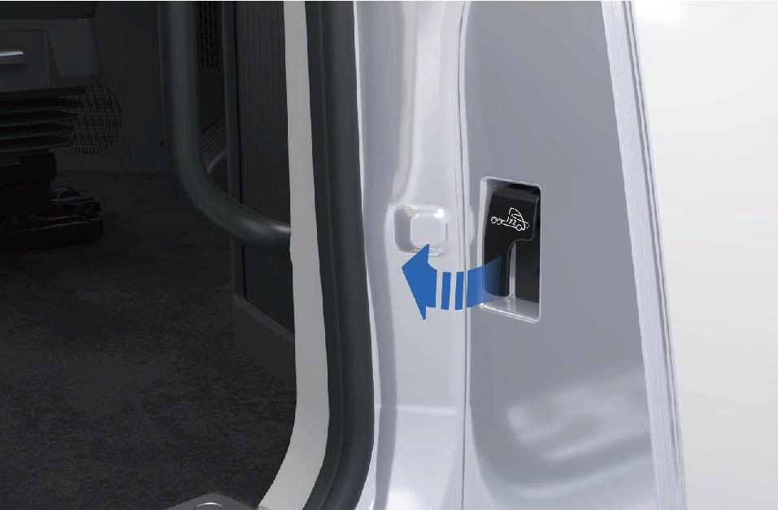
Den Motorhaubenöffnungshebel zweimal hintereinander ziehen, um die Motorhaube zu entriegeln.


Suchen Sie den Niederspannungs-MSD im Motorraum und entfernen Sie ihn. Das Fahrzeug deaktiviert dann das Hochspannungssystem automatisch.
8K.2Hochspannungsabschaltung von innen
Das Fahrzeug parken, die EPB betätigen.
Öffnen Sie die Verkleidungsabdeckung unten links am Armaturenbrett, suchen und trennen Sie den Niederspannungs-MSD. Das Fahrzeug schaltet dann das Hochspannungssystem automatisch ab.
Warnung
Tragen Sie beim Berühren von Hochspannungskomponenten unbedingt geeignete persönliche Schutzausrüstung.
Es ist verboten, die Hochspannungsbatteriekomponenten zu berühren, auch wenn das Hochspannungssystem deaktiviert wurde. Tragen Sie unbedingt geeignete persönliche Schutzausrüstung, wenn es
notwendig ist, die Hochspannungsbatteriekomponenten zu bedienen.
Wenn Schäden an Hochspannungskomponenten festgestellt werden, umwickeln Sie die beschädigten Teile unbedingt mit Isolierklebeband.
Anmerkung
Im Notfall kann der Bediener den orangefarbenen Kabelbaum am MSD durchtrennen, um zu verhindern, dass der Kabelbaum wieder unter Spannung gesetzt wird, und damit das Fahrzeug das Hochspannungssystem automatisch deaktiviert.
Im Falle einer Fahrzeugkollision wird das Hochspannungssystem automatisch deaktiviert.
8LRettung bei Fahrzeugbrand
Notfallrettung
Im Falle eines Fahrzeugbrands beurteilen Sie sofort den Schweregrad des Brandes. Wenn das Feuer klein und beherrschbar ist, sollten Notfallhelfer einen geeigneten Feuerlöscher verwenden, wie z. B. einen Trockenpulverlöscher, CO₂-Löscher oder trockenen Sand.
Wenn das Feuer groß ist oder die Batterie stark gequetscht oder verbogen vorgefunden wird, wenden Sie kontinuierlich große Wassermengen an, um das Feuer zu bekämpfen. Entfernen Sie gleichzeitig alle brennbaren Materialien vom brennenden Fahrzeug, um eine Ausbreitung des Feuers zu verhindern.
Warnung
Wenn das Fahrzeug Feuer fängt, müssen alle Insassen sofort evakuieren. Rufen Sie den Notruf gemäß der Situation am Unfallort (Notruf: 112) an und informieren Sie die Notfallhelfer, dass es sich bei dem Fahrzeug um ein batterieelektrisches Fahrzeug mit einem Hochspannungsbatteriesystem handelt, das Risiken für Stromschläge, chemische Exposition und thermisches Durchgehen birgt.
Wenn Notfallhelfer feststellen, dass sich Insassen im Fahrzeug befinden und die Tür während der Rettung nicht geöffnet werden kann, können sie ein Rettungswerkzeug verwenden, um das Türfensterglas an seinem Rand einzuschlagen, um eingeschlossenen Insassen zu helfen, das Fenster einzuschlagen und zu entkommen.
↑ Nach obenHinweisBrände in Hochspannungskomponenten müssen mit einem für Lithiumbatterien geeigneten Feuerlöscher gelöscht werden.
8MRettung eines Fahrzeugs bei Überflutung
Notfallrettung
Ein Fahrzeug, das durch Hochwasser gefahren wurde, kann keine offensichtlichen äußeren Schäden aufweisen, aber das Hochspannungssystem kann beeinträchtigt sein und ein Risiko einer elektrischen Leckage aufweisen. Daher müssen Notfallhelfer beim Retten von überfluteten Fahrzeugen geeignete Schutzausrüstung tragen, um das Risiko eines Stromschlags zu vermeiden, der zu schweren Verletzungen oder zum Tod führen kann.
Warnung
Notfallhelfer müssen vor dem Berühren von Hochspannungssystemkomponenten im Wasser geeignete Schutzausrüstung tragen, um einen Stromschlag zu verhindern.
Nachdem Notfallhelfer das Fahrzeug aus dem Überflutungsgebiet entfernt haben, lassen Sie das Fahrzeug vollständig trocknen, bevor weitere Arbeiten durchgeführt werden, um einen Stromschlag zu verhindern.
8NNotwendigkeit der Wartung
Tägliche Wartung
↑ Nach obenRegelmäßige Routine- und planmäßige Wartung ist unerlässlich, um einen sicheren Betrieb, Zuverlässigkeit und optimale Fahrzeugleistung sicherzustellen und langfristige Wartungskosten zu minimieren.
Routinewarungsaufgaben, die in diesem Handbuch beschrieben sind, können vom Bediener gemäß den entsprechenden Anweisungen durchgeführt werden.
Windrose empfiehlt, alle planmäßigen Wartungsarbeiten in einem autorisierten Windrose-Servicezentrum durchführen zu lassen.
HinweisDer Betreiber ist dafür verantwortlich, das Fahrzeug zu warten und sicherzustellen, dass alle Komponenten den geltenden EU- und nationalen Straßenfahrzeugvorschriften entsprechen, einschließlich der einschlägigen EU-Typgenehmigung und Anforderungen an die Betriebssicherheit, einschließlich, aber nicht beschränkt auf Reifen, Seitenabweiser, Dachablenkbleche, Seitenverkleidungen, Stoßfänger, vordere Abdeckungen und den Fahrzeuggeschwindigkeitsbegrenzer. Sie müssen sicherstellen, dass die Leistung dieser Komponenten stets den Originalspezifikationen der ersetzten Komponenten entspricht oder diese übertrifft.
dieses Handbuchs.
Dieses Handbuch enthält die Informationen, die zum Betrieb und zur Wartung des Fahrzeugs und seiner Komponenten benötigt werden. Detailliertere Informationen zur Fahrzeugwartung finden Sie im Windrose Produktgarantiehandbuch.
Dieses Fahrzeug muss gemäß den Angaben im Windrose Produktgarantiehandbuch regelmäßig inspiziert und gewartet werden, um den Garantieschutz des Herstellers für das Fahrzeug zu gewährleisten. Die im Fahrzeug installierten Systeme sind hochentwickelt, und es gibt strenge Kundendienstanforderungen für Elektrofahrzeuge gemäß den nationalen Gesetzen und Vorschriften. Daher
AnmerkungWenn Sie Fragen dazu haben, wie Sie Ihr Fahrzeug warten sollen, wenden Sie sich direkt an ein autorisiertes Windrose-Servicezentrum für Hilfe.
9AServicemodus
↑ Nach oben 6635Tägliche Wartung
9BInspektion des elektrischen Antriebssystems
 Tägliche Wartung
Tägliche Wartung
6646Überprüfen Sie vor dem Starten des Fahrzeugs, ob die relevanten auf dem Kombi-Instrument angezeigten Daten normal sind. Wenn die Daten abnormal sind, fahren Sie das Fahrzeug nicht. Stattdessen zeichnen Sie den Systemfehlertyp und die zugehörigen Daten auf und melden Sie die Informationen an das autorisierte Windrose-Servicezentrum.
HinweisWenn das Hochspannungsbatterie- oder Motorsystem ausfällt, wenden Sie sich rechtzeitig an ein autorisiertes Windrose-Servicezentrum zur Reparatur.
Der Geschwindigkeitsbegrenzungs-Testschalter im Servicemodus wird nur zur Überprüfung der Fahrzeuggeschwindigkeitsbegrenzung verwendet. Nach der Aktivierung dieser Funktion wird der Schalter hervorgehoben. Er muss während der normalen Fahrt geschlossen gehalten werden.
Der Motorkühlmittelpumpenschalter, der Batteriekühlmittelpumpenschalter, der Kompressorschalter des linken Batteriepakets, der Kompressorschalter des rechten Batteriepakets und der aktive Kühlergrill-Klappenschalter im Servicemodus werden nur zur Fahrzeuginspektion und zum Kühlmittelfüllen verwendet. Sie müssen
9CReifendrucküberwachung
↑ Nach obenTägliche Wartung
Dieses Fahrzeug ist mit einem Reifendrucküberwachungssystem ausgestattet, das den Reifendruck auf dem Kombi-Instrument und dem Fahrzeuginformationsbildschirm anzeigt. Wenn der Reifendruck abnormal ist,
während der normalen Fahrt geschlossen gehalten werden.
fahren Sie das Fahrzeug bitte nicht lange weiter und wenden Sie sich rechtzeitig an ein autorisiertes Windrose-Servicezentrum.
9DBeleuchtungsinspektion
Tägliche Wartung
↑ Nach obenDieses Fahrzeug ist mit einer Selbsttestfunktion zur Überprüfung der Funktionalität jeder Fahrleuchte ausgestattet.
9D.1 Bedienungsanleitung
Bedienungsanleitung
↑ Nach obenSie können diese Funktion aktivieren, indem Sie „Steuerzentrale" auswählen, zur „Überwachungs"-Oberfläche wechseln und auf dem Fahrzeuginformationsbildschirm des Armaturenbretts auf die Schaltfläche „Fahrlicht-Selbsttest" tippen. Nach der Aktivierung werden alle Leuchten des Fahrzeugs gleichzeitig eingeschaltet. Sie können die Leuchten und Anzeigen auf dem Kombi-Instrument beobachten, um festzustellen, ob eine defekte Leuchte vorhanden ist.
9D.2Vorsichtsmaßnahmen
↑ Nach obenWarnungWenden Sie sich bei Vorhandensein defekter Leuchten rechtzeitig an ein autorisiertes Windrose-Servicezentrum zur Überprüfung und Reparatur der Fahrzeugleuchten.
9EInspektion von Hupen und Scheibenwaschanlage
Tägliche Wartung
Überprüfen Sie die elektrische/Drucklufthupen wie folgt:
Fahrzeug parken, die Hupentaste am Lenkrad drücken, um zu überprüfen, ob die elektrische Hupe ordnungsgemäß funktioniert.
Drücken Sie den Umschalter für Elektro-/Drucklufthupen, drücken Sie den Hupenschalter wiederholt und überprüfen Sie, ob die Drucklufthupe ordnungsgemäß funktioniert.
Schalten Sie das Fahrzeug ein, schalten Sie den Wischerschalter ein und überprüfen Sie, ob der Wischer in jeder Schaltstufe ordnungsgemäß funktioniert.
9FHochspannungsbatterie
↑ Nach oben 6701Routinewartung
9F.1Position der Hochspannungsbatterie
6708Die Hochspannungsbatterie befindet sich unter dem Fahrzeugboden. Wenn das Fahrzeug auf holprigen oder unebenen Straßen fährt, achten Sie darauf, Kollisionen zu vermeiden.
WarnungWenn die Hochspannungsbatterie bei einem Aufprall Feuer fängt, fahren Sie sofort an den Fahrbahnrand und evakuieren Sie die Insassen aus dem Fahrzeug und weg vom Verkehr. Wenn die Fahrzeuggeschwindigkeit unter 20 km/h liegt, wird die elektrische Schiebetür automatisch entriegelt; wenn die Fahrzeuggeschwindigkeit unter 6 km/h liegt, öffnet sich die elektrische Schiebetür automatisch. Um die Sicherheit der Insassen im Fahrzeug zu gewährleisten, verlangsamt das System das Fahrzeug automatisch und hält es an, wenn der Fahrer das Fahrzeug in der oben genannten Situation nicht innerhalb von 4 Minuten abbremst.
9F.2Wartung der Hochspannungsbatterie
Der SOC der Hochspannungsbatterie muss kalibriert werden:
einmal pro Monat.
Nachdem das Fahrzeug mehr als 3 Wochen gelagert wurde, sollte mindestens einmal eine SOC-Kalibrierung durchgeführt werden.
Kalibrierungsmethode:
Verwenden Sie die Hochspannungsbatterie bis auf 20 %–25 % SOC.
Laden Sie die Hochspannungsbatterie vollständig auf.
Verwenden Sie die Batteriekapazität bis auf 40 %–60 % SOC.
9GKühlmittel
↑ Nach oben 6738Routinewartung
9G.1Kühlmittelauswahl
6743Wählen Sie bitte das Kühlmittel mit dem entsprechenden Gefrierpunkt entsprechend der Fahrumgebung, um den normalen Betrieb des Fahrzeugkühlsystems sicherzustellen.
9G.2Inspektion des Kühlmittels
↑ Nach obenÜberprüfen Sie nach dem Abkühlen des Kühlmittels, ob der Kühlmittelstand im Ausgleichsbehälter zwischen den MIN- und MAX-Markierungen liegt. Wenn das Kühlmittel unzureichend ist, leuchtet die Warnleuchte auf dem Kombi-Instrument auf, um Sie daran zu erinnern, Kühlmittel nachzufüllen.
Wenn das Kühlmittel Schwebstoffe, Ablagerungen oder Verfärbungen aufweist,
ersetzen Sie es sofort durch neues Kühlmittel.
Überprüfen Sie regelmäßig den Gefrierpunkt des Kühlmittels, um sicherzustellen, dass er den Anforderungen der lokalen Umgebung entspricht, und ersetzen Sie es regelmäßig.
9G.3Kühlmittel ersetzen
Lassen Sie das Kühlmittel wie folgt ab:
Das Fahrzeug auf ebenem Boden parken.
Den EPB-Schalter einschalten.
Nach dem Abkühlen des Kühlmittels den Einfüllverschluss des Ausgleichsbehälters abschrauben.
↑ Nach oben4. Den Ablassschrauben am Boden des Kühlers lösen, um das Kühlmittel abzulassen.
9G.4
Kühlmittel auffüllen

Füllen Sie das Kühlmittel wie folgt auf:
Das Kühlmittel langsam und gleichmäßig bis zum MAX-Stand auffüllen und den Einfüllverschluss festziehen.
Das Fahrzeug einschalten und die Wasserpumpe ca. 10 Minuten laufen lassen.
Das Fahrzeug ausschalten und das Kühlmittel auf den MAX-Stand auffüllen.
Den Einfüllverschluss des Ausgleichsbehälters festziehen.
Warnung
Verwenden Sie das von Windrose empfohlene Kühlmittel. Mischen Sie keine verschiedenen Kühlmitteltypen, um Reaktionen zu vermeiden, die den Motor und den Kühler beschädigen oder das Kühlsystem verstopfen können.
Fügen Sie dem Kühlsystem niemals andere Flüssigkeiten als Kühlmittel hinzu, um Motor und andere Komponenten nicht zu beschädigen.
Treten Sie nicht auf den Ausgleichsbehälter.
Hinweis
Überprüfen, auffüllen und ersetzen Sie das Kühlmittel regelmäßig.
Spülen Sie das Kühlsystem beim erstmaligen Hinzufügen oder Ablassen des Motorkühlmittels mindestens 3-mal mit sauberem Wasser.
Achten Sie beim Hinzufügen des Kühlmittels darauf, dass die Motor- und Raumtemperatur ≤45 °C beträgt, um Verbrennungen zu vermeiden.
Das Kühlmittel langsam und gleichmäßig bis zum MAX-Stand auffüllen.
Nachdem das Fahrzeug ausgeschaltet wurde, sind Motor, ECU, Kühler und andere Komponenten noch heiß. Öffnen Sie in diesem Fall nicht den Einfüllverschluss des Ausgleichsbehälters. Andernfalls spritzt heißes Kühlmittel oder Dampf heraus und verursacht Verbrennungen. Führen Sie Inspektion,
Austausch und Befüllung des Kühlmittels durch, nachdem die Temperatur des Motorsystems gesunken ist.
Nur Fachleute dürfen den Druckdeckel auf der Seite des Ausgleichsbehälters entfernen.
9G.5Reinigung des Kühlers
↑ Nach obenNachdem der Kühler eine Zeit lang in Betrieb war, können Insekten, Pappelwolle, Schmutz oder andere Rückstände in den Kühlrippen die Kühlleistung des Kühlsystems verringern. Sie müssen die Außenfläche des Kühlers häufig überprüfen und Fremdkörper rechtzeitig entfernen (nicht mit Hochdruckgas oder Wasser ausspülen).
9G.6Wartung des Kühlsystems
Überprüfen Sie das Kühlsystem, um sicherzustellen, dass es nicht undicht ist. Überprüfen Sie vor der Fahrt, ob das Kühlsystem undicht ist. Es gibt 4 häufige Gründe für Wasserverlust:
Die Schweißstelle des Kühlers ist undicht; der Kühler sollte ersetzt werden.
Das Altern und Reißen des Schlauchs sowie der Rost der Rohrschweißstelle können zu Kühlmittelleckagen führen. Bitte ersetzen Sie das Rohr.
Die Verwendung von minderwertigem Kühlmittel verursacht elektrolytische Korrosion und Leckagen des Kühlsystems. Reinigen Sie das Kühlsystem mit einem speziellen Reinigungsmittel und fügen Sie nach der Installation neues Kühlmittel hinzu, das den Anforderungen entspricht.
Die Kühlrohrschelle ist locker. Ersetzen oder ziehen Sie die Schelle mit dem entsprechenden Werkzeug fest.
9HReifen
Routinewartung
Reifen sind die Verbindung zur Straße und beeinflussen die Fahrsicherheit. Überprüfen Sie die folgenden Reifenpunkte regelmäßig oder vor der Fahrt:
Reifendruck
Beachten Sie beim Überprüfen des Reifendrucks, dass sich der Druck mit der Temperatur ändert.
Reifenprofil
Das Reifenprofil beeinflusst die Griffigkeit und Kontrolle des Reifens. Je geringer die Tiefe oder je weniger Profil, desto schlechter sind die Griffigkeit und Kontrolle des Reifens.
Reifenzustand
Überprüfen Sie vor der Fahrt den Reifenzustand:
Äußere Schäden;
Fremdkörper im Reifenprofil;
Fremdkörper im Reifen (Zwillingsreifen);
Risse oder Dellen;
Einseitiger Schulterreifenverschleiß oder unregelmäßiger Profilabrieb.
Reifenlebensdauer
Wenn der Reifen länger als 6 Jahre in Betrieb war, ersetzen Sie ihn durch einen neuen.
Warnung
Nach dem Abstellen des Fahrzeugs warten Sie, bis der Reifen abgekühlt ist, bevor Sie aufpumpen oder ablassen.
Der Reifendruck sollte innerhalb eines vernünftigen Bereichs gehalten werden. Zu hoher oder zu niedriger Reifendruck beschleunigt den Reifenverschleiß, erhöht den Energieverbrauch und verlängert den Bremsweg. In schweren Fällen kann ein Reifenplatzer auftreten, der zu Verkehrsunfällen und sogar Personenschäden führen kann.
Vor der Fahrt müssen Sie die Integrität des Reifenprofils überprüfen. Übermäßig abgenutztes Profil verursacht auf nassen Straßen (Regentage, Schneetage) oder bei hoher Geschwindigkeit schweres Schleudern, was zu einem Kontrollverlust des Fahrzeugs und sogar zu Personenschäden führen kann.
Risse, Dellen oder äußere Schäden können zu einem Reifenplatzer führen. Wenn vorhanden, sollte der Reifen sofort repariert oder ersetzt werden, um Unfälle zu vermeiden.
Hinweis
Bitte befolgen Sie die lokalen und nationalen Vorschriften für den Verschleißstandard des Reifenprofils. Wenn der Profilabrieb den angegebenen Wert überschreitet, sollte der Reifen so bald wie möglich ersetzt werden.
Vermeiden Sie Kontakt der Reifen mit Öl, Fett, Kraftstoff usw., da dies die Reifenalterung beschleunigen kann.
Achten Sie beim Parken darauf, dass nicht nur ein Teil des Reifens den Boden berührt oder parken Sie nicht auf Straßen mit scharfen Steinen.
↑ Nach obenAnmerkungDer korrekte Reifendruck ist in der Reifendrucktabelle angegeben.
9ILenksystem
↑ Nach obenRoutinewartung
Überprüfen Sie vor der Fahrt das Leergang und die Lockerheit des Lenkrads, schütteln Sie das Lenkrad, um sicherzustellen, dass es verriegelt ist. Überprüfen Sie während der Fahrt, ob eine schwere Lenkung, ein zitterndes Lenken oder ein Lenkversatz vorhanden ist. Sollte einer der oben genannten Fälle eintreten, halten Sie das Fahrzeug sofort an und wenden Sie sich an ein autorisiertes Windrose-Servicezentrum.
9JHochspannungssicherheitswartung
↑ Nach obenRoutinewartung
9J.1Grundsätze des sicheren Betriebs unter Hochspannung
↑ Nach obenNehmen Sie keine Änderungen vor und installieren Sie keine Zubehörteile am Hochspannungssystem und der Fahrzeugkarosserie ohne ordnungsgemäße Verfahren. Bitte befolgen Sie die Vorschriften, da dies andernfalls zu Bränden führen kann. Da im Hochspannungssystem des Gesamtfahrzeugs ein Stromschlagrisiko besteht, sollte das Hochspannungssystem von Arbeitern
bedient werden, die eine professionelle Ausbildung erhalten und die Qualifikation für die Beschäftigung gemäß den einschlägigen Sicherheitsvorschriften erworben haben.
9J.2Personalanforderungen
Fahrer sollten keine Komponenten mit Hochspannungswarnzeichen ohne ordnungsgemäße Verfahren demontieren, wenn sie keine Schulung erhalten haben; Berühren Sie keine Hochspannungskomponenten, wie z. B. orangefarbene Hochspannungskabel oder Komponenten, die mit Hochspannungskabeln in Berührung kommen, nach einem Unfall. Ein Verstoß dagegen kann zu einem Hochspannungsstromschlagrisiko führen. Beim Demontieren und Reparieren von Hochspannungselektrischen Komponenten sollte der Bediener gleichzeitig den Niederspannungs-Wartungsabschaltstecker herausziehen, die Niederspannungsbatterieversorgung trennen und den Hochspannungskreis unterbrechen.
Bediener sollten keinen Metallschmuck tragen, wie z. B. Uhren und Ringe, und sollten keine Metallobjekte in den Taschen der Arbeitskleidung haben, wie z. B. Schlüssel, Kugelschreiber mit Metallgehäuse, Mobiltelefone und Münzen.
Bediener sollten keine arbeitsunrelevanten Werkzeuge an den Arbeitsplatz mitbringen und müssen Metallwerkzeuge verwenden, deren Griffteile isoliert sind.
Vor dem Anschluss der Hochspannungsversorgung sollte der Bediener prüfen, ob sich Fremdkörper in der Nähe der Hochspannungsgeräte befinden, irrelevante Personen dazu auffordern, sich von den oben genannten Teilen fernzuhalten, und laut erinnern, wenn der Schalter geschlossen wird.
9J.3Wartungsanforderungen
↑ Nach obenDie Wartung und Reparatur des Fahrzeugs darf nur von Servicestationen oder Wartungseinheiten mit den entsprechenden Wartungsqualifikationen und von Personal, das eine entsprechende Schulung erhalten und die Qualifikationen erworben hat, durchgeführt werden. Andernfalls kann die Hochspannung im Hochspannungssystem Gefahr und sogar Lebensgefahr darstellen.
9J.4Ladungswartung
↑ Nach obenWenn das Fahrzeug längere Zeit geparkt war, sollte der Zustand der Hochspannungsbatterie alle zwei Wochen überprüft werden, um elektrische Lecks in der Hochspannungsbatterie zu verhindern. Das Fahrzeug sollte bei langer Parkdauer
regelmäßig aufgeladen und gewartet werden, um zu verhindern, dass die über einen langen Zeitraum nicht verwendete Hochspannungsbatterie die Leistung des Fahrzeugs beeinträchtigt.
9KBatterie
Routinewartung
Die Niederspannungsbatterie befindet sich im Motorraum. Die Lebensdauer und Funktion der Batterie werden von vielen Faktoren beeinflusst, wie z. B. Anzahl der Starts, Fahrstil, Fahrbedingungen, Klimabedingungen usw.:
Wenn die Batterie mehrmals vollständig entladen wird, kann ihre Lebensdauer verkürzt werden. Durch ausreichendes Laden der Batterie kann ihre Lebensdauer verlängert werden.
Die Startkapazität der Batterie nimmt mit der Zeit ab. Wenn das Fahrzeug lange geparkt wurde, muss die Batterie möglicherweise wieder aufgeladen werden.
Warnung
- Der Batterieelektrolyt ist ätzend. Wenn er versehentlich in die Augen oder auf die Haut gelangt, sofort mit viel Wasser abspülen und ärztliche Hilfe suchen.
Die Wartung und Pflege der Batterie sollte von fachlich ausgebildetem Personal durchgeführt werden.
Es ist verboten, die Plus- und Minuspole der Batterie gleichzeitig mit beiden Händen oder einem Leiter zu berühren.
Wenn die Niederspannungsbatterie Feuer fängt, verlassen Sie das Fahrzeug schnell. Wenn versehentlich Rauch eingeatmet wurde, begeben Sie sich bitte in ein offenes Gebiet und suchen Sie so bald wie möglich ärztliche Hilfe.
Es ist verboten, die Batteriezelle an ein externes 12-V-Elektrogerät anzuschließen.
Es ist verboten, die Batterie ohne Genehmigung zu demontieren, um zu verhindern, dass Säurelecks den menschlichen Körper, das Fahrzeug usw. beschädigen.
HinweisWenn Sie Folgendes bemerken, stellen Sie bitte sofort den Fahrzeugbetrieb ein und schalten Sie die Stromversorgung ab. Wenden Sie sich an das autorisierte Windrose-Servicezentrum für weitere Anweisungen:
Stromkabel, Stecker oder Kommunikationsleitungen gerissen oder beschädigt.
Anzeichen von Überhitzung, Rauch und Funken.
Batteriepaketschäden (z. B. Risse), Batterieleck.
Der Staub in der Batteriezelle kann dazu führen, dass die Batterie automatisch entlädt und leicht beschädigt wird.
9K.1 Reinigung der Batterie
Halten Sie die Batterieklemme und die Batterieoberfläche sauber und trocken.
Tragen Sie eine kleine Menge säurebeständiges Fett auf das untere Ende der Batterieklemme auf.
Verwenden Sie bitte handelsübliches Reinigungsmittel, um die korrodierten Teile der Batterie zu reinigen.
Warnung
Halten Sie die Oberfläche des Batteriepols und des Pfosten sauber, da andernfalls die Lebensdauer Ihrer Batterie verkürzt wird.
Verwenden Sie keine Reinigungsmittel mit brennbaren Substanzen, die das Batteriegehäuse beschädigen.
10AFahrzeugaußenabmessungen
Technische Daten
|
|
|
|
|---|---|---|---|
|
|
|
|
10BParameter des Antriebssystems
Technische Daten
|
|
|
|---|---|---|
|
|
|
|
|
|
|
|
|
|
|
|
|
|
|
|
|
|
|
|
|
|
|||
|---|---|---|---|
|
|
|
|
|
4 | 4 | |
|
|
|
|
|
|
|
|
|
|
|
|
|
|
|
|
|
|
|
|
|
|
|
|
|
|
|
|
|
|
|
|
|
|
||
|
|
|
|
|
|
||
|
|
|
|
|
|
||
|
|||
|---|---|---|---|
|
|
|
|
|
|
|
|
|
|
||
|
|
||
|
|
||
|
|
|
|
10CAnzugsmoment
Technische Daten
|
|
|
|
|---|---|---|---|
|
|
|
|
|
|||
|
|
|
|
|
|
|
|
|
|
|
|---|---|---|---|
|
|
|
|
|
|
|
|
|
|
|
|
|
|
|
|
|
|
|
|
|
|
|
|
|
|
|
|
|
|
|
|
|
|
|
|
|
/ |
|
|
|
/ |
|
|
|
|
|
|
|
|
|
|
|
|
|
|
|
|
|
|---|---|---|---|
|
|
|
|
|
|
|
|
|
|
|
|
|
|
|
|
|
|
|
|
|
|||
|
|
|
|
|
|
|
|
|
|
|
|
|
|
|
|
|
|
|
|
|
|
|
|
|
|||
|
|
|
|
|
|
|
|---|---|---|---|
|
|
|
|
|
|
|
|
|
/ |
|
|
|
/ |
|
|
|
|
|
|
|
|
|
|
|
|
|
|
|
|
|
|
|
|
|
|
|
|
|
|
|
|
|
Schraubengröße
Anzugsmoment (N·m)
Klimaanlagekreis
Verbindung Klimaanlagenkasten-Boden (allseitige Sechskant-Flansch-Sicherungsmutter)
M6×1 (8)
10±1
Verbindung Expansionsventil und Boden
M6×1 (8.8)
10±1
Kompressor und Kompressorhalterung
M8×1.25 (8)
25±2
Verbindung Masseleitung-Rahmen (Sechskant-Flanschschraube Volltschaft)
M10×1.5 (10.9)
25±2
Verbindung Masseleitung-Rahmen (allseitige Sechskant-Flansch-Sicherungsmutter)
M8×1.5 (8)
25±2
Verbindung Kompressorhalterung-Hilfsrahmen
M8×1.25 (10.9)
25±2
Verbindung Rohrbefestigungshalterung-Hilfsrahmen (Sechskant-Flanschschraube)
M14×2 (10.9)
160
Verbindung Rohrbefestigungshalterung-Hilfsrahmen (Sechskant-Flanschschraube Volltschaft)
M14×2 (10.9)
160
Verbindung Rohrbefestigungshalterung-Hilfsrahmen (allseitige Sechskant-Flansch-Sicherungsmutter)
M14×2 (8)
160
Befestigung Temperatursensor und Verkleidungsplatte
1,33
Verbindung Druckplatte
M6×1 (8.8)
10±1
|
|
|
|
|---|---|---|---|
|
|
|
10±1 |
|
M8×1.25 (10.9) | 10±1 | |
|
M8×1.25 (10.9) | 25±2 | |
|
M8×1.25 (10.9) | 25±2 | |
|
|
M20×1.5 (10.9) | 568±28 |
|
M12×1.5 (10) | 55±5 | |
|
M18×1.5 (10.9) | 270±25 | |
|
/ | 90±10 | |
|
|
|
210±20 |
|
|
M12×1.5 (10) | 55±5 |
|
M18×1.5 (10) | 270±25 | |
|
M14×2 (10.9) |
|
|
|
|||
|
M22×1.5 (10.9) | 700±50 | |
|
M22×1.5 (10) | 700±50 |
|
|
|
|
|---|---|---|---|
|
|
|
|
|
|
|
|
|
|
|
|
|
|
|
|
|
|
|
|
|
|
|
|
|
|
|
|
|
|
|
|
|
|
|
|
|
|
|
|
|
|
|
|
|
|
|
|---|---|---|---|
|
|
M20×1.5 (10.9) | 550±50 |
|
M20×1.5 (10.9) | 550±50 | |
|
M20×1.5 (10) | 550±50 | |
|
|
|
|
|
|
M8×1.25 (8.8) |
|
|
|
23–30 | |
|
|
|
|
|
|
|
|
|
M14×2 (10.9) | 137±5 | |
|
|
|
|
|
|
M14×2 (10.9) | 200±10 |
|
M14×2 (10.9) | 200±10 |
|
|
|
|
|---|---|---|---|
|
|
|
|
|
|
|
|
|
|
|
|
|
|
|
|
|
|
|
|
|
|
|
|
|
|
|
|
|
|
|
|
|
|
|
|
|
|
|
|
|
|
|
|
|
|
|
|
|
|
|
|---|---|---|---|
|
|
M14×1.5 (10.9) |
|
|
M14×2 (10.9) |
|
|
|
M14×1.5 (10.9) |
|
|
|
|
M16×1.5 (10.9) |
|
|
|
|
|
|
M14×1.5 (10.9) |
|
|
|
M14×1.5 (10.9) |
|
|
|
M14×1.5 (10) |
|
10DReifendrucktabelle
Technische Daten
|
|
|
|
|
|
|
|---|---|---|---|---|---|---|
|
|
|
|
|
|
|
|
|
|
|
|
|
|
|
|
|
|
|
|
|
|
|
|
|
|
|
|
|
|
|
|
|
|
|
|
|
|
|
|---|---|---|---|
|
|
|
|
|
|
|
|
|
|
|
|
10ERadspur-Parameter
Technische Daten
|
|
|
|---|---|---|
|
|
|
10FSteigfähigkeit
Technische Daten
| GZG | Getriebegang | Steigfähigkeit | ||
|---|---|---|---|---|
| 46 t | Gang D1 (Geschwindigkeit ≤12 km/h) | Drei Motoren | Dauersteigfähigkeit | 15 % |
| Maximale Steigfähigkeit | 30 % (60 s) | |||
| Vier Motoren | Dauersteigfähigkeit | 17 % | ||
| Maximale Steigfähigkeit | 33 % (60 s) | |||
| Gang D2 (Geschwindigkeit >12 km/h) | Drei Motoren | Dauersteigfähigkeit | 5 % | |
| Maximale Steigfähigkeit | 9 % (60 s) | |||
| Vier Motoren | Dauersteigfähigkeit | 6 % | ||
| Maximale Steigfähigkeit | 12 % (60 s) | |||
| 68 t | Gang D1 (Geschwindigkeit ≤12 km/h) | Drei Motoren | Dauersteigfähigkeit | 9 % |
| Maximale Steigfähigkeit | 20 % (60 s) | |||
| Vier Motoren | Dauersteigfähigkeit | 11 % | ||
| Maximale Steigfähigkeit | 22 % (60 s) | |||
| Gang D2 (Geschwindigkeit >12 km/h) | Drei Motoren | Dauersteigfähigkeit | 3 % | |
| Maximale Steigfähigkeit | 6 % (60 s) | |||
| Vier Motoren | Dauersteigfähigkeit | 4 % | ||
| Maximale Steigfähigkeit | 8 % (60 s) | |||
| GZG | Getriebegang | Maximale Steigfähigkeit der Motor-Bergabbremsung | ||
|---|---|---|---|---|
| 46 t | Gang D2 (Geschwindigkeit >12 km/h) | Drei Motoren | Dauersteigfähigkeit | 5 % |
| Maximale Steigfähigkeit | 9 % | |||
| Vier Motoren | Dauersteigfähigkeit | 7 % | ||
| Maximale Steigfähigkeit | 12 % | |||
| 68 t | Gang D2 (Geschwindigkeit >12 km/h) | Drei Motoren | Dauersteigfähigkeit | 3 % |
| Maximale Steigfähigkeit | 6 % | |||
| Vier Motoren | Dauersteigfähigkeit | 5 % | ||
| Maximale Steigfähigkeit | 8 % | |||
10GBetriebsdruck des Luftbehälters
Technische Daten
|
|
|
|---|---|---|
|
|
|
10HLeuchtmittel-Leistungstabelle
Technische Daten


Nebelscheinwerfer vorne, Abbiegelicht
Fernlicht
Vorderer Blinker, Tagfahrlicht
Vorderes Umrissleuchte
Vorderes Standlicht
Abblendlicht
Seitenblinker
Seitenmarkierungsleuchten-Kombination


Kennzeichenleuchte
Rückfahrscheinwerfer
Bremsleuchte/Schlussleuchte/Blinker
Hinterer Rückstrahler
Hinteres Arbeitsscheinwerfer
Seitenmarkierungsleuchten-Kombination
Seitenblinker
|
|
|
|
|
|---|---|---|---|---|
|
|
|
|
|
|
|
|
|
|
|
|
|
2 | |
|
|
|
|
2 |
|
|
|
|
2 |
|
|
|
|
2 |
|
|
|
2 | |
|
|
|
|
2 |
|
|
|
2 | |
|
|
|
2 | |
|
|
|
|
2 |
|
|
|
|
3 |
|
|
9 |
|
1 |
|
|
|
|
6 |
|
|
|
|
|
|---|---|---|---|---|
|
|
|
|
|
|
|
|
|
|
|
|
|
|
|
|
|
|
|
1 |
|
|
|
|
3 |
|
|
|
|
2 |
10IDaten der Schutzvorrichtung
Technische Daten
|
|
|
|
|
|---|---|---|---|---|
|
|
|
|


10JLeergewicht, GZG, Achslast, Antriebsart
Technische Daten
|
|
|
|
|
|
|---|---|---|---|---|---|
|
11.225 kg |
|
|
|
|
|
11.375 kg |
|
|
|
|
|
12.075 kg |
|
|
|
|
|
12.225 kg |
|
|
|
|
10KDruckluftkennliniendaten
Technische Daten
|
|
|
|
|---|---|---|---|
|
|
|
|